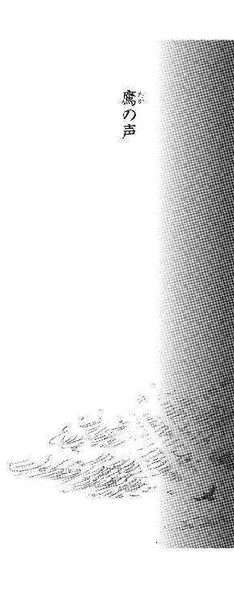
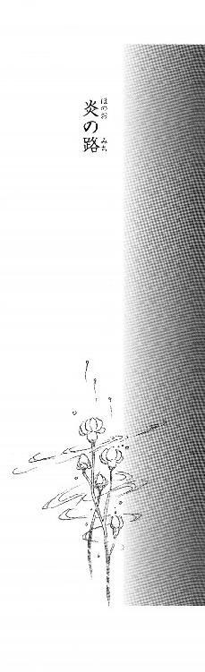
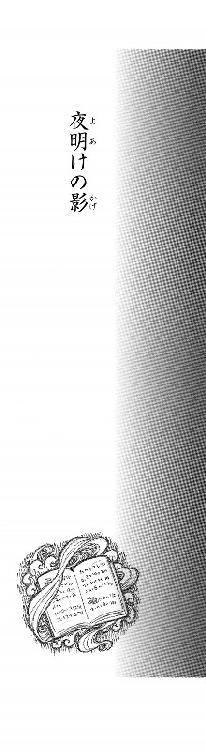
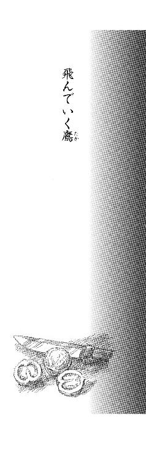

| [上橋菜穂子] 守り人シリーズ12 | |
| 上橋菜穂子 | |
| (2015) | |
|
守り人作品集 炎路を行く者
上橋菜穂子
|
|
守り人作品集 炎路を行く者 ［目次］ 炎路の旅人 十五の我には あとがき |
|
炎路の旅人 |

鷹の声
漆黒の天に、銀砂をまいたように、星が散っている。
船端に寄りかかってチョル（煙草）をくゆらせながら、ヒュウゴはぼんやりと、船べりに打ちつける波の音と、船板がきしむ音を聞いていた。
甲板を踏む音が聞こえてきても、ふりかえらず、左手に持っている小さな紙が海風になぶられて揺れるのを感じていた。
「......いつまで、そうしている気だ。」
ゆっくりとふりかえり、ヒュウゴは、小柄な呪術師と向かいあった。
ソドクは、むっつりとした顔をしていたが、その目には隠しきれぬ気づかいの色がのぞいている。
ヒュウゴはほほえんだ。
「波の音ってのは、ふしぎだな。......心を鎮めてくれる。聞いていると、どんなことでも、たいしたことじゃないような気がしてくる。」
ソドクは、ため息をついた。
「まあ、な。」
そして、顎で、ヒュウゴが左手に持っている紙を示した。
「その知らせ、信じているのか。南のダーク〈鷹〉が関わっているんだろう。」
ここ数日のあいだに、二羽の鷹が南の大陸から文を運んできたのだが、そのうちの一羽が運んできた密書には添え書きがあった。
その添え書きを書いた男は、たしかに、ヒュウゴたちとは競合する立場にある、ハザール王子側──〈南翼〉の密偵──だった。
いわば敵側ともいえるのだが、部下をあちら側に潜りこませるときに、ずいぶんと世話になっている。
もう、いい年になっているだろうその老ダーク〈鷹〉の、瓢々とした顔が目に浮かび、ヒュウゴは唇のはしをゆがめた。
「......長い付きあいだからな。長いといえば、あんたとの付きあいより長い。」
ソドクは眉根をよせた。
「ということは、おまえが〈南翼〉にいた頃の知りあいか。」
ヒュウゴは笑みを深めたが、そうだとも、そうでないとも答えず、ただ。背を船端にあずけて、夜空にはためいている帆を見あげた。
「寝てくれよ、ソドク。......おれはもうすこし、波の音の世話になる。」
ソドクは肩をすくめた。
「寝るよ。言われんでもな。だが、おまえも早く寝ろ。風がよければ、二、三日で着くんだからな。」
ヒュウゴは片手をちょっとふってみせた。
鼻を鳴らし、ソドクはなにかぶつぶつ言いながら船倉におりていった。
人の気配が消えると、海の気配だけがひろがっていく。
その圧倒的な暗さにひたりながら、ヒュウゴは目を細めて、チョルの小さな火を見つめていた。
〈南翼〉に潜入させている部下を、陰でささえてくれている老ダーク〈鷹〉の添え書きは、おもにハザール王子の宰相ハミルの動きに関するものだったが、最後に一行、政争とはなんの関わりもない言葉が書き添えられていた。
──......運河沿いのあの家の屋根には、まだ、鳥が群れていたぞ。
走り書きのように、そう書かれているのを読んだとたん、運河から吹きあがってくる風に乗って舞い飛ぶ白い鳥たちと、その鳥たちにかこまれていた人の面影が目に浮かび、その人の匂いさえ感じられた気がした。
（そういえば、彼は行ったことがあったな、あの家に。）
むかしのことだ。ずいぶんと遠い、むかしの。
この文を読んだ自分が、大きな決断をせまられることを察して、彼は、あの一文を書き添えたのだろうか。
餞のために。......あるいは、舵を切ることをためらうな、と言っているのか。
ヒュウゴは苦い笑みを浮かべた。
むかし、彼が手を差しのべて、この路に乗せてくれた。──こんなところまで来る路に。
すさまじい路だった。
なんとか歩みつづけることができたのは、胸の底に、いつも思いかえすことのできる温もりがあったからだ。
白い鳥、白い手......運河沿いの、あの家ともいえぬ。粗末な小屋......。
ヒュウゴは目をつぶり、思い出が、奔流のように流れだすにまかせた。
第一章 盾の滅び
［一］
炎の中を
南の大陸で、古い皇国がひとつ滅んだのは、冬も終わろうとする頃だった。
タルシュ帝国に征服されたその国の名は、ヨゴ皇国。
天ノ神の子孫が人身となって統べていると信じられてきた国であった。
＊
タルシュ軍がきた......という悲鳴のような叫びで、ヒュウゴは、びくっと目をさました。
「お兄ちゃん！」
脇に寝ていた妹のナァンが、首にしがみついてきた。ぎゅっと抱きしめてやってから、ヒュウゴは妹の腕をそっと、母におしつけた。
「母上！」
わずかに開いた戸の隙間からもれている明かりが、夜具の上に起きあがって、枕もとの荷物をつかんだ母の顔を、半分だけ白く浮かびあがらせている。
都の下街、大運河の岸辺に建っている古い倉庫を隠れ家にして、わずか三日。ほかの場所へ逃げる間もない、あまりにも早いタルシュ軍の到来だった。
ヒュウゴが知るよしもなかったが、このとき、都のさまざまな場所にちらばっている〈帝の盾〉の家族の隠れ家はみな、同時に、タルシュ軍によって襲撃されていたのだった。
〈帝の盾〉はヨゴ帝の近衛兵だ。他国の軍が宮殿を侵したときには、命を賭してヨゴ帝を守りぬくことを本懐とする最強の武人たちであった。
タルシュ軍は、手向かいをしない民には手をだすことはない。しかし、近衛兵など、征服された国の長に忠誠を誓っている武人たちにたいしては、のちに敵討ちや、国の再興を考える者があらわれぬように、その家族から親族にいたるまで完全に虐殺するので有名だった。
そのため、ヨゴ皇国軍が、都へ至る最後の防壁を明けわたしたという知らせがはいったとき、〈帝の盾〉たちは家族に別れをつげて、十数か所の、隠れるのによいと思われた建物へと分散させて逃がし、自分たちは、宮殿で帝を守る最後の任務についたのだった。
夜陰にまぎれてヒュウゴたちを逃がすとき、父はヒュウゴの肩をつかんで言った。
「母と妹を守るのだぞ。」
落ちついているものの、どこか感情がぬけおちたような父の顔を見ながら、覚悟を決めた顔というのは、こういう顔なのかと、ヒュウゴは思った。
夜空が禍々しく赤く染まっていた。都の外郭を守るすべての大門が燃えあがり、炎が空をあぶっているのだ。遠くから、たえずドドーン、ドドーンと地鳴りのような音が響いてくる。もはや守る者もない都の大門の外で整列し、夜明けを待つタルシュの大軍がたたいている太鼓の音だった。
ときおり、その響きに、耳慣れぬ甲高い笛の音がからまる。金属の笛の、細く高い音色が奏でる異国の調べは、明日の日の出とともに終わるヨゴの運命を暗示しているように、哀調に満ちていた。
「泣くな、ヒュウゴ。」
言われて、はじめて、ヒュウゴは自分が涙を流していることに気づいた。
「これぞ、〈帝の盾〉の本懐。──この日のために、われらは生きてきたのだ。」
一点のくもりもなく磨かれた父の鎧が篝火の光をはじいていた。
父が、ヨゴ皇国軍のなかでも精鋭中の精鋭〈帝の盾〉であるのだと、このときほど強く感じたことはなかった。父を誇りに思う気持ちが熱く胸にひろがった。
この清らかな父の鎧......白く輝く清らかな〈帝の盾〉たちの鎧に、タルシュ軍が触れられるはずがない。天ノ神さまが、そんなことをおゆるしになるはずがない。
（......かならず、かならず奇跡が起きる。）
最後の最後には、きっと奇跡が起きる。心善き者は報われるはずだ。父たちが命を賭して神の御子をお守りし、忠義をつらぬきとおせば、その誠は、天ノ神さまに伝わるはずだ。
「天に恥じぬ武人になれ。」
そう言って、父は口もとに、かすかに笑みを浮かべた。
それが父の顔を見た最後になった。
「母上！ こちらへ！」
ヒュウゴは、枕もとに置いておいた剣を剣帯ごとつかみあげて、腰につけながら叫んだ。
ここへ逃げこんだ家族たちは、好機を待って、裏口から運河に出て船で逃げる計画をたてていた。タルシュ軍にかぎつけられたときも、船で逃げると告げられていた。
そうするつもりなのだろう、廊下を裏口のほうへ駆けていく、たくさんの足音が入りみだれて聞こえてくる。
妹の手をひいた母が、裏口へ向かおうとするのをヒュウゴは止めた。
「そちらではありません！」
裏口から運河へ出たら、たすからない、と、ヒュウゴは思っていた。
タルシュ軍がまっさきに考えるのは退路を断つことだ。この建物が大運河沿いにあることを見れば、まず思いつくのが運河を使って逃げる手だろう。そう年上の若武者たちにたずねたが、触れたら切れそうなほどに緊張し、こわばった顔をしている彼らに、「成人ノ式も終えていない子どもはだまっていろ！」とどなられただけだった。
たしかに、これだけの人数が逃げるためには船が一番だ。タルシュ軍に見つからないうちに逃げるなら、それが最良の手段だろう。でも、もしタルシュが攻めてきたら......そのときは、この建物は逃げ道のない地獄になる。
伯母たちや祖父母、従兄たち、あるいは仲のよい友人たちと同じ避難所に割りあてられていたら相談できたかもしれないが、残念なことに、みな、別の避難所に分散していた。
だが、どなられて、ひっこんでいるわけにはいかない。
自分は武人の子だ。タルシュ軍が攻めてきたら、いさぎよく討ち死にする覚悟だが、母や幼い妹には、生きのびてほしかった。
母と妹を守るためには、大人にたよっていてはだめだ。そう思ったヒュウゴは、この建物に着いたときから必死に逃げ道を考え、頭の中で手順を何度もくりかえしてきた。
いまこそ、その手を実行する時だ。
「ヒュウゴ？ どこへ行くつもりです？」
興奮して目尻がつりあがった母が、うわずった声でたずねた。
「二階です、母上！」
「そんな......そんなところへ上がったら、逃げられなくなるではありませんか！」
「ですから、タルシュ兵も、きっと探すのを後まわしにします。わたしに、よい考えがあるのです。さあ、お早く！」
ヒュウゴは妹を抱いた母の手をつかむと、むりやりひっぱって廊下を階段のほうへ走った。興奮した女たちや子どもたちが裏口へ殺到していく流れにまきこまれぬよう、壁にはりつくようにして進み、母の背を押すようにして階段をのぼらせた。
数人の年かさの若者たちが、玄関の扉を守って闘いはじめたのだろう。剣が打ちあわされる高い響きと怒声がわきおこり、悲鳴と、長靴が石の床を蹴る足音がそれにまじった。
階段をのぼって二階の廊下へ出ると、騒音が遠くなった。ひんやりと冷たい空気に、かすかに羊毛の脂っぽい匂いがただよっている。積みあげられた羊毛の包みからただよってくる匂いだった。
「しずかに。なるべく足音をたてないでください。こちらです。」
ヒュウゴは、母と妹をみちびいて、廊下から羊毛倉庫へとはいった。
「こちらは、運河とは逆の方向でしょう......。」
言いかけた母が、ふと口をつぐんだ。玄関の戦闘ではない、裏口の方向から、悲鳴が聞こえてきたからだ。女たちの絶叫を聞き、母の顔から一気に血の気がひいた。
「サムラさん、トウラさん......たすけなければ......。」
仲のよい友人たちの名を、ぼうぜんと口にして、母はふるえはじめた。
ヒュウゴは歯をくいしばり、無言で首をふった。そして、母をひく手に力をこめた。
自分の肘をつかんでひっぱっていくヒュウゴを、母が奇妙なものでも見るように見ているのを頬に感じていたが、そんなことに、かまってはいられなかった。
ふいに母が立ちどまった。
おどろいてふりかえると、母は、けがらわしい、とでもいうように、つかまれている手をふりはらった。
「みなを見殺しにして、わたしたちだけ逃げるつもりなのですか。なんと......誇り高き〈帝の盾〉の息子ともあろうものが、なんということを......。」
ヒュウゴは激しく首をふった。
「わたしは逃げません。母上とナァンをぶじ逃がしたら、ここにもどって闘います。」
だが、眉根をよせた母は、なおも言いつのった。
「たすかる逃げ道があるのなら、みなに教えてあげれば......。」
焦りと恐怖にあぶられて、ヒュウゴは早口でどなるように言った。
「話そうとしましたが、子どもはだまっていろと、ののしられました！それに、わたしが見つけた方法では、母上たちを逃がすのがやっとなのです。」
こんなことをしている暇はない。ヒュウゴは、もどかしい思いで叫ぶように言った。
「わかってください、母上、わたしは父上にお約束したのです。母上と、ナァンをかならず守ると！いそがないと、やつらに見つかってしまう！」
そのとき、階下から、新たな細い悲鳴が聞こえてきた。ナァンがふるえた。
「アニヤちゃんの声だわ！」
ナァンが、ぱっと身をひるがえして走りだした。ヒュウゴが、あわてて手をつかもうとしたが、その手を、妹の細い手は、するりとすりぬけてしまった。
「ばか！ だめだ、行くな、もどってこい！」
母といっしょに、もつれるように、妹のあとを追いながら、ヒュウゴは叫んだ。
「どうしたのか、見にいくだけ！」
妹は、まるでネズミのようなすばしっこさで、階段を駆けおりていく。そのあとを追って、ヒュウゴたちが階段をおりはじめたとき、煙のにおいがただよってきた。屋根に火矢が放たれたのだ。二階に火の粉がはいれば、燃えやすい羊毛の倉庫だ。あっというまに火の手はまわってしまうだろう。
悪夢のようだった。
母が素直に従ってくれていれば、いまごろ、羊毛の包みを荷馬車に積むための滑車を使って、ひそかに裏通りに下りられたのに。この建物には、その裏通りに面した出口はないから、タルシュ兵の見張りもいないはずなのに。半地下の厩にある、羊毛を積む荷車にふたりを乗せて、逃がそうと思っていたのに......。
階段を駆けおり、ヒュウゴより一歩先に娘に追いついた母が、ひゅっと息をのんだ。裏口へ向かおうとしていたタルシュ兵と出くわしてしまったのだ。
「母上！」
ヒュウゴは叫んで、母の上におおいかぶさるようにして、その身体を押したおした。倒れたヒュウゴの頭の後ろを、風が、ふんっと、通りすぎた。
倒れたおかげで、間一髪、タルシュ兵が横にないだ剣を頭に受けずにすんだが、すぐに、タルシュ兵は逆手に剣を持ちかえて、ふたりを貫こうと、ふりかぶった。
ヒュウゴは剣を抜こうとあせったが、剣は、母の身体と自分の身体にはさまれてしまっていて、抜けない。
脇腹に焼けるような痛みが走った。母のうめきも聞こえた。
もがいたために身体の位置がずれ、タルシュ兵の剣はふたりの脇腹をかすって、石の床に突きあたって折れた。タルシュ兵が舌打ちして、短くなった剣を持ちかえている隙に、ヒュウゴは跳ねおきて、自分の剣を抜いた。
向きあった瞬間目にとびこんできたのは赤銅色の顔だった。自分たちとはまったくちがうその顔におどろき、ヒュウゴはそのタルシュ兵が、自分よりわずかに年上くらいの少年兵であることには気づかなかった。
血走った目をして、折れた剣をちらっと見たタルシュ兵に、ヒュウゴは、わめき声をあげながら斬りかかった。
命のやりとりをするのは、これがはじめてだった。父や師範にたたきこまれた剣術の技は、まったく思いだせなかった。ただ剣をふりまわし、すこしでも相手にとどかせようと必死だった。
背後で、どたどたと足音がした。兵士たちが、裏口の虐殺からもどってきたのだ。
それからのことは、ぬるくて、赤い、夢の中でもがいていたようで、ほとんどおぼえていない。
たぶん、少年兵と斬りあっているあいだに、母と妹は殺されたのだと思う。
少年兵に体当たりをし、その腕をしたたかに斬って、ふりかえった一瞬に、床に倒れているふたりが見えた。
その倒れ方は、生きている人のものではなかった。
それを目にした瞬間、心が、うつろになった。自分の目が見ているはずの景色が遠のき、うす赤い闇の中へ消えていく。耳鳴りがして、息ぐるしかった。
二階に火がまわったのだろう。煙が波うちながら階下までおりてきている。
赤くにごった、ぬるい湯の中のようなこの場から逃げたくて、ヒュウゴは走った。
追ってくる兵士たちのことも、駆けあがっていく階段の上は、もう火の海だということも、どうでもよかった。
追ってきた兵士たちは、ヒュウゴの姿が火の海に消えると、足をとめ、なにか言いあって、あざわらうような声をあげながら去っていった。
喉が焼ける。
ヒュウゴは、身体をまるめて炎の中を走りぬけた。
のぼっていく階段に、うすく煙がたなびいている。それが、ぼんやりと形をなした。うすい灰色の小さな足が、階段をのぼっていく。
（ナァン......。）
そうか、妹はたすかったのだ、と、にごった頭で、ヒュウゴは思った。死んだのではなく、ああして煙になって、身体から滑り出ただけなのだ。
ヒュウゴは、ゆがんだ笑みを浮かべて、滑るように動いていく妹のあとを追った。遠くに、母の背も見えてきた。
（母上、よかった......！）
二階には、もうもうと炎と煙が渦巻き、ヒュウゴはほとんど息ができなくなっていた。
それでも、笑みを浮かべながら、ヒュウゴは灰色の妹と母に追いつき、その手をひいて、窓のほうへ走った。走りながら、ヒュウゴはナァンにささやいた。
（もう、だいじょうぶだよ、兄が考えた逃げ道があるのだ。）
目がかすみ、汗がふきだしてきた。息ができぬ肺が、胸の中でのたうっている。
煙が流れ出ていく方向へ走るうちに、羊毛の積み下ろしをする滑車が、窓の外に並んでいる場所へ出た。窓といっても、積み下ろしをしやすいように窓枠はなく、床からすぐに外へ荷を滑り出せるようになっている。
咳きこみながら、ヒュウゴは手近なところにあった羊毛の包みをほどいて半分中身をとりだした。包みはそのままにして、床に置いてある鉛の錘を両手でっかんだ。
（こうするのです、母上。）
かたわらに、ぼんやりと見える母にほほえみかけ、ヒュウゴは鉛の錘を窓の下におろした。
カラカラと滑車がまわって錘が垂直に落ちていき、入れちがいに、荷をのせる籠が上がってきた。
窓から身をのりだして、それをつかまえると、ヒュウゴは籠をひっぱってきて床におろし、それに中身が半分になった羊毛の包みをのせた。
（さあ、ナァン、これに乗るんだ。）
灰色の妹が、おびえたようにゆらめいた。
（こわくないよ。だいじょうぶだ。兄がかかえていてやるから。）
たらたらと汗をかき、激しく咳きこみながら、ヒュウゴは妹をかかえて羊毛をしいた籠に乗りこんだ。
両手で滑車についている縄をつかみ、片足で床を蹴って、籠を宙に押し出すや、あっと思うまもなく、籠がもうれつな勢いで落下しはじめた。──錘がひとつでは、ヒュウゴの身体をささえるには軽すぎたのだった。
地面に激突したとたん、全身を突きぬけるような衝撃が走り、気が遠くなった。羊毛が身体の下になかったら、あちこち骨折していただろう。
ヒュウゴを乗せた籠は地面に激突すると、ひっくりかえり、ヒュウゴは倉庫と道路のあいだの溝に投げだされた。
軽くなった籠は、羊毛をヒュウゴや道路の上にふりまきながら、カラカラと宙にもどっていき、かわりに鉛の錘が落ちてきて、ガチーンと石畳にあたり、火花が散った。
そして、闇がおとずれた。
［二］
火の粉とたわむれるトカゲ魚
ぬるい水の中にヒュウゴは漂っていた。雨あがりの大気のような、精気あふれる匂いが身体をつつんで、沁みこんでくる。
見わたすかぎり、深い深い青だ。
透きとおった、その青がゆるやかに暗くなっていく。
母と妹がゆらめき、その暗い青にとけていくのが見えた気がした。自分もまた、青い水にとけて消えていく。.........心地よかった。
それなのに、自分の中にある、ごく小さな何かが、そのまま消えさるのを拒んだ。
その小さな何かが核となって、消えはじめていた身体がふたたび寄りあつまりはじめるのを、ヒュウゴは人ごとのように、ぼんやりと感じていた。
暗闇がうすれ、すこしずつ意識がもどってきても、ぬるい水の中にいるようだった。
さっきまで感じていた清らかな水の匂いではない、にごった側溝の水のにおいが鼻についた。どのくらい経ったのだろうか。まだ、夜は明けていない。
半地下の厩舎につながれている荷馬たちが、煙のにおいにおびえて、いななき、壁を蹴っている音が溝にひびいてきて、うるさかった。
目をあけると、赤黒い空にもうもうと煙がたなびき、その中を、白く透きとおった白魚のようなものが、身をくねらせながら舞っているのが見えた。
（......釣爪があるから、魚じゃない。）
そもそも魚が宙を舞っていることがふしぎなのだが、それをふしぎと思うほどの正気が、ヒュウゴには残っていなかった。
ただ、在るだけ。息をしているだけだった。
溝にはまりこんで、なかばねじれて空を見あげている身体は、まるで動かなかった。動きたいという気もしなかった。
倉庫の裏口や運河の探索を終えれば、やがて、この通りへも兵士がまわってくるだろう。そう思ったが、もう、どうでもよかった。
銀色の腹をきらめかせて火の粉の中をたのしげに舞っている、魚のような、トカゲのようなものが、ふいに、首をかしげてヒュウゴを見おろした。
まぶたのない黒い瞳と目が合った。......と、その奇妙なものは、するすると宙を舞いおりてきてヒュウゴの上にとまり、鉤爪をヒュウゴの髪に、尻尾を首に、からませてしまった。
なまあたたかい風がしがみついてきたようなふしぎな感触で、首に触れているはずの尻尾さえ、確かには感じられない。
ただ、なにか、問いかける声が聞こえるような気がした。
足音がひびいてきて、やがて、顔の上に影が落ちた。炎の熱がさえぎられ、すうっと冷たい風の匂いがした。目をあげると、だれかが自分をのぞきこんでいるのが見えた。
女だった。耳のわきのほつれ髪が風になぶられて、ゆれている。
生きているのかどうかたしかめるように、不安げに見おろしている。ヒュウゴは、ふうっと息を吐きだしながら、かすかに身動きをした。
女がしゃがみこんで、ヒュウゴの腕をつかみ、おずおずと、たすけ起こそうとした。
「......くそっ。」
歯をくいしばって、ヒュウゴは腕をひっぱられながら、そろそろと身体を起こした。
全身が痛い。目がまわって、むかむかしてきた。
唾を飲んで、必死に吐き気をこらえながら、ヒュウゴは立ちあがろうともがいた。
女が、ヒュウゴの身体の下に潜りこむようにしてささえてくれた。彼女の背が胸を押しあげたとたん、肋骨に激痛が走ったが、うめき声をのみこんで、耐えた。
ふたりはよろよろと暗い裏通りを横ぎり、路地へ逃げこんだ。どこへ行くつもりなのか、彼女は中腰でヒュウゴをかつぐようにして必死に歩いていく。女の身体はたよりなく、いまにも倒れそうだったが、ヒュウゴは足をなんとか動かすだけでせいいっぱいだった。
路地には、タルシュの襲撃の噂を聞きつけて、のぞきにきた人がたくさんいたが、よろめきながら歩いていくふたりを、顔をゆがめて見送るだけで、手を貸そうとする者はいなかった。万が一、路地にタルシュ兵が駆けこんできて、逃げている少年に手を貸している姿を見られたら、問答無用で斬り殺されるからだ。
ただ、人びとは、ふたりが通りすぎると身をよせあって路地をふさぎ、タルシュ兵がのぞきこんでも、ふたりの姿が見えないようにしてくれた。
たすけてくれた女は、網の目のように複雑に交叉し、くねくねとのびていく路地を、右に曲がり、左に曲がりしながら歩いていく。ときおり立ちどまって、壁によりかかり、息をととのえたが、すわりこみはしなかった。いちどすわってしまったら、立ちあがる力が残っていないことは、ふたりともわかっていた。
ようやく女が立ちどまったのは、倉庫の脇を流れていた大運河の支流にあたる、細い運河のほとりに建っている小さな家だった。
家の陰にヒュウゴをおろすと、彼女は、ぐったりと地面にすわりこんだ。ヒュウゴは壁によりかかって、あえぎながら、女を見た。
運河の灯火台が投げかけている光が、よりかかっている家の向かい側の家を、ぼんやりと浮かびあがらせている。家々の灯はとうに消えていて、その、かすかな明かりだけが、あたりを照らしていた。
女は顔をあげて、ヒュウゴを見た。そして、そっとヒュウゴの首のまわりをなでた。そのしぐさを見て、ヒュウゴは自分の首に、まだあの変な生き物が巻きついていることを知った。娘になでられると、その生き物は猫のように喉の奥を鳴らした。
よく見ると、彼女の首にも透きとおったトカゲのようなものが巻きついている。
ほっとしている気持ちが、ヒュウゴの首に巻きついている生き物から伝わってきた。
そのときはじめて、ヒュウゴは気づいた。......これが、この女の思いなのだということに。
この女は、出会ってから、ひとことも口をきいていない。ただ、ときおり、彼女の思いが、ヒュウゴの首に巻きついている生き物から伝わってくるのだ。うすい板戸に頭をつけたとき伝わってくる風のうなりのように。
背筋が、すうっと寒くなった。
その、ヒュウゴの恐怖を感じとったのか、女の顔がこわばった。
彼女が応える前に、家の戸が引きあけられ、中から中年の男がとびだしてきた。
「リュアン！ どこへ行ってたんだ！ こんな夜中に。」
リュアンと呼ばれた女は、あわてて、しずかに、というしぐさをした。男は闇をすかし見て、リュアンがひとりではないことに気づくと、ぎょっとしたように動きを止めた。
「......だれだ、それは。」
ささやき声でたずねてから、男は舌打ちをした。
「おまえに聞いてもしかたねぇな。また、火事を見にいったんだな？煙のにおいがすげぇぞ。そいつは、焼けだされたやつか？焼けだされたガキをたすけてきたのか。」
ひと息にそう言うと、男はかがみこんで、ヒュウゴをじろじろと見た。そして、ヒュウゴの剣帯に気づくと、顔をくもらせた。とっくに剣はなくしていたが、平民が持つような形ではない、きちっとした造りの短剣は、まだ帯にはさんだまま残っていた。
「あんた......。」
ヒュウゴには、女が、ここで話をしているより家の中にはいりたいと思っているのが感じられたが、男には、まるで伝わっているようすはなかった。ただ、女の身ぶりから、言いたいことを察したらしい。しかたない、という顔でヒュウゴをかかえて、立たせてくれた。
「とにかく家にはいろう。近所の連中が目をさましちまう。」
ヒュウゴは、男に抱きかかえられるようにして立ちあがった。立ちあがると、また、めまいが襲ってきた。どうにか家にはいるところまでは意識をたもっていたが、その後は、ぐるぐるとまわる闇の中に沈んでしまった。
［三］
青に飲まれた娘
カーン、カーンと、正午を知らせる鐘の音が東の鐘楼から響きはじめ、遠く北の鐘楼のかすかな鐘の音とまじり、奇妙な調べとなって空を渡っていく。
炎の記憶と、鐘の音がむすびついた火事の夢にうなされて、ヒュウゴは汗まみれになって、もがいた。
冷たい手が額に触れた。
はじかれたように目をさまして、ヒュウゴは、荒い息をついた。はあ、はあ、と何度も呼吸をくりかえすうちに、すこしずつ頭がはっきりとしてきた。ヒュウゴは、ゆっくり頭をかたむけて、枕もとにすわっている人を見あげた。
十六、七歳ぐらいだろうか。自分より、三つ、四つ年上に見える娘が、人のよさそうな顔に不安げな表情を浮かべて、ヒュウゴを見つめていた。
見知らぬ娘だった。
ヒュウゴがこれまで見たことのある女人たちは、みな、つややかな黒髪をしていたが、この娘の黒髪はあまりつやもなく、うなじでまとめてあるだけだ。襟元も、袖口もすりきれた貧しい衣をまとっている。
ごく平凡な顔だちの中で、ひとつだけ目をひくのは、その瞳だった。彼女の瞳は、ヨゴ人にはとてもめずらしい、鳶色に近い明るい色をしていた。
その首に巻きついているトカゲ魚が見えた瞬間、どっと昨夜の記憶がよみがえってきた。
炎、タルシュ兵、母と妹の悲鳴......その記憶の、あまりのすさまじさに、ヒュウゴはうめいて目をとじた。
なぐさめるような、問いかけるような、ささやきが聞こえた。ヒュウゴの首に巻きついている生き物が、娘の声でささやいているのだ。
かっと頭に血がのぼり、ヒュウゴは首に手をやって、生き物を乱暴にひきはがそうとした。ところが、手にはなにも触れない。たしかに気配は感じるのに、手には触れないのだ。
「ちくしょう！ なんなんだ、この化け物！」
床に手をついて跳ねおきようとしたとたん、全身に激痛が走った。筋肉が裂けるような痛みだった。ヒュウゴは夜具の上にくずれおちて、あえいだ。
喉が痛い。煙を吸った肺も、脇腹も。......なにもかもが、たまらなく痛かった。
涙があふれでて、ヒュウゴは、くいしばった歯をキリキリと鳴らしながら、泣いた。
母も妹も死んでしまった。
（母上が、あのとき、素直に従ってくれていれば......。）
母がかたくなだから、こんなことになったんだと思った。
時を巻きもどして、あの時にもどりたかった。あの時にもどれたら、母をどなりつけ、ひきずってでも......。そう思った瞬間、妹を追って駆けおりていった母の、前ががみの背中がまぶたの裏に浮かび、恨みもなにもかもを押しながして、ただ悲しみがあふれでた。
ナァンの手をひいていればよかった。ああなる前に、母にちゃんと考えを話しておけばよかった。──なにもかも、もうおそい。どんなに会いたくても、もう二度と家族には会えないのだ......。
娘は、しばらくなにも言わずにヒュウゴを見ていたが、やがて、ヒュウゴの感情の嵐がしずまっていくと、立ちあがって土間におり、水甕から水をお碗についで、もどってきた。
彼女は、そっとヒュウゴの首の後ろに手をさしいれて、ゆっくりと身体を起こしてくれた。
唇にあてられた碗から、冷たい水が、腫れた口の中をうるおして喉をするりとくだっていくと、胸の痛みがすこしだけ、やわらいだ気がした。
もういちど夜具の上に寝かされたときには、身体からなにかが抜けでてしまったかのようだった。悲しみは泥のように胸にたまっていたけれど、怒りはどこかへ消えていた。
激しく泣いたあとにやってくる、すべてが遠のいて、うつろになっていくような感覚が、いまはなぜか、とても恐ろしく感じられて、ヒュウゴは思わず、すがりつくように枕もとにいる娘を見つめた。
「......リュアンとか、呼ばれていた......。」
娘は、うなずいた。
「なぜ......わたしを、たすけてくれたのだ。」
声をだしているあいだだけ、遠のこうとする世界がもどってくる。会話をしているというより声をだすためだけに、ヒュウゴはたずねた。
すると、声が聞こえてきた。この変なトカゲ魚を伝わってくる思いを感じるのに慣れてきたせいだろうか。聞こえてきた声が、はじめて、言葉として感じられた。
──タラムーが、あんたさんを見つけたから。
耳で聞いているのではないのに、抑揚まで感じられる。武人階級のヒュウゴにはなじみのない、平民の話し方だったけれど、身分が上のヒュウゴをうやまってくれている心づかいが感じられた。
「タラムー？」
──アタ（魚）の襟巻き（ラムー）。勝手にそう呼んでいるだけです。
リュアンは、子どもっぽい名づけを恥ずかしがっているように、ちょっと笑って、自分の首に巻きついているトカゲ魚をなでた。その指が、トカゲ魚の肌と混じりあって見える。ふしぎな光景だった。
──タラムーは、炎が好きなんです。どこかで大きな炎があがると、飛んでいくんですよ。
火の粉のあいだを、たのしげに舞っていた姿をヒュウゴは思いだした。
「......こいつらは、なんなのだ？ こんな生き物、はじめて見た。」
──あたしも、なんだか知らないです。見える人と見えない人がいるようで。あんたさんも見えるんですね。空から見ていて、あんたさんと目が合ったときは、びっくりした。
ヒュウゴは眉をひそめた。
「......空から見ていて、わたしと目が合ったというのは、どういう意味だ？それに、どうして、きみの声がこいつから聞こえるのだ？」
リュアンは、なんと言ったらいいだろう、という顔をした。
──......あたしも、よくわからないんですよ。
リュアンは、しばし床に目をおとして、格子窓をすかしてはいってくる光が、床につくっている白い模様をながめていたが、やがて、目をあげた。
──あたしね、小さい頃に、いちど死んでいるんだと思うんです。
ほとんどおぼえていないんだけど、父さんの話では、井戸に落ちたんだって。
でも、あたしの思い出では、そこは井戸じゃないんです。
澄んだ水の中に浮かんでいて、はるか、底のほうは暗闇で......。
ヒュウゴは、そのふしぎな話に、けんめいに耳をかたむけようとした。
ともすると心が話からそれて、母と妹のことを考えそうになってしまう。そのたびにヒュウゴは、いま昼の光の中でリュアンが語っている物語に心をひきもどそうとつとめた。
──青いんですよ。目がくらくらするくらい、青くて......。
その、青い闇の底からなにかが上がってきて、あたし、飲みこまれたんです。
そのあとのことは、おぼえていないんです。気がついたら、父さんに抱きかかえられていてね。
そのときから、いろんなことが変わってしまったんです。声も、出なくなっちゃってね。
ヒュウゴは、まばたきをした。
青い闇の底......その光景が、ふっとまぶたの裏に浮かんで消えた。自分も、どこかでそんな光景を見たような気がする。夢を思いだしたような、とらえどころのない感覚だった。
「いくつぐらいのときのことだ？」
──四つぐらいでした。
「それから、ずっと、こいつ......このタラムーを通して話しているのか。」
リュアンは首をふった。
──タラムーたちに出会ったのは、二年前です。
痛い傷に触れたかのように、リュアンの顔がゆがみ、顎に力がはいるのが見えた。
──火事があって......。
そのころ、あたしらは東街のほうに住んでいたんだけど、隣が食堂で。
昼食時に火が出て、あたしは出かけていて、帰ってきたら、家が燃えてたんです。
父さんは仕事に出て、家にいないのはわかっていたけれど、母さんが、まだ中にいるかもしれないと思うと、こわくて身体がふるえてね......。
リュアンは、そっと自分の首に巻きついているタラムーをなでた。
──そのときに、この子たちが来たんです。きっと、火事の炎にひかれて来たんでしょう。屋根の煙突から家の中にはいったり、出たりしているこの子たちを見て、あたし思わず心の中で叫んだんです。
ねえ、あんたたち、家の中になにが見える？母さんが見えない？って。
そうしたら、一匹がこっちへおりてきて、あたしの首に巻きついたんですよ。
そのとたん、見えたんです。煙にまかれて、出口が見えなくて、涙を流している母さんの顔が......。
家の中にいる、もう一匹のタラムーに、あたしの魂が乗っかって、いっしょに見ている感じだったですね。あたし、母さんのところにおりていって首に巻きついて、こっちよって出口を教えたんです。
ヒュウゴは、いつしか話にひきこまれていた。
「......それで、たすけられたのか？」
リュアンは、うなずいた。
──そのときは。......でも、長いあいだ、煙を吸っていたのが身体にわるかったんでしょうねぇ。そのあと、母さん、病気になって、死んじゃったんですよ。
もっと早く、あたしが駆けつけていたら、母さん、煙をあんなに吸わなくてすんで、いまも生きているんじゃないかなって、ときどき思うんです。
リュアンは目をそらし、自分を元気づけ、気持ちを切りかえるように吐息をついた。
──ともかく、これがタラムーたちとの出会いです。この子たちがなんだか、わからないけど、こうして一匹ずつ首にいてくれると、あんたさんと話しているみたいにして、母さんとは話せました。......すごくうれしかった。父さんとも話したいんだけど、この子たち、父さんには巻きついてくれないんですよ。
母さん以外で、この子が巻きついたのは、あんたさんがはじめてです。リュアンが、ほほえんだ。つられてほほえみたくなるような、やわらかい笑顔だった。
「ふうん。」
ヒュウゴは、ふと、昨夜、家の外で、リュアンの父親が、「また火事を見にいって、焼けだされたやつをたすけてきたのか」と、言っていたのを思いだした。
「......火事のたびに、見にいくのだな。だれか、たすけられるかもしれないから。」
かすれ声でつぶやくと、リュアンは、恥ずかしそうに顔をそむけて立ちあがった。
──喉が痛いんでしょう。オール（蜜と果物の汁をまぜた飲み物）をつくりましょ。
それと、泥薬がまだ残っているはずだから、打ち身に塗りましょう。
脇腹の切り傷は、きれいに洗ったらすぐに血が止まったけど、そろそろ、当て布をとりかえたほうがいいでしょ。
リュアンは、かいがいしくヒュウゴの世話をしてくれた。
顔つきも身なりも地味な、この年上の娘から伝わってくる思いは、おだやかで、真心がこもっていた。傷つき、毛を逆立てている獣でも、いつしか、うなるのをやめてしまうような自然なしずけさが、この娘にはあった。
手当てをしてもらううちに、しびれたようになっていたヒュウゴの心は、すこしずつ、ほんのすこしずつ、ふだんの感覚をとりもどしていったのだった。
リュアンによれば、父親ヨアルは、夜明けに運河で魚をとり、それを売ったり、小魚を発酵させてブルー（塩辛い調味料）をつくって暮らしをたてているとのことだった。
夕方、なまぐさい魚のにおいをぷんぷんさせてもどってきたヨアルは、暗い表情をしていた。
魚の塩焼きに、麦と米をまぜて炊いた飯という、粗末だけれども温かい夕食を分けてくれたあとで、ヨアルは、横になったヒュウゴの脇に腰をおろした。
「あんたさんは、〈帝の盾〉のお身内だね？」
ヒュウゴは、答えなかった。ヨアルは、かまわずにつづけた。
「髪型も服装も商人のものをまねてらっしゃるが、剣帯と短剣を見て、察しはついていた。今日、街の噂で、倉庫に隠れていた〈帝の盾〉の家族が皆殺しにされたってことも聞いた。」
ひとつ息をついて、ヨアルがつぶやいた。
「......むごい目にあいなさったね。」
ヒュウゴは歯をくいしばった。
あんたをかくまうと危険だから、出ていってほしいという言葉だったら、平静に聞くことができたはずだ。夕方、ヨアルが帰ってきたときから、彼がそう切りだすのを、待っていたのだから。
だが、心からの同情がにじんだその言葉は、不意打ちだった。おさえる間もなく、胸の底から熱い悲しみが駆けのぼってきて、ヒュウゴは、涙をこらえるために歯をくいしばらねばならなかった。
ヨアルは、昨夜の興奮した早口とはうってかわって、低い声で、とつとつと話した。
「わしらは見たとおりの貧乏暮らしだが、あんたさんひとりの食い物ぐらいはなんとかなる。いまは、とにかく身体を休めて、な。
悲しいだろうし、タルシュのやつらが憎くてならないだろうけども、そういうことや、先のことは、身体がよくなってから考えたほうがいい。」
ヨアルは今日魚を売りにいった先で、タルシュ兵が、家からそう遠くない大運河脇の羊毛倉庫を襲った話を聞いた。虐殺されたのは、〈帝の盾〉の家族らしいという噂が流れていた。
その噂を聞いて、ヨアルは、自分の目でたしかめようと、倉庫を見にいった。──そして、一生忘れられない光景を目にしたのだった。
みせしめのためだろう、タルシュ兵は、虐殺のあとをそのままに残していた。それは、信じられぬほど無残な光景だった。
そのうえ、タルシュ兵が去って半日は経っていたのに、だれもその遺体を葬ろうとしていなかった。──ヨゴが戦に負けたのだということを、その瞬間、ヨアルは、あらためて、身ぶるいする思いで実感したのだった。
ヨゴの民にとって、戦乱はめずらしいものではなかった。かつてヨゴ皇国の属国であったホーラム王国やオルム王国が反旗をひるがえして以来、国境線をめぐる戦がくりかえされていたからだ。
けれど、まずオルム王国が、つづいてホーラム王国が、タルシュ帝国と戦をはじめると、奇妙な平和がおとずれた。ここ数年のあいだ、ヨゴの民は戦を忘れ、つかのまの平穏な暮らしをたのしんでいたのだった。
その平穏な暮らしも、二つの王国がタルシュ帝国に敗れさったときに終わった。そして、それまでヨゴ皇国が体験したことのない、圧倒的な敵との戦いがはじまったのである。
戦がはじまると、軍隊の糧食にするために食糧が大量に徴収された。食料品をはじめ、あらゆる物の値段が高くなり、なにもかもが足りなくなっていった。〈草兵〉と呼ばれる雑兵部隊をつくるために大勢の平民が徴兵されて、近所の若者たちが、戦にかりだされていった。暮らしは日に日に苦しくなり、飢えた者たちが盗賊になりさがって物騒になった。
けれど、ほかの地方はともかく、都は、最後まで戦火にさらされることはなかった。
都を守る城門が燃えて、夜空を赤く染め、タルシュの大軍が地鳴りのような太鼓の音を響かせていたあの夜は、みな、明日はこの世の終わりだと肩をよせあってふるえながら、眠れぬ長い長い時を過ごしたが、夜が明けてみれば、長槍をかかげ、燦然と輝く鎧に身をつつんだタルシュ軍は、まるで蟻の大群のように整然と大路を行進していき、都を焼くことも、矢の雨を降らせることもなかった。
彼らが、武人階級の暮らす街、中ノ坪の城門を燃やして、宮殿へとつづく〈上ノ大路〉へと消えていくのを見送りながら、都の民たちは、ふしぎな見世物を見たような奇妙な感じをかかえたまま、朝日を白々とあびた街にたたずんでいたのだった。
翌日、人びとは「帝が捕えられた」という噂を耳にした。
冬の終わりを予感させる、うららかな昼下がりの大路を、タルシュの大軍にひかれた駕籠が八つ、しずしずと渡り、黒く焼け焦げた城門の外へと消えていくのを、都の人びとは、声もなく見送った。
それは、なんともあっけない幕切れで、人びとは眉をひそめたまま、さかんに語りあった。
帝は、天ノ神の血をひく神人だ。タルシュ兵のような汚れた野蛮人が、手を触れられるはずがない。もし、ほんとうに捕えられていたら、雷が宮に落ちて、都が滅びているはずだ。そうなっていない以上、帝の連行は、タルシュ軍の流した嘘にちがいない。帝は神だ。あんな駕籠の中にはいっているはずがないじゃないか......と。
けれど、その翌日、都は騒然となった。
儀式の日のほかは街にむかって開かれることのない、下ノ宮の前庭の門が開けはなたれ、その聖なる白砂の庭に、討ち死にした〈帝の盾〉の遺体が並べられたからだ。首のない無残な遺体も多かった。
輝く鎧を血で染めた帝の守護たちの遺体は、ヨゴの人びとに、なまなましい衝撃をあたえた。
この日、はじめて、ヨゴの人びとは、ほんとうにヨゴ皇国がタルシュ帝国に敗れ、帝が、まるで罪人のようにタルシュの帝都へ連れさられたのだということを信じたのだった。
そうなると、今度は、タルシュ兵が略奪をはじめるぞ、という噂が飛びかった。
都は、まるで、泥天井をはずされた蟻の巣のようになった。空から見れば、人びとがあわてふためくようすは、蟻が右往左往するように見えたにちがいない。
しかし、タルシュの軍団は、都の四方の城壁をかため、都のすみずみにまで兵士を派遣して、ヨゴ軍の武人たちの残党狩りをおこなったものの、戦につきものと聞いていた略奪や暴行はおこなわなかった。それどころか、ひそかに略奪をくわだてたタルシュ兵数人が、軍規に違反したみせしめとして処刑されるなど、タルシュ帝国軍は、その整然とした支配のかたちをヨゴの民に効果的に見せつけた。
ヨゴの民をもっとおどろかせたのが、突然都にやってきた、きらびやかな旗をたなびかせた荷車の大群だった。
荷車をひいてきたのは、タルシュ帝国に征服された、かつての仇敵オルム枝国（旧オルム王国）の兵士たちだったが、彼らは大路の辻つじに荷車をとめると、笛を奏でて人をあつめ、タルシュ皇帝の慈悲であると告げて、大量の食糧を荷車からおろしはじめたのだった。
その量たるや、飢えた民がむらがっても、びくともしないほどのもので、戦時の飢えにあえいでいたヨゴの民は、タルシュ帝国の豊かさをしみじみと感じたのだった。
これからどうなるのか。不安だらけだったが、ヨゴの民は、征服からわずか数日で、タルシュ軍は、帝に忠誠を誓った武人階級の者は身内まで殺すが、抵抗しないかぎり平民は殺さないし、征服された国ぐには、タルシュ帝国に忠誠を誓えば、豊かな暮らしが約束されるという噂は本当なのだろうと、それだけは胸をなでおろしていたのだった。
そんな状態だったから、倉庫の無残な光景は、ヨアルに、強い衝撃をあたえた。
なかば目をあけたまま宙を見あげて事切れている、半分首がもげた子どもを見たとたん、ヨアルは思わず、昼に食べたものをもどしてしまった。
（あんな小さな子どもらに、なんの罪があるってんだ。ひでえことをしやがる。
異国の兵士たちに襲われて、こわかっただろうなぁ。斬られて、痛かっただろうなぁ。）
むちゃくちゃに腹がたったが、同時に、心底こわくなった。タルシュ兵は、武人の身内には、ほんとうに容赦しないのだということが、ひしひしと伝わってくる光景だったからだ。
この虐殺から逃げのびた武人階級の少年をかくまっていることを知られたら、自分たちも、きっと殺される。
けれど、家に帰ってきて、傷つき、青ざめて横たわっている少年の姿を見ると、追いだすなんて不人情なことは、とても自分にはできないと、ヨアルは思った。
「あんたさんが逃げたことがタルシュ兵にばれてなければ、心配はいらねぇでしょう。」
考え考え、ヨアルは言った。
「あんたさんがうちの娘と逃げたのを見た人はいたかもしれないけれど、べつに賞金首ってわけじゃなし、なんの得もないのに、わざわざタルシュ兵に告げ口にいくようなやつは、いねぇでしょうから。」
その言葉を聞きながら、ヒュウゴは、徐々に身体の力をぬいた。ヨアルの気持ちが胸にひびいて、素直に礼の言葉がでた。
「......ありがとうございます。」
昨夜、自分が火のまわった二階へ駆けあがったとき、タルシュ兵たちは追うのをやめたから、たぶん、彼らは自分が死んだと思っているはずだと話すと、ヨアルの顔にも、ほっとした表情か浮かんだ。
やがて、夕食のあとかたづけやら、なにやらがすんで、土間の小さな炉の火を残して、灯明が吹き消され、リュアンとヨアルが床につくと、しずけさが、この小さな家をおおった。
それでも、壁がうすいせいだろうか。犬の遠吠えや、酔っぱらいのどなり声などが、ときおりひびいてきて、ヒュウゴを眠らせなかった。
うっそうとした緑地にかこまれた〈帝の盾〉の屋敷の夜は、もっとしずかだった。夜具も、大気も、なにもかもか、もっと清らかだった。
ヒュウゴは目をとじずに、長いこと、ぼんやりと暗い天井を見つめていた。
［四］
焼け跡
ヒュウゴは、外の大気をすうっと吸いこんだ。
脇腹の傷がひきつれ、肋骨がずきん、と痛んだけれど、新鮮な大気を吸いこんだ瞬間、身体をおおっていた目に見えない膜がはがれおちたような気がした。
リュアンの家にかくまわれて五日、昼間に外に出たのはこれがはじめてだった。
かくまわれたといっても、なにしろ土間以外は二間しかない小さな家だったし、ご近所の連中は、ヒュウゴにはとても信じられない気安さで、ひょいひょい家にはいってくるので、ヒュウゴがかくまわれているということは、もう、このあたりでは公然の秘密になっていた。
ヒュウゴにとって幸いだったのは、タルシュ軍が、ヨゴの敗走兵などを探していることを告示する街角の立て札に、ヒュウゴらしき人物書きは一度も出ていなかったことだ。
ただ、いまは追われていないとしても、ヒュウゴをかくまっていることが、リュアンとヨアルにとって危険であることに変わりはない。ヒュウゴは、一刻も早くこの家を出ていきたかった。
とはいえ、ここを出ても行くあてがなかった。
手持ちの金は帯に縫いこんである銀貨三枚だけ。平民にとってはけっこうな金額だったが、宿に泊まったり、食事をしたりしていれば、すぐに消えてしまうだろうし、そんな暮らしをしていたら、あやしまれて、タルシュ兵に密告されるかもしれない。
この先どうするかなど、なにも思いつかなかった。胸の中にぽっかりと白い穴があいているようで、生きていたいとさえ思えない。
けれど、このままここにいたら迷惑がかかる。出ていくためには、身体だけでもしゃんとさせねばと、ただ、それだけを思っていた。
外を歩きたいと言うと、リュアンは心配そうな顔をした。
ここ数日いっしょにいるうちにわかってきたのだが、リュアンは、やさしすぎるほど、気のやさしい娘だった。ヨアルの商売物の干物を食い荒らすネズミでさえ、かわいそうがって、たたくことができないほどで、しょっちゅうヨアルを嘆かせている。
ヒュウゴのことも、まるで血のつながった弟のように親身になって世話をしてくれた。
昼間のあいだは、武人の子らしく弱音など吐かないけれど、ヒュウゴは内心、夜が怖くてならなかった。毎晩、あの倉庫の夢をみるのだ。母と妹を逃がそうとするけれど、どうしても逃がすことができずに、炎に焼かれてしまう夢を。タルシュ兵は顔のない赤黒い塊で、煙のにおいとともに迫ってくる......。
うなされているヒュウゴの肩を、リュアンはいつも、そっとそっとなでてくれた。温かい心地よい手で、ヒュウゴが落ちつくまで、ただ、そっと肩をさすってくれた。水仕事で荒れているその手が、かすかに布にひっかかる音を聞きながら、じっとしていると、心が楽になって、夢のない眠りに吸いこまれるのだった。
でも、朝になると、そんなふうにリュアンにあまえたことが恥ずかしくてたまらなくなる。
「一刻も早く、迷惑がかからぬようにしたい。家の中で横になっていたら、いつまでも身体がしゃんとしない。すこし、歩きまわりたいのだ。」
そう言うと、リュアンは心配そうにたずねた。
──だいじょうぶ？ 身体は痛くないですか？
ヒュウゴは胸をはって答えた。
「肋骨を折ったり打ち身をつくったりするのは、稽古で慣れっこだ。」
明るい陽ざしのもとでリュアンの家を見るのは、はじめてだった。軒先から外に出て、ヒュウゴは、びっくりした。
白い水鳥が、この家の屋根にだけ何十羽も群れてとまっている。ほかの家の屋根には一羽もとまっていないだけに、それは、かなり目立つ光景だった。
リュアンが家から出てくると、鳥たちがいっせいに飛びたち、リュアンのそばにおりてきたので、ヒュウゴは思わず後ずさってしまった。
慣れているのだろう、リュアンは身体のまわりをなでるように群れ飛ぶ鳥たちに、おどろくようすもなく、したいようにさせていた。
白い朝の光をあびて、リュアンもまた、まぶしく、白く透きとおって見えた。
ひとしきりリュアンのまわりを乱れ飛ぶと、鳥たちは満足したように、ざぁっと空に舞いあがり、運河のほうへ飛びさっていった。
「......なんだい、あれ！」
──このあたりに立つと、あたしのまわりに羽虫みたいなのが寄ってくるんですよ。
見えなかったですか？
「鳥しか見えなかった。」
──こちら側とあちら側を行き来している虫だから、見えたり、消えたりするからねぇ。
ぼうっと目の焦点を合わせずに虚空を見ているリュアンの横顔を見ながら、ヒュウゴは、あらためて、ふしぎな人だな、この人、と思った。
家で横になっていたあいだに、いちど中年の男がやってきて、銅貨を十枚も床に並べて、リュアンに「お願いします」と、たのむのを見た。リュアンはうなずいて、男といっしょに出かけていき、夕方になるまでもどらなかった。
あとでリュアンにたずねると、水脈を教えにいったのだ、と、こともなげに答えた。あの男の暮らしている坪（街の区域のこと）で井戸が涸れてしまったので、どこに新しい井戸を掘ればいいかをリュアンに教えてもらいにきたのだという。
「きみは、そんなことがわかるのか？ 地下に流れている水が見えるのか？」
ヒュウゴがおどろくと、リュアンは肩をすくめた。
──こっち側の地下水が見えるのではなくて、向こう側のシグ・サラが見えるんですよ。
リュアンがいっしょうけんめい、説明してくれた話によれば、リュアンには、いま目に見えている場所に重なって、別の世界が見えるのだという。
そして、タラムーというヒュウゴの首にも巻きついている生き物のように、こちら側と、あちら側にまたがって生きている生き物がいるのだそうだ。
シグ・サラもそのひとつで、あちら側の水面に浮かんで白い花を咲かせるこの植物のなかに、ときに、こちら側にもまたがって咲いている花があるのだという。花を咲かせる時期でないとむずかしいけれど、それを見つけられれば、そこに豊かな水があるのだそうだ。
美しい夢をみているような、焦点の合わぬ瞳をしてリュアンはつぶやいた。
──ここでは地下の暗闇に流れる水だけど、向こう側には、お日さまが輝いているんです。
とても、きれいですよ。重なって見える水面に浮かんでいる、白いシグ・サラは......。
この街の地面の下に、白い花を、この人は見ているのか。
ヒュウゴは、肌がちりちりするような思いで、そのふしぎな話を聞いていた。
宙に視線をただよわせていたリュアンは、ひとつ吐息をつくと、ヒュウゴに顔をむけた。
──たのまれていた繕い物をとどける用事があるんですけども、いっしょに行きます？
リュアンは繕い物の包みを持ちあげてみせた。
ヒュウゴがうなずくと、リュアンはほほえんでうなずき、歩きだした。
あの夜から、心に重く分厚い布がかぶさっているようで、ヒュウゴは、なにを見ても以前のような感覚を感じられなかった。それでも、こんなふうに、ぶらぶらと都の下街を歩くのははじめてだったから、歩くうちに、すこしずつ身体が軽くなり、あたりがはっきりと見えるようになってきた。
どこかに花を咲かせている木があるのだろう。シュマクの小さな桃色の花びらが、ときおり風に乗って舞い飛んでくる。風に、かすかにあまい香りがした。
冬が終わろうとしている。
やわらかい風は、いつのまにか春がおとずれようとしていることを告げていた。
リュアンはやがて、小ぎれいな造りの商店の勝手口にはいっていった。下働きらしい中年の女に、繕い物を渡している。そのおばさんは、ドゥド（巾着）からだした小銭をリュアンの手にのせながら、ふと、後ろに立っているヒュウゴに目をやった。
「あんた、ちょっと......。」
声を低めて、手招きされたので、ヒュウゴはかすかに顔をくもらせて、そばに行った。
「あんた、あれでしょう？ 例の倉庫から、リュアンがたすけだしたって人でしょう？」
ヒュウゴはびっくりして、思わずリュアンを見た。リュアンが、こまったように顔をしかめた。
──父さん、うまく嘘をつけないんですよ。つい、ほんとうのことを話しちゃうんで......。
ふたりの表情を読みとったのだろう。おばさんは、顔の前で手をふった。
「心配しなくていいよ。このあたりの連中は、みんな、古くからの知りあいなんだからさ。告げ口するような人はいないよ。子どもを敵に売るようなまねをしたら、このあたりじゃ暮らせなくなるもの。」
早口でそう言ってから、おばさんは、しみじみとした声でつづけた。
「ほんとに、むごい目にあいなさったねぇ。でね、ひとつ教えておいてあげようと思って。あの倉庫で亡くなった人たちね、今朝、タルシュ兵が大きな荷馬車に積んで、焼き場にもっていって火葬にしたってさ。灰は、運河にまいたって話だよ。」
耳の奥で、ゴォーッと血が鳴る音が聞こえた。しばらく、ヒュウゴは、なにも言えずに、そのおばさんを見つめていたが、やがて、無言で頭をさげた。
くるりと背をむけて歩きだしたヒュウゴを、リュアンがあわてて追ってきた。
「......あの倉庫、ここから、どうやったら行ける？」
つぶやくと、リュアンは気づかわしげな目で、ヒュウゴを見つめていたが、やがて、うなずいて先に立った。
──こっちです。
見にいかないつもりだった。見にいってもどうしようもない。危険なだけだと思っていた。
けれど、いまは、どうしても見たかった。
路地をぬけると、広い通りのむこうにあの倉庫が見えてきた。屋根が焼けおち、壁も煤でまっ黒になっていたが、石造りの建物自体はしっかりと残っている。
まわりの石畳は水洗いされ、チリひとつないように掃き清められていて、白い昼の光に照らされたその道に、死の影はまったく見えなかった。
──羊さんの毛がいっぱいあるの？
はじめて、あの倉庫の戸をくぐったとき、妹がたずねた声が耳によみがえり、ヒュウゴは、ふるえながら息を吸いこんだ。
ひとりきりになってしまった。ほんとうに、家族も、仲間も、みんな死んでしまったのだ。
ふいに襲ってきたさびしさは、氷のように冷たかった。
くいしばった歯のあいだから、ヒュウゴは言葉を押しだした。
「......これで、最後だ。」
あふれでてくる涙を、ヒュウゴは、むちゃくちゃに袖でぬぐった。
「泣くのは、これが最後だ。」
路地の建物の陰に、くずれるようにしゃがみこみ、両腕で頭をかかえこんで、ヒュウゴはうめくように泣いた。
もう、みんな、この世にはいないのだ。すべて、消えさってしまった。父も母も妹も、祖父母も、親戚縁者も、仲間も、みな......。
〈帝の盾〉の息子として生きてきた過去、〈帝の盾〉となるはずだった未来、なにもかもが。
キリキリと歯が鳴った。身体が破裂しそうだった。
こんな、ぽっかりと何もないところへ、自分を運んできた何かが、憎くてならなかった。ヒュウゴは自分の身体を抱きしめた。身をひき裂いてしまいそうな怒りが、滓となって胸の底に沈んでいくまで、身体を前後にゆらしながら、必死に耐えた。
涙があとからあとから頬をつたっていく。
怒りがつれてきた虚しさをいだいて、ヒュウゴはじっと宙を見つめていた。長いこと、ただ宙を見つめていた。
肩に触れられたのを感じて、ヒュウゴは顔をあげた。リュアンがそばにたたずんでいた。
それまで聞こえていなかった街のざわめきが、もどってきた。カラカラと荷車が通る音。なにか言っている人の声。
泣きつかれて、ぼんやりとした頭で思った。
──立って、歩かなければ。
ヒュウゴは、こわばった身体を地面からひきはがすようにして、立ちあがった。足に力を入れると、身体じゅうに痛みが走った。
ささえようとしてくれたリュアンの手を押しのけて、ヒュウゴは歯をくいしばり、一歩前に足を踏みだした。そして、ゆっくりと倉庫に背をむけた。
どうやってリュアンの家までもどってきたのか、まったくおぼえていなかった。
家にはいると、リュアンは炉の埋み火をかきおこして鉄瓶をかけ、湯をわかしはじめた。
壁によりかかって膝を抱いているヒュウゴを、そっとしておこうと思っているのだろう。リュアンは話しかけることもなく、黙々と立ち働いていた。
素焼きの安っぽいお碗に、とっておきの蜜をたらして湯をそそぎ、それをヒュウゴに手渡すと、天井からぶらさげてあった、魚を入れてある籠をおろして、外へ出ていった。
ヒュウゴは、あたたかい蜜湯をすすった。なにか果実を蜜に漬けてあったのだろうか、かすかに果実の香りがした。
日がかたむいて、小さな突上げ窓から斜めに射しこんでいる光が、琥珀色に染まりはじめていた。リュアンが外の火鉢で魚を焼きはじめたのだろう。魚が焼けるいい匂いが、あるかなしかの風に乗って、窓からただよってくる。
聞こえてくる街のさざめきを聞くともなしに聞くうちに、心がしずまってきた。
早く、この家を出よう......と、ヒュウゴは思った。
だれにも世話にならずに生きていこう。
生きていたいとは、まったく思えなかった。あのとき、母と妹を殺したタルシュ兵を道連れに討ち死にすべきだったのだ。
でも、生きのびてしまったいま、死んだら、負けを認めることになる。
倉庫の前の道を照らしていた、白々とうつろな昼の光。掃き清められたように、この世から消されてしまった母や妹、仲間たち......。それが頭に浮かんだとたん、胃ノ腑のあたりから胸へ、焼けつくような怒りがひろがった。
（やつらが、子どもまで皆殺しにしたのは、ヨゴの武人の芽が生き残るのを恐れたからだ。）
ならば、どんなに苦しくとも、生きつづけねばならない。
ヨゴの武人は滅びてはいない。たったひとりでも、自分が生きのびているかぎり、滅びたことにはならない。
（父上......見ていてください。）
これから、平民として暮らしていくとしても、ヨゴの武人の魂を胸にいだいて、生きぬいてみせる。
ヒュウゴはうつむいて、床にのびる夕暮れの光をにらみつけていた。
夕食を終えたあと、ヒュウゴは帯の裏をほどいて銀貨を一枚とりだすと、それをヨアルの前に置いた。そして、きちっと正座をし、手をついてヨアルに礼をした。
「これまで、かくまっていただき、ありがとうございました。動けるようになりましたので、明日、夜が明けたら、ここを離れようと思います。」
額のあたりにしわをよせて、ヨアルは、たずねた。
「出ていくって、どこへ行きなさるおつもりかね。」
「......まだ、わかりませんが、どこかで仕事を探します。」
ヨアルは首をふった。
「ヒュウゴさん、そりゃ、あんたさんが考えてなさるより、ずっとむずかしいことだよ。だいいち、働いた経験がないだろう？」
ヒュウゴは素直にうなずいた。ヒュウゴが身につけているのは、近衛兵になるための知識と、徹底的な武術の鍛練だけで、平民の暮らしなど、まったく知らない。
「銀貨が、あと二枚ありますから。それで暮らせるあいだに、なにか仕事を探して、習いおぼえます。」
ヨアルは顎をなでた。
「おれの仕事を手伝ってもらえりゃ一番いいんだがね。運河での川漁なんて実入りのいい仕事じゃねぇし、ふたりでおれの縄張りで漁をしたって、獲物が二倍になるわけじゃないしなぁ。」
リュアンはだまって、父とヒュウゴの会話を聞いていた。その顔に浮かんでいる不安げな表情を見たくなくて、ヒュウゴはリュアンから目をそむけていた。
しきりに顎をなでながら、ヨアルは考え考え言った。
「このご時勢だからなぁ。むずかしいよなぁ。──まあ、マール酒場の下働きなら、おれの顔で、ひとりぐらい押しこめるけどな。あれなら、住み込みだし、食事ももらえるし、仕事もそれほどむずかしくない。」
そう言いながらも、ヨアルの顔はくもったままだった。
「でもなぁ。〈帝の盾〉の息子さんに、酒場の下働きをさせるなぁ、かわいそうだよなぁ。」
ヒュウゴは首をふった。
「それを、やります。紹介してください。」
「......本気かね。」
ヒュウゴは、きっぱりとうなずいた。
少年の顔に浮かんでいる覚悟が哀れで、ヨアルはしばらく声をだせずにいた。やがて、首をふると、ヨアルはつとめて明るい口調で言った。
「そうかね。それも、まあ、人生ってやつだろうな。先に、いいこともあるだろう。
でも、ヒュウゴさん......いや、酒場の下働きに紹介するのに、さん付けはまずいな。呼び捨てにさせてもらいますよ。」
ヒュウゴはうなずいた。それを見て、ヨアルはほほえんだ。
「よし。じゃあ、ヒュウゴ。いまのまんまじゃ、いくら平民のかっこうをしていたって、ひと目で武人階級だってわかっちまう。気をつけなきゃ、いけませんぜ。」
ヒュウゴは、まばたきした。
「教えてください。どのようなことに気をつければいいか。」
「まず、言葉だな。それから姿勢。歩き方や座り方なんかが、びしっとしすぎているね。」
リュアンが、ふいに言った。
──あ、あたしもそう思ってた。背中に棒がはいっているみたいですよ。
ヒュウゴは思わず、リュアンを見た。
「それが、変なのか？ 修練館では、背中をまるめたら、棒でたたかれるのだが。」
ヒュウゴが娘に答えているのを、ヨアルは複雑な表情で聞いていた。かつて女房が娘とこんなふうに会話をしていたのはおぼえているのだが、自分にはいっこうに娘の声が聞こえないもので、いくら説明されても、どうも変な感じがするのだった。
ヨアルはしばらく、そんなふたりを見ていたが、ヒュウゴの膝にのっている剣帯に目をやると、ちょっと言いづらそうに切りだした。
「それから、その剣帯は、捨てたほうがいいね。」
ヒュウゴは、はっと、剣帯に目をおとした。平民は長剣を帯びることをゆるされていない。だからこそ、剣帯を腰に巻くことは武人の誇りだった。
だが、たしかにヨアルの言うとおりだ。これは、いまのヒュウゴには必要のないものだった。
（......いつか。）
胸の中でヒュウゴは思った。
（いつか、もういちど、長剣を帯びることができる日がくるかもしれない。そのとき、自分で稼いだ金で堂々と剣帯を買って、腰に巻けばいし。）
ヒュウゴは剣帯をなでて、そこから銀貨の残りと、短剣を抜きとって、ヨアルに渡した。
「どこか、目につかないところへ捨ててください。」
ヨアルはうなずいた。
「短剣は、どうなさ......どうするね？」
短剣は、ただひとつ残った父の形見だった。しばらく考えてから、ヒュウゴは顔をあげた。
「短剣を差しこめる、長靴を買います。」
ヨアルが苦笑した。
「短剣を差しこめる長靴？ だめだめ。武人以外で、ああいう長靴を履いているのは、無頼のね、ならず者だけだよ。まっとうな町人が履くもんじゃあない。」
「......それでは。」
ヒュウゴが言いかけたのを、ヨアルが直した。
「それじゃあって、言いな。」
「それじゃあ、袋にでもしまって、持っています。」
ヨアルは、うなずいた。
「くれぐれも、見つからねぇようにな。酒場の下働きたちが寝起きする部屋は、大勢がごろ寝をするところだから。」
そういう暮らしが、これからはじまる。
まったく、思ってもみなかった──まるで見知らぬ未来が、この先にはひろがっている。その道を、自分ひとりで生きていくのだ。
ヒュウゴは、ヨアルにうなずいた。
第二章 下街暮らし
［一］
酒場の少年
日々は、飛ぶように過ぎていった。
酒場での暮らしは、ヒュウゴにとって、まったく未知の体験だった。朝から夕方までは、掃除洗濯、重い酒瓶の運搬、厨房での野菜の皮むき、下ごしらえ、夕方に酒場が開けば、酔客の相手をしながら料理を運び、皿洗いをせねばならない。
一日の仕事が終わる頃には、目をあけていられないほど疲れきっていた。
マール酒場は、ヒュウゴのほかに八人もの少年たちを下働きに使っている大きな酒場で、こんなご時勢でも、かなり繁盛していたが、主人はケチだった。
食事は客の残り物か、料理に使えなかったカスばかり。働きはじめた頃は、客の残り物など、けがらわしくて、食べ物に思えず、なかなか手をだせなかった。
けれど、そうやってためらっていると、あっというまにほかの少年たちに食べ物をうばわれてしまう。耐えがたい空腹に、やがて、ヒュウゴは「けがらわしい」という思いを乗りこえて、残り物をほかの仲間とうばいあうのに慣れていった。
残飯の奪いあいより我慢ならなかったのは、頭をたたかれることだった。主人はもちろん、料理人たちも、わずかな失敗を見つけるや、口で叱るより先に手をとばしてくるのだ。
はじめて頭をたたかれたときは、平民ごときに頭をたたかれた、という思いが全身を駆けめぐり、この恥をすすがねば生きてはいられぬとさえ思った。
だが、腰にまわした手に手拭いが触れたとき、炎のような怒りが、一瞬にして冷めた。
自分が下げているのは、剣ではなく手拭いなのだ、というみじめさが胸を満たし、どなっている料理人の言葉はいっこうに耳にはいってこなかった。
ほかの少年たちは、たたかれても、へこむこともなく、でかい声で「すんませんっしたぁ！」とあやまっては、さっさと仕事にもどっていく。
その姿を見ているうちに、ここでの暮らしのあれこれに、いちいち誇りを傷つけられたと怒るのも馬鹿らしいという、あきらめにも似た灰色の感情が生まれてきた。──その感情で、ともすれば身が弾けそうになるほどの怒りに、なんとか蓋をするすべをおぼえていったのだった。
午前中は、掃除が終わるとすぐに野菜の皮むきが待っている。
下働きの少年たちは、まずは厨房の土間に積みあげてある多種多様な根菜を、笊に入れて井戸ばたに持っていく。冷たい水で泥を洗いおとしたら、あとは、ひたすら皮をむくのだ。
慣れない頃は井戸ばたにしゃがみこんで作業をしていたのだが、最近は先輩たちを見習って、すわれるぐらいの石を持ってきて、その上に腰をおろすようになった。わずかなことだけれど、そうするだけで、格段に身体が楽なのだ。
ほかの連中が、なんやかんやと口を動かしながら皮をむいている輪からは、すこし離れたところにすわって、ヒュウゴは、むきおえた根菜をもう一度ざっと水で洗い、桶の水を捨てていた。
「おい。」
頭の上から声をかけられて、ヒュウゴは、はっと身をかたくした。
たたかれまいと、手をあげて防ぎながらふりあおぐと、料理人が苦笑を浮かべて立っていた。
「たたこうとしたんじゃねぇよ、心配すんな。」
酒焼けした顔でそう言うと、料理人は背をかがめて、ヒュウゴがむきおえた芋を拾いあげた。
「まえから思ってたんだが、おめぇ、手先が器用だな。」
てのひらの中で、くるっと芋をひっくりかえして見ながら、料理人は言った。
「皮むきもよ、むき方ひとつで味が変わるんだぜ。下手な野郎がむいた芋は、使い物にならねぇ。おめぇのむいた芋もよ、最初の頃は潰して使ってたんだよ、おれは。
だけどな、ここんところは、格段によくなった。これなら姿をそのままに蒸しても、客にだせる。」
ヒュウゴは、ちょっとどまどいながら、頭をさげた。
「......ありがとうございます。」
（皮のむき方で、そんなに違いがあるのか......。）
ひさしぶりに、なにか意味のある言葉を聞いた気がした。
料理人は眉をあげ、しばらくだまっていたが、やがて、言った。
「おめぇ、いいところの子なんだってな。」
ヒュウゴは頬をこわばらせた。
応えないヒュウゴの顔を見ながら、料理人は肩をすくめた。
「べつに詮索しようってんじゃないから、そんな顔すんな。ただ、おめぇの仕事のやり方がよ、ていねいで気がきいてるんでよ、それを言いたかっただけだからよ。」
料理人は桶の縁に置いてある小刀をとりあげて、ぬれている刃を見た。
「たとえば、これだよ。おめぇはかならず、皮をむいたあとの小刀をきれいに洗って返しにくる。小さなことだがな、こいつはえらく大切なことなんだぜ。芋の皮をむいた小刀の刃は、雑に洗って持ってこられると、あとで使うとき、粉がふいたようになってて使いづれぇんだ。」
唇のはしをもちあげて、料理人は言った。
「使いおわった小刀を、こうやってきれいに洗うような心がけをよ、おめぇ、これからも忘れんじゃねぇぞ。ちゃんと見てるもんも、いるんだからよ。」
ぽん、と、ヒュウゴの頭をはたくと、料理人は踵をかえして厨房にもどっていった。
その後ろ姿が消えたあとも、ヒュウゴは、ぼんやりと日のあたっている厨房の戸口のあたりを見ていた。
白い日の光が、胸の中にもゆるやかに射しこんでいるような気がした。
こんなことで褒められるとは思ってもいなかったし、いつも酒くさい息をしているあの料理人が、こんなふうに自分の仕事を見てくれていた、と思うと、ふしぎな気さえした。
野菜の皮を小刀ですいすいとむいているとき、母が生きていて、こんな姿を見たら、なんと言うだろうか、と思うことがあった。眉をひそめ、さぞかし嘆いたことだろうと思うと、背がうそ寒くなり、身体がちぢんでいくような感覚にとらわれた。
だが、いまは、ただ陽だまりの中にいる感覚が全身を満たしている。
ヒュウゴはひとつ息をつくと、ぬれた桶を持って立ちあがった。
＊
働きはじめて、ひと月半が経った頃、ようやく、給金がもらえる日がめぐってきた。
その日は朝から、店の中がざわついていた。少年たちの顔もゆるみっぱなしで、そわそわしている。
「ヒュウゴ！」
主人の胴間声がひびいてきた。
少年たちのうれしそうな顔とは対照的に、主人は苦虫をかみつぶしたような顔をしている。でっぷりと太った主人がすわっている机の前に立つと、主人は無造作に、うすい給金の袋を投げてよこした。
「ありがとうございます。」
頭をさげて、ヒュウゴは給金の袋を手にとった。
主人に背をむけて、部屋の隅にむかいながら、心の中では、いったいいくらはいっているのかと、どきどきしていた。
（主人はケチだからな。）
わずかしかはいっていないだろう。そう覚悟して、封を切ると、ヒュウゴは袋の中をのぞきこんだ。
思ったとおり、たいした額ではなかったが、それでも、覚悟していたほどにはひどくなかった。
「少ねぇだろ。」
年かさの少年が、脇で、にやっと笑った。
「ま、もうちっと我慢しろや。仕事に慣れたら、給仕しているときに、客から心づけをもらえるからよ。」
ヒュウゴはうなずいた。
そうなのだ。手馴れていて愛想がいい少年たちは、なじみの客からよく心づけをもらっている。その額が、主人からもらう給金と同じぐらいになる者もいるらしい。
てのひらに銅貨をのせると、思いがけぬ重みを感じた。
（おれが、稼いだ金か。）
母上からいただいていた小遣いにさえ、はるかに及ばぬ額ではあったけれど、この銅貨は、自分が掃除をし、芋の皮をむき、働いたすべての対価だった。
ヒュウゴは、知らず知らずほほえんでいた。
自分はいま、自分の足で立っている。──こうして働けば、生きていかれるのだ。
ふっと、リュアンとヨアルの顔が目に浮かんだ。
（ヨアルさんが、世話してくださったおかけだ。）
あのふたりが、生きていく足場をあたえてくれたのだ。
半日の休みをもらった少年たちは、給金をどう使うかしゃべりながら、騒々しく店から出ていく。その姿を見送り、仲間たちが全員いなくなったのを見はからって、ヒュウゴは厨房へと足をむけた。
うららかな日で、あの酒焼けした料理人は、桶をひっくりかえして、日のあたっている裏口にすわり、肉に塩をして小さな樽に詰めていた。
ヒュウゴが近づいていくと、料理人は顔をあげ、けげんそうに目を細めた。
「なんだ、おめぇ、どうした。ほかの連中はもう街に出てっただろう？おめぇは、行くところがねぇのか？」
「いえ。」
ヒュウゴはわずかにためらったが、すぐに心を決めて、給金の袋をひっくりかえし、てのひらの上に十五枚ほどの銅貨をのせた。
「してはならないお願いかもしれませんが、この金で、つくれる料理があったら、つくっていただけませんか。」
料理人は眉をあげ、銅貨を見、ヒュウゴの顔を見た。
「......なんでだ？」
「恩返しをしたい人がいるのです。」
料理人の顔に、ゆっくりと微笑が浮かんだ。
「それで、料理か。最初の給金で？」
「はい。」
料理人は前掛けで手をぬぐうと、立ちあがって、ふいに、ヒュウゴの耳をひっぱった。
「このガキぁ、泣かせやがるぜ。──十枚よこせ。そしたら、ほっぺたがとけるような煮込み料理をつくってやるからよ。」
ヒュウゴは耳をなでながら、言った。
「ありがとうございます！」
「おう。で、何人分だ？」
「ふたりです。おれをここに世話してくれた父娘に食べさせたいんです。」
料理人は鼻を鳴らした。
「ふたりだぁ？ 馬鹿だな、おめぇは。おめぇの分も入れなきゃ、話になんねぇだろうがよ。
さて、じゃあ、三人分つくってやるから、手伝え。」
ヒュウゴは、ぱっと笑顔になった。
「はい！」
料理人は実に手早く、しかし、丹精こめて、野菜と肉の煮込みをつくってくれた。だれもいない厨房で料理を手伝っていると、仕事で追いまわされている夜にはまったく気づかなかった、彼の手の動きの速さ、正確さが心地よく、料理ができあがるまでのすべてが、とてもおもしろかった。
できあがった煮込みを、さめないように土鍋に入れて布でくるむと、夕暮れの色に染まる街を、ヒュウゴは、いっさんに、リュアンの家まで駆けていった。
リュアンの家の屋根には、あいかわらず鳥が群れており、近づくとタラムーがするするっと宙からあらわれて、ヒュウゴの首に巻きついた。
戸をたたこうとした瞬間、中から戸が引きあけられた。
──ヒュウゴさん？
リュアンのとまどいがタラムーから伝わってきた。
勇んで走ってきたものの、いざリュアンの顔を見ると、なんだか勝手な思いこみで来てしまったような気がしてきて、ヒュウゴは、踵をかえして帰りたくなった。
その気持ちを察したのだろう、リュアンはさっと手をのばして、ヒュウゴの肩に触れた。
──はいって、はいって！
ヨアルも帰ってきているらしく、奥のほうで立ちあがる音がした。
「リュアン、だれだ？」
ヒュウゴは息を吸いこみ、ヨアルに答えた。
「おれです。ヒュウゴです。はいっていいですか？」
ヨアルが前掛けで手をぬぐいながら近づいてきて、ヒュウゴを見るや、満面の笑みを浮かべた。
「おお！ こりゃこりゃ。そんな、他人行儀に遠慮するこたあねぇ、どうぞ、おはいんなさい。」
父娘に両側からひっぱられるようにして迎え入れられ、板の間に上げられた。
「あの、これ。......夕飯がまだなら、食べてください。」
土鍋を渡すと、リュアンが目をまるくした。
ヨアルも身をのりだして、土鍋を見おろした。
「なんだね？ なにを持ってきてくだすったんだね。」
リュアンが蓋をとると、煮込みのよい匂いが狭い家の中にひろがった。
──いい匂い！ 肉の煮込みね！
はじけるようなリュアンの喜びが伝わってきて、ヒュウゴは笑顔になった。
「うちの料理人さんにたのんだんだ。いい腕をしているって評判の人だから、きっとおいしいと思うよ。」
ヨアルは目をまるくして煮込みを見つめ、それから、しげしげとヒュウゴを見た。
「あんた、わざわざ、これをつくってもらって、おれたちに持ってきてくだすったんかい。」
ヒュウゴは赤くなった。
「出過ぎたことかとは思いましたが、お礼をしたくて。──ヨアルさんのおかげで、自分の口を養えるようになったので。」
ヨアルの目尻がゆっくりと赤くなり、その目がうるんだ。
「そりゃあ......。」
そう言ったっきり、つぎの言葉は口から出なかった。ただ、ヒュウゴの肩を骨ばった手でそっと押して、炉ばたにみちびいた。
そんな父とヒュウゴを、リュアンはうれしそうに見ながら、くるくると立ち働いて、夕餉の支度をととのえた。
ひとくち、煮込みを口にふくむや、ヨアルはうなった。
「......うめぇ！」
たしかに、煮込みは、口の中にとろけ、旨みが口全体にひろがって、思わず笑いたくなるほどおいしかった。
──ほんとに、おいしい！ こんなおいしいもの食べたの、はじめて。
リュアンのおどろきと、喜びが伝わってきた。
いつもは食の細いリュアンが、夢中で箸を動かして食べているのを見るうちに、腹の底からじんわりと温かいものがひろがってきて、ヒュウゴは満面の笑顔になった。
リュアンが目に涙をためて、ヒュウゴにうなずいてくれた。
「いやぁ、こいつは、ほんとうにうまい。」
ヨアルはお代わりを自分でよそいながら、言った。
「その料理人ってのは、もしかすると、あれかね、シガンさんかね。」
「はい。たしか、そういう名前だったと思います。大柄な、酒焼けした顔の人です。」
ヨアルはうなずいた。
「やっぱりなぁ。あの酒場は、ここだけの話、酒はあんまり評判がよくないんだが、料理がうまいことで人気があるんだよ。シガンさんって人も、いろいろあった人らしいが、やっぱりよい腕をしてなさるんだなぁ。」
ヒュウゴは眉根をよせた。
「いろいろって？」
「うん。......ま、この話は、ここだけってことで、人に話しちゃいけませんぜ。」
ヒュウゴがうなずくのを見とどけて、ヨアルは話しはじめた。
「シガンさんって人は、以前はロカルにいた料理人でね、ロカルっていやぁ、このあたりじゃ、トムランかロカルかってくらいの最高の店で、そこで名を知られてた人なんですよ。
ただ、酒のうえでの失敗があったらしくてね、おれは詳細は知らねぇが、だれかを殴ったか、包丁で切ったかして牢につながれたんだが、幼なじみだったマールの主人が保釈金を払って、店に連れてきたってことでね。ま、マールの主人にしてみりゃ、保釈金を払ったってお釣りがくるくらいの得をしたわけだが。」
ヨアルはそう言って、ヒュウゴに、もっと煮込みを食べるよう勧めた。それから、ちょっと箸をおいて、しずかな声で言った。
「ふつう料理人は、下働きの頼みを引き受けたりはしねぇもんです。とくに、シガンさんのように気位が高い人はね。......それが、こんな料理をつくってくださったってこたぁ、よっぽど、あんたさんを気に入ったってことでしょう。」
ヨアルの目が、また、うるんでいた。
「慣れないことばかりで大変だろうに、よくやってなさる。──おれは、あんたさんの親でもなんでもないが、心から誇りに思いますよ。」
喉もとに熱いものがこみあげてきて、ヒュウゴは思わず歯をくいしばり、うつむいた。
ぱっとリュアンが立ちあがって、部屋の隅に行くと、古びた衣装箱の蓋をあけた。そして、中から、二枚ほどの衣を持ってくると、ヒュウゴの脇に置いた。
──これ、着替えに使ってください。
びっくりして、ヒュウゴは衣を見た。
──父さんのお古の丈をつめたものだから、おいやかもしれないけど、きれいに洗ってあるから。いま、着てらっしゃるのを、あとで脱いで置いていってくださいな。洗っておきますから。
ヒュウゴは言葉をなくしてリュアンを見ていた。
この家を出るとき、リュアンがととのえてくれた二枚の衣は、たしかにもう、汗まみれでくたくたになっている。慣れない仕事に追われて、洗濯をする暇を見つけるのがむずかしかったし、ごくまれに暇ができても、洗濯などしたことがなかったヒュウゴには、井戸水で衣を洗う、その方法がよくわからなかったからだ。
だが、そこまでリュアンにあまえてはいけないような気がして、ヒュウゴはためらった。
そのためらいを感じとったのだろう。リュアンの顔に、やさしい笑みが浮かんだ。
──そのくらい、やらせてくださいな。これ、ヒュウゴさんが喜ぶ顔を見たいと思って縫ったんですから。とどけにいく勇気が、なかなか出なくって、しまったまんまだったけど。
ヒュウゴはリュアンの顔を見つめ、うなずいた。
自分にくれるために衣を縫ってくれていたリュアンの気持ちが、うれしかった。
それから、休みをもらうたびに、ヒュウゴはふたりの家に行き、仕事の話や、街で見たことの話をするようになった。彼らはほんとうに聞き上手で、親身になって話を聞いてくれた。
つらかったことも、話してしまえば思い出に変わる。まぬけな失敗も、笑ってくれる相手がいれば、たのしい思い出になる。ささいなことでも、褒めてもらえれば励みになる。
読み書きさえできない貧しい父娘だったけれど、ヒュウゴはいつしか、彼らのことを身内のように感じはじめていた。
あるとき、ふざけて「リュアン姉ちゃん」と呼んだら、思いがけないほどリュアンがうれしそうな顔をしたので、それ以来、ヒュウゴは彼女を「リュアン姉ちゃん」、ヨアルを「ヨアルおじさん」と呼ぶようになっていった。
仕事に慣れてくると、うまく時間をつくるこつもおぼえた。
ヒュウゴの働いている酒場では、酒の配達もしている。そういう外まわりの仕事をするとき、すばやく仕事をかたづけて、あまった時間で下街を見てまわるのは、けっこうたのしかった。
武人階級のなかでも、帝のお側近くを守る最高位の〈帝の盾〉の長子として育てられたヒュウゴは、それまでの暮らしのなかでは下街になど降りたことがなかった。だから、なにを見てもおもしろかったのだ。
うす青い闇があたりをおおいはじめた、ある夕暮れどき、ヒュウゴは、ふと、路地の奥にある工房の明かりに目をひかれた。
数人の職人たちが、低い長椅子に腰をおろして、背をまるめ、一心になにかをしている。
もう、かなり暖かくなっていたせいか、戸が開けはなたれていて、通りに立っていても、彼らの手もとまでよく見えた。ヒュウゴのほかにも、小さな子どもたちなどが立ちどまって、指をくわえて、ぼんやりと彼らを見ている。
最初、ヒュウゴは、彼らがなにをしているのかわからなかった。絵を描いているようにみえるが、紙ではなく、平たい円形をしたものに色をつけているのだ。それがなんだかわかったのは、奥から別の職人が手に皿をかかえて表の工房へ出てくるのを見たときだった。
（......ああ、皿に絵を描いているのか！）
ふっと、お祝い事があったときに、母がうやうやしい手つきで白木の箱からとりだしていた、美しい絵皿を思いだした。胸が重くるしく痛み、鼻がつんとなったが、ヒュウゴは目をそらさずに、うつむいて一心に皿に絵を描いている職人たちを見つめていた。
自分とさしてかわらぬ年にみえる少年が、単純だが、美しい模様を描きだしていく。
すいっ、すいっと筆を走らせるたびに、細い伸びやかな線が生まれる。筆をとめると、あざやかな絵の具溜まりができて、花びらがあらわれる。幻術を見ているようだった。
母の絵皿も、こんなふうにしてつくられたのだ。
どこかで魚を焼いているのだろう。風が吹いてくると、焼き魚の匂いがした。子どもを叱りつけている母親の甲高い声が路地にひびき、どなりかえしている子どもの声が聞こえた。
ヒュウゴは我にかえって、空の酒壷をかかえあげると、マール酒場へもどっていった。
＊
春が過ぎ、夏がきた。
いつのまにか、都を縦横に流れる水路を行き来する舟のなかに、汚わい舟が見られるようになっていた。都と地方とをむすぶ川筋や街道の封鎖がとかれ、自由に行き来ができるようになったのだ。
都に暮らす人びとの排泄物を肥料として売るために、都の外にひろがる赤葉平野の田畑へと運んでいく舟を、ヒュウゴはときおり水路の土手に足をとめて見送った。
赤葉平野は、前の年の冬、ヨゴ皇国軍とタルシュ軍との最後の激戦地となったところだ。
踏みちらされ、兵士たちの血肉がしみこんだ田畑を、農民たちはどうやって耕したのだろう。
この秋には、その田畑でとれた穀物や野菜が舟に積みあげられて、水路を上ってくるのだろうか。そして、その野菜や穀物を自分たちが食べるのだろうか......。そう思うと、なんともいえぬふしぎな心地が胸の底にひろがった。
召集された民兵たちは、まだもどってこない。息子や夫や父たちが、戦死したのやら奴隷にされたのやら、消息を知るすべもない下街の人びとは、すこしずつ訪れてくるようになった行商人たちの姿を目にするや、まとわりつくようにして、都の外の話を聞こうとしていた。
頬をこわばらせて行商人の袖をにぎり、息子の消息を聞きだそうとしている母親たちの姿を目にするたびに、ヒュウゴは目をそらして駆け足でその脇を通りすぎた。
家族の行方をたずねる声を聞くのが、つらかった。夫の生死をたずねている母親の脇で、頬に涙の跡をつけて立っている幼い子どもたちが、かわいそうでならなかった。
ぼんやりと伝わってくる噂では、生き残ったヨゴ兵たちは捕虜として、どこかへ送られたようだった。武人階級の者たちも、同じ運命をたどったのだろうか。ヒュウゴには、それを知るすべもなかった。
［二］
ダンガ・ドゥド
耐えがたい下街の夏がじりじりと過ぎていく。
やがて、大路の脇に立ちならぶ街路樹が紅葉して、わずかな秋を見せてくれた。そして冬がおとずれ、また春がきて......気がつくと一年が過ぎていた。
その頃にはもう、下街の暮らしは、ヒュウゴにとって肌に着馴れた衣のようになっていた。
なにかにおどろくこともなくなり、仕事には慣れきってしまって、はじめの頃のように疲れることはなくなったが、おもしろみもなくなった。
この頃、ヒュウゴの心には、なにか足りない、という思いがちらつくようになっていた。
同じことをくりかえして、日々が過ぎていく。
武術の訓練や学業は、修練すればするだけ上達する。たとえ修行は苦しくても、その苦労の先には、輝く鎧に身をつつみ、この国の御魂であられる帝をお守りする、生きる甲斐のある人生を夢みることができた。
けれど、いまの暮らしの先に、ヒュウゴはなにも思いえがけなかった。
ただ、働いて、食べて、眠るだけの生活が果てしなくつづいていくのかと思うと、ときおり、わめきだしたくなる。
酒場の下働きの少年たちは、こすっからいけれども気はいいやつらで、冗談を言いあったりするときは、ああ、いい仲間だなぁと思えた。けれど、この先どう生きる、というような話ができる相手は、いなかった。
ヨゴという国が消えて、タルシュ帝国の属国になったのだということさえ、彼らのあいだでは、さしたる意味も持っていないようだった。
そういう彼らと毎日を過ごしていると、身を犠牲にして国を守るために闘い、家族も友も皆殺しにされた自分たちの悲惨さは、いったいなんだったのだろうと思えてならなかった。
ヒュウゴはいまでも、酒場にタルシュ兵がはいってきたりすると、全身にふるえが走り、鳥肌がたつ。怒りと憎しみで目の前がかすむ気がした。銀色の髪を短く切りそろえ、赤に近い褐色の肌をしているタルシュ兵の顔を、正面から見ることもできなかった。
給仕をせねばならぬときなど、うつむいて顔を見られないようにしながら皿をタルシュ兵の前に運ぶあいだ、毒を盛ってやろうかと考えることさえあった。実行にはうつさなかったけれど......。
毒殺など武人のやることではない。それに、ひとりふたりタルシュ兵を殺したってしかたがない。やるのなら、タルシュの皇帝が、ヨゴ皇国に手をだしたことを後悔するくらいのことをやらねば意味がないと思った。
そういう大きなことをするためには、きちんとした策が必要だろう。もちろん、腕のたつ武人たちも、たくさん必要だ。捕虜にされた武人たちのなかには、ヨゴ皇国の再興を願う、気骨のある男たちが残っているだろうか。
いまは身動きがとれないけれど、いつかタルシュ帝国が、征服は完了したと油断する日がきたら、武人たちをあつめて、蜂起することはできないだろうか。
〈帝の盾〉のアラユタン家の長子、アラユタン・ヒュウゴが生きていると知ったら、自分のもとにあつまってくれる武人たちがいるのではなかろうか......。
それは心地よい夢だったけれど、ヒュウゴは、すぐに、そんな夢を思いえがくのをやめてしまった。──ものすごく虚しくなってしまったからだ。
軍略の基礎は学んでいたから、蜂起に必要な人をあつめるにも、軍備をするにも莫大な費用がかかることはよく知っていた。
すりきれた衣を、つぎあてをしながらまとい、いつも腹をへらしている自分が、それだけの金を貯めるには、気が遠くなるほどの時間がかかる。......いや、どれほど時間をかけても、そんな金を貯められはしないだろう。
下街で暮らしはじめた頃は、どうしてここの連中は、ここを抜けだして、もっといい暮らしをするための努力をしないのだろうとふしぎに思った。でも、いまは骨身にしみてわかっている。下街では、日々を暮らすためにぎりぎりの金しか稼げないのだ。
抜けだせる道など、どこにもない。
ここにいると、生きるのでせいいっぱいで、その他のことはたいしたことではなくなる。戦火にまきこまれなかった都の下街では、国が滅びたという実感さえ、ほとんど感じられなかった。
それでも、ヨゴの暮らしは、ゆるやかに変わりはじめていた。
タルシュの警邏兵が街を巡回し、盗人や乱暴をする者を厳しくとりしまるので、都は、夜に女がひとりで歩けるほどしずかな街へと姿を変えていた。だれからともなく、アル・マ・タルシュ〈タルシュの下のしずけさ〉という言葉がささやかれはじめたのも、そういうわけだった。
それに、いつのまにか、都では、ヨゴの貨幣よりもタルシュの貨幣であるダンガのほうが好まれるようになっていた。ヨゴ銀貨一枚が、ダンガの銅貨一枚と同じだといわれるほど、ダンガは強い貨幣だったからだ。
下街の子どもたちは、タルシュ兵のことをダンガ・ドゥド（ダンガ貨幣の巾着）と呼んだ。彼らに小銭をもらうのを期待して、タルシュ兵のそばをうろうろしている子どもらの姿を、よく見かけるようになった。
マール酒場でも、タルシュ兵がくると下働きの少年たちはわれさきに給仕につきたがった。タルシュ兵がくれる心づけは、ふつうの客からもらえる額の数倍の価値があったからだ。
仲間たちが笑顔でタルシュ兵をもてなしているのを見るたびに、ヒュウゴは鳥肌がたつような嫌悪を感じた。
（おれは、あんなふうに、心まで捨てない。）
たとえ二度と武人階級にもどれなくとも、武人の誇りだけは失いたくないと、ヒュウゴは思っていた。だから、ふだんは気のいい仲間たちが、ヨゴ人の誇りのかけらもない卑屈な表情をしているのを見るのが嫌でたまらなかった。
仕事がすべて終わったある深夜、下働きの少年たちは寝台にあぐらをかいて紙巻のチョル（煙草）を吸っていた。タムという少年が中指と親指で小粋にはさみ、深ぶかと煙を吸いこんで、気持ちよげに吐きだしながら言った。
「おれよぉ、今日、いくら稼いだと思う？」
いちばん年下のライが身をのりだした。
「タムさん、今日はついてたよね、タルシュ兵に付けてさ。いくらくれたの？」
タムはにやっと笑って、懐からダンガ銅貨をだしてみせた。ダンガ銅貨一枚は月の稼ぎの三分にあたる大金だった。
少年たちは口笛を吹き、タムをうらやんだ。
タムの口もとには笑みが浮かんでいたが、その目は、はっとするほど暗かった。
「......おれよぉ、」
てのひらの上でダンガ銅貨をはずませながら、タムはつぶやいた。
「やつらから、金をもらうたんびに思うんだ。......兄貴が稼げなくなった分を、こいつらから、ぶんどってるんだ......ってよ。」
それまで口笛を吹いて、はやしていた少年たちが、ふっと、しずかになった。
いちばん年上のロムイが手をのばし、タムの肩をつかんで、ゆすぶった。
「おまえ、いいこと言うぜ。たんと、むしりとってやろう、なぁ。勝ったと思って余裕みせて、金をばらまいてる馬鹿なやつらからよ。」
下働きが雑魚寝をする部屋には小さな火皿が二つあるだけで、壁ぎわには闇がよどんでいる。その陰の中で、ヒュウゴは片膝をだいて、タムの暗い笑みを見つめていた。
夜明けが近い頃、ヒュウゴは、ぽっかりと目をさました。悪夢にうなされた記憶だけが残っていたけれど、どんな悪夢だったかはおぼえていなかった。
となりで、タムが寝返りをうった。だれかが寝言をつぶやく声が聞こえてくる。
すこしずつ白さをましていくうす闇の中で、ヒュウゴはぼんやりと、天井を見ていた。
（タムの兄貴は、戦にかりだされたのか......。）
知らなかった。一年以上もいっしょに暮らして、冗談を言いあい、同じ飯を食っているのに、考えてみると彼らの身内の話など聞いたおぼえがなかった。ロムイは知っていたところをみると、彼らはヒュウゴがいないところで、そんな話をすることがあるのだろうか。
さびしかったが、彼らを責める気にはなれなかった。ただ、ヒュウゴがひそかに壁をつくっていることを彼らが敏感に察していて、こんなふうに距離をおいていたことに、まったく気づいていなかった自分が、愚かに思えた。
ふっと、修練館の友だちのことを思った。
腹をわって語りあい、笑いあった友だちの顔が浮かんできて、ヒュウゴは目をとじた。
彼らはもう、この世にいないのだろうか。それとも、どこかでヒュウゴのように生きのびているのだろうか。
修練館の日々が、まぶたの裏になまなましくよみがえってくる。軍略を教えていた師たちの、背筋がぴんとのびた武人らしい姿と声。守備軍の配置を図でしめしながら、ヨゴがいかに堅固な国であるか教えてくれた、あの師たち。
それから、清浄な白い衣をまとった星読博士が教えてくださった、さまざまな歴史や、天ノ神の話......。
あのすべては、いったいどこへ消えてしまったのだろう。なぜ、これほどあっけなく、ヨゴ皇国は滅びてしまったのだろう。......なぜ、自分はこんなところにいるのだろう。
もしかしたら、あの暮らしはあのまま、どこかにあって、自分だけそこから、こぼれ落ちてしまったのではなかろうか。そんな奇妙な思いが、心をかすめた。
その瞬間、これまで考えないようにしてきた思いが、心の表面に浮きあがってきた。
（おれは、このままずっと平民として生きて、死ぬんだろうか......。）
とじたまぶたが熱くなったが、涙は出なかった。
鳥の声が聞こえてきた。もうすぐ起きなければならない。今朝は、水汲みの当番にあたっているから、いつもより早く起きないと、みんなに朝飯を食われてしまう。酒場の掃除、それから野菜の皮むき。──そういう一日が、またはじまる。
［三］
狭い星空
そろそろ夏、という蒸し暑い夕暮れどき。ひさしぶりの休業日なので湯屋に行こうと支度をしていると、いちばん年下のライが、血相をかえて部屋にとびこんできた。
「たいへんだよ！ タムさんが、ノルアン酒場の連中にからまれてる！」
「なにぃ？ どこでだ？」
いちばん年かさのロムイが、貫禄をみせて、太い声で聞いた。
「ロウ酒倉庫の裏だよ。やばいよ、たすけにいってやろうよ。」
まだ十一歳のライは、声をふるわせている。
「おお。ノルアンの連中なんぞに、なめられて、だまってられるか。おい、行くぞ！」
ロムイが顎をしゃくると、少年たちは顔を見あわせ、いかにもケンカ慣れしているふうをよそおって、肩をいからせながら酒場を出た。
〈帝の盾〉の子息たちが通う修練館では私闘は禁じられていたが、物心ついたときから武術を学び、強くなることをひたすら目指す少年たちのあいだに、争いが起きないはずがない。教官の目をぬすんでのケンカ騒ぎはよくあったから、ヒュウゴはこういう感覚には慣れっこだった。あの頃、肩をならべてケンカにむかった友だちは、たぶんもうこの世にはいないのだろう。
ヒュウゴは暗い目をして、てんでに棒きれなどを持って歩いていく少年たちのあとを、手ぶらでついていった。
あたりは、ずいぶんうす暗くなっていて、商家が軒先に明かりを灯しはじめている。ロウ酒倉庫の裏は、もう人の顔が見えないくらいのうす闇につつまれていた。
ただ、殴られる音や罵声がひびき、七人ほどの人影が、うごめいていた。
（地面は、土か。）
ヒュウゴは、足で感触をたしかめた。これなら、運わるく石の上にでも転ばないかぎり、ひっくりかえって頭を打っても死なないかもしれない。とはいえ、ひとつまちがえば、ただのケンカでも、あっさり人が死ぬことがある。真剣での命のやりとりよりはましだったが、それでも、ヒュウゴは、油断なく状況を見さだめはじめた。
タムはすでに路地にのびていた。その身体を蹴っている、ひときわ図体のでかい少年の後ろ姿を見たとたん、それまで威勢のよかったマール酒場の仲間たちは足をとめてしまった。
「......ありゃあ、ドウグじゃねぇか。」
「ライ！ ばかやろう、おまえ、ドウグがいるって、なんで教えないんだよ！」
ロムイが小さな少年をこづいた。ライは、泣きそうになっている。
人の気配に気づいたのだろう。ノルアン酒場の少年たちが、こちらをむいた。
「おい！ マールの間抜けどもが来たぞ。」
どっと笑い声がおきた。
「ちょうどいいぜ。このガキひとりじゃ、殴りたりなかったところだ。おい、ロムイ！マールのカシラらしく、いいところを見せろや。うちの酒場には、昨日からドウグさんがはいったんだよ。たっぷり相手をしてくださるぜ。」
はやしたてられて、ひくにひけなくなったロムイが、やけくそ気味に、天秤棒をぶん、とひと振りすると、前に出た。
ドウグと呼ばれた少年は、のっそりと立ったままだった。
ロムイが天秤棒をふりかぶって、ドウグの頭にたたきつけようとしたが、ドウグは意外に素早く前に出て、天秤棒をかわし、ロムイの顔を殴りつけた。
にぶい音がして、ロムイが派手にひっくりかえった。はやす声が、いちだんと大きくなる。
すでに闘う気をなくしているロムイを、なおも蹴ろうとしているドウグを見て、ヒュウゴはむかついた。隣に立っているショウヤに、ヒュウゴはささやいた。
「おい、肩にかけている手拭いをよこせ。」
「え？」
ショウヤは、言われるままに手拭いをヒュウゴに渡しながら、うわずった声で聞いた。
「どうするつもりだ？」
ヒュウゴは、仲間の少年たちに、低いが、鋭い声でささやいた。
「あのでか物、おれがやってやる。だけど、おまえら、ぜったい、おれの名前を口にだすなよ。わかったか？」
おじけづいて、なにを聞いているのかわからない顔で、それでも少年たちはうなずいた。
ヒュウゴは、手拭いを右の拳にぎりぎりと巻きつけると、ぱっととびだした。
「おい。」
声をかけると、ドウグが顔をあげた。駆けよるや、ヒュウゴはドウグの膝の裏に、鋭い蹴りをたたきこんだ。がくんと膝を折ったドウグの鼻に、思いっきり右の拳をたたきつける。
拳が骨にぶちあたった痛みとともに、しびれるような快感が腕から肩、そして身体の芯をつらぬいて走った。ヒュウゴの顔に、獰猛な笑みがひらめいた。
鼻をくだかれたドウグは、わめいて、棍棒のような腕をふりまわし、ヒュウゴを殴ろうとした。武術の基本も知らない大きな動作で、見切るのは、あまりにもたやすかった。
とんできた拳の下をかいくぐると、半呼吸おき、ドウグが息を吸うのにあわせて、ヒュウゴは右の拳を鳩尾にぶちこんだ。
息ができずに、身体をまるめて苦しむドウグの顎に、こんどは膝をたたきこむと、ドウグは鼻血をまきちらしながら、ひっくりかえった。
ノルアン酒場の少年たちは、ぼうぜんとしていたが、マール酒場の少年たちが、すぐに歓声をあげた。手をたたきながら、駆けよってくる。
「すげぇ！ すげぇよ！ ヒュー......。」
ヒュウゴはふりむきざまにどなった。
「だまれ！」
少年たちは、あわてて言葉をのみこんだ。
ケンカの熱で目をぎらつかせ、ヒュウゴはノルアン酒場の連中に向きなおってどなった。
「おまえら、二度と、おれたちに手をだすな！つぎは殺すぞ！」
凍りついたようにヒュウゴを見ている少年たちに、ヒュウゴはふたたびどなった。
「わかったか？」
少年たちは、がくがくとうなずき、捨てぜりふを吐くことさえ忘れて逃げていった。
ドウグの顎にぶちあてた膝が、腫れてきたらしく、うまく曲がらなくなった。怪我をしていることを悟られぬよう、ヒュウゴはゆっくりとタムのところへ行った。
タムは殴られてぼろきれのようになっていたが、まるまって腹を守っていたので、見た目より怪我はひどくなかった。
「しっかりしろ。立てるか？」
声をかけると、タムは歯をくいしばってふるえながら、うなずいた。
ロムイとタムをかかえてマール酒場に帰り、ふたりの世話をしてやっているあいだじゅう、仲間たちは、ヒュウゴを、ちらちらと見て、なにか言いたそうにしていた。
ヒュウゴはため息をつくと、少年たちに向きなおった。
「なんだよ？」
手拭いを貸してくれたショウヤが、おずおずと言った。
「ヒュウゴ......さん、すげぇ、強いね。知らなかったよ。」
おびえと、尊敬がいりまじった少年たちの顔を見て、ヒュウゴは顔をくもらせた。
ずっと心の底にいらだちがくすぶっていたから、つい拳をふるってしまったが、こういうケンカの後味はいつも嫌なものだった。それに、馬鹿なことをした、という後悔もあった。
「くだらねぇ。さん付けなんかいらねぇよ。それより、おまえらに、たのみたいことがある。」
ヒュウゴが低い声で言うと、少年たちは、こっくりとうなずいた。
「おれは、ケンカなんぞしたくないんだよ。馬鹿なやつらに名前を知られて、よけいなケンカにまきこまれたくない。わかるだろ？」
少年たちは、ふたたびうなずいた。
「だから、さっきのケンカの話が出ても、ぜったいにおれの名をもらさないでくれや。」
ヒュウゴの声は大きくはなかったが、少年たちは完全に威圧されていた。
みんな、うなずいたが、いちばん年下のライが、おずおずと口をひらいた。
「わかったけど、すげぇ強いやつに名前を教えろって脅されたら、おれ、話しちゃうかも。」
あまりに正直なので、ヒュウゴは、思わず笑みを浮かべてしまった。
「そういうときはな、ライ、こう言え。その人の名前は知らないほうがいいよ。知ったやつは殺す、って言っているからってな。それでも、しつこく聞くやつがいたら明かしてもいい。でもな、そのあと、かならずそいつの名前をおれに教えろ。」
ライは、ごくっと唾を飲みこんだ。
「そいつを殺すの？」
ヒュウゴは、にやっと笑った。
「死んだほうがいいって思うくらいに、痛めつけてやる。」
少年たちはあいまいな笑みを浮かべた。ヒュウゴなら、ほんとうに、それくらいのことはするだろうと思っていることが、その、どこかおびえをふくんだ笑みに、透けて見えていた。
その夜のケンカは、ヒュウゴの暮らしを大きく変えることになった。
あいもかわらぬ毎日にいらついている、血の気の多い十代の少年たちにとって、暴力の快感に酔えて、強いという賛美を受けられるケンカは、なにより熱中できるものだった。
とんでもなく強いと評判のドウグがたたきのめされたという噂は、ドウグを倒して名をあげようとねらっていたケンカ自慢の少年たちに、火をつけてしまったのだった。
ヒュウゴの仲間たちは、名前を明かさないという約束を必死に守ってくれた。
しかし、マール酒場のどいつがドウグを倒したのか、知りたくてたまらないガキどもは、しつこくマール酒場の少年たちをつけねらうようになった。
真夏がおとずれると、都の下街は、すさまじい蒸し暑さにおおわれる。
ヒュウゴが生まれ育った上流武人の屋敷街は風通しのよい高台にあり、たとえ夏の盛りでも、これほど蒸し暑いということはなかったから、ヒュウゴには耐えがたく感じられた。
仕事を終えても、湯屋になど行く気にもなれず、ヒュウゴは、酒瓶や古くなった椅子が積まれた中庭の井戸ばたで、冷水を浴びていた。
建物にかこまれていると、星空までも息ぐるしく見える。井戸ばたの石に腰をおろして、夜がふけても静まらぬ街のざわめきと、プゥンプゥンと飛びまわる蚊の羽音を聞きながら、ヒュウゴは、ぼんやりとその星空を見あげていた。
ガキ同士の抗争などどうでもよかったが、いつまでも隠れているわけにもいかない。
タルシュの軍団は、ずいぶん前に、ヨゴの残党狩りを終えていた。それどころか、逃げていたヨゴの武人であっても、タルシュ皇帝に忠誠を誓えば、枝国（タルシュ帝国属領の意味）出身兵としてタルシュ軍に迎え入れられるという告知がなされ、逃げるのに疲れ、武人としてしか生きられない者たちが徴兵に応じているという。
もうタルシュ兵に追われることはないと知ったとき、奇妙なことに、ヒュウゴは、見捨てられてしまったような、さびしさをおぼえた。それは、武人としてのヒュウゴが完全に忘れさられ、もはや、タルシュにとって、どうでもいい存在になったことを意味していたからだ。
〈帝の盾〉の息子として生きていた頃が、いまでは、遠い夢のようだった。
耳の底に残る父の声も、うつろな、遠いこだまのようだ。
──武人とは、人のために、おのれを捨てることができる者。
天ノ神の御子である帝が健やかでおられれば、国も人も安らかに暮らせる。
おまえは、いずれ〈帝の盾〉となる。おのれを捨てて、帝をお守りすることで、人の幸せを守る、それが、おまえの〈天命〉なのだ......。
あの頃は〈天命〉という言葉を聞くたびに、天ノ神の御指がすうっと引いた白く清らかな路が、自分の前にのびているのが見えるような気がした。清い心をもってその路を歩めば、人を幸せにできるのだと信じていた。
けれど、あれほど確かに思えたすべては、あっけなく消えて、もう、天ノ神の御指がどこに路を引いておられるのか、見えなくなってしまった。
どんな暮らしをしていても、武人の魂だけは持ちつづけていようと思っていたのに、その思いさえ、いつのまにか消えかけている。心の底に必死に灯しつづけてきた小さな火が、ちらちらとゆれて、いまにも消えてしまいそうだった。──人を幸せにする、強き者。そんな者になれる路など、どこにも見えない。
ヒュウゴは歯をくいしばって、顎を胸につけた。汗くさい衣を着て、酒樽にすわっている自分の無力さが、胸に黒ぐろとした穴をうがっていくようだった。
いま、胸にひろがっている虚しさは、倉庫の焼け跡を見たときより、はるかに味気ない、砂をかむような虚しさだった。
（......くだらない。）
蚊遣りの煙がただよう、蒸し暑い中庭にたたずんで、ヒュウゴは胸の中でつぶやいた。名前を言うな、と仲間に誓わせた自分が、こっけいに思えた。こんな暮らしのなかで、そんなふうに身を守ることに、なんの意味があるだろう？いまの自分には、守るべきものなど、なにもなかった。
［四］
狂 気
油のように大気がよどむ昼下がり、ヒュウゴはうす暗い店の片隅にすわりこんで、うとうとしていた。
朝の仕事がかたづき、店が開く夕方まではまだ間があるわずかな隙間で、仲間たちが路地に出てモッコ（賭け札を地面にたたきつける遊び）をしている声が聞こえていたが、風邪でもひいたのか、すこし微熱があるようで身体がだるく、ヒュウゴはひとり、ひんやりとした壁に背をつけて、目をつぶっていた。
壁ごしに聞こえていた歓声が、ふいに、なにかわめいている声に変わった。
ヒュウゴは目をあけ、首をねじって裏口のほうを見た。
白く切りとられたように浮かびあがっている戸口に、少年たちの影があらわれたかと思うと、切迫した声がひびいてきた。
「ヒュウゴさん！ ヒュウゴさん！」
ヒュウゴはのっそりと立ちあがった。
廊下に出ると、裏口にむらがっている少年たちが、いっせいにしゃべりはじめた。
「たいへんだ、ヒュウゴさん！ ライが......！」
「ライがどうした？」
聞きかえしたとき、外でなにか声のようなものが聞こえ、少年たちが戸口の外をふりかえった。そして、あわてたように身体をどけた。
ふたりの少年が、ぐったりとしたライの身体をかかえてはいってきた。
それを見るや、ヒュウゴは顔色を変えて駆けよった。
ひどく殴られたのだろう。幼いライの顔は血まみれで、まぶたがもう腫れはじめている。
「頭をゆらすな！ そっと運んでこい。」
ヒュウゴは、こわばった顔でつっ立っている少年たちに目をむけた。
「タム、水を汲んでこい！ きれいな水だぞ！ユギ、おまえは、干場からきれいな手拭いを持ってこい！ほかのもんは敷物を床にひろげろ。」
少年たちはうなずくや、ぱっと駆けだしていった。
「ロムイさん。」
ヒュウゴは、年長のロムイに顔をむけた。
「すんませんが、シガンさんに事情を話して、打ち身の薬と傷薬、分けてもらってきてくれませんか。」
「おう、すぐ行ってくるわ。」
ロムイはうなずくと、暗い廊下をドタドタと駆けていった。
ライをかかえている少年たちを手伝って、とにかく頭をゆらさぬよう気をつけながら、ヒュウゴはライをそっと敷物の上に寝かせた。
腫れて詰まってしまっている鼻から、苦しそうに息をもらしながら、ライがなにか言った。
「なんだ？」
かがみこんで、耳を口もとによせると、ライの細い声が聞こえた。
「......おれ、名前、言っちゃった。ごめんなさい。」
ヒュウゴは、はっと目を見ひらいた。
しん、としたものが身体の底にひろがった。
ヒュウゴは凍りついたように動きを止めて、小さなライの、血まみれの顔を見つめた。
ライはまだ十一だ。
ヒュウゴの名前を知りたいなどと、そんなくだらぬ理由のために、こんな小さな子を、ここまで殴るやつがいるのか。
腹の底にひろがった冷たさが、ふいに、焼けつくような怒りにかわった。
ヒュウゴはぎりぎりと歯をくいしばった。
そっと、髪をなでてやりながら、ヒュウゴはかすれ声で、ささやいた。
「あやまるのは、おれのほうだ、ライ。......ひどい目にあわせちまったな。」
それから、顔をあげると、だまって見おろしている少年たち、ひとりひとりを見つめた。
「おまえらにも、あやまる。──これは、おれのせいだ。」
どう応えでよいかわからずに、複雑な顔で自分を見おろしている少年たちに、ヒュウゴは深く頭をさげた。
水を持ってもどってきたタムと、手拭いを手に持っているユギが、この光景を見て、びっくりしたように足をとめた。
顔をあげると、ヒュウゴはタムたちに目をやり、しずかに手招きをした。そして、その手から手拭いと水を受けとった。
ヒュウゴが冷たい水に手拭いをひたして、ライの顔をふいてやり、目と額の上に、手拭いをのせてやっているあいだ、少年たちは身動きせずに、じっと見おろしていた。
ライの世話をしているヒュウゴの手つきは、しずかで、やさしかったが、そのしずけさは雷雲のようにすさまじい何かを孕んでいたからだ。
ロムイが持ってきた薬をつけてやり、ひととおりの手当てを終えると、ヒュウゴはライにささやいた。
「あとで、ミグの根（痛み止めの効果がある）を煎じて飲ませてやるから、それまで眠ってろ。今夜の仕事は、おれがおまえの分もやるから、心配すんな。」
ライは、かすかにうなずいた。それから、蚊が鳴くような声で言った。
「......ヒミ。」
ヒュウゴはまた、ライの口もとに耳を近づけた。
「おれ、を殴ったの、ヒミってやつだ、よ。名前、教えたのに、殴ったんだ。」
ヒュウゴはうなずいた。
「わかった。二度とおまえに手出しはさせねぇから、安心して寝ろ。」
ほっとした顔になってライが目をつぶると、ヒュウゴは立ちあがった。
そして、だまって自分を見つめている少年たちに言った。
「ヒミってやつ、知ってるか？」
ロムイがうなずいた。
「おう。タンギ酒場のカシラだ。でかくてよ、キレると手に負えないって話をよく聞くぜ。」
ヒュウゴはうなずくと、ふいに彼らに背をむけた。
草履をつっかけて、裏口から外に出ると、真夏の熱気がむっと身体をおしつつんだ。
目を細め、ぎらぎら容赦なく照りつけている日の光を顔に受けていると、背後から、ためらいがちな声が聞こえてきた。
「......あの、な。」
ふりかえると、ロムイが、こまったように顔をゆがめて立っていた。
「おまえが強いこたぁ、よくわかってんだけどよ......正直なこと、言わせてもらっていいか。」
ヒュウゴはうなずいた。
ロムイは唇をなめ、顎をかきながら言葉を継いだ。
「おまえさ、ヒミをたたきのめすつもりなんだろうけどよ、そのあとのこと、考えてくれねぇか。」
ヒュウゴは眉をひそめた。
「そのあとのこと？」
「ああ。たたきのめすったって、殺すわけじゃねぇだろ？......ヒミってのは、執念深いやつだっていうし、タンギの連中だって面子があるからよ、カシラをやられたら、やられっぱなしじゃいられねぇ。かならず、仕返しをしてくるぜ。」
ヒュウゴは細めていた目を、すっとあけた。
「......ロムイさん。」
「うん？」
「ありがとう。」
ロムイが、おどろいたようにまばたきした。
「え？ ......なにがだ？」
「おれ、そこまで考えてなかったよ。──やるんなら、そこまで考えなきゃな。」
ヒュウゴは、つかのまロムイを見つめて考えていたが、やがて、口をひらいた。
「ロムイさん、タンギの連中のなかで、知っているやつ、いるかい。」
ロムイは顎をさすった。
「おれは、あそこはだれも知らねぇけど、たしか、だれか、あっちのほうに従兄がいるやつ、いなかったっけか？」
ロムイの背後にたむろしていた少年たちのなかで、ユギがおずおずと手をあげた。
「おれっす。おれの従兄が、タンギ酒場で働いてます。」
ヒュウゴはユギに顔をむけた。
「おまえ、その従兄と仲がいいか？」
ユギはとまどったような顔で、うなずいた。
「いいっすよ。実の兄貴より、好きなくらいっす。」
それを聞くと、ヒュウゴの笑みが深くなった。
「そうか、そいつは、ありがたい。」
ユギは眉をひそめた。
「え？ ......なんで？」
笑みを浮かべたまま、ヒュウゴは言った。
「そのツテ、使わせてもらうぜ、ユギ。」
それから、ヒュウゴは、ほかの連中に目をむけた。
「おれは、ヒミを潰す。──おれを的にかけてるやつは、すべて潰す。」
ロムイに視線をむけ、ヒュウゴは言った。
「だけどな、ロムイさん、心配しねぇでくれ。この酒場のもんに仕返しをしようなんて気は、おこさせねぇからよ。」
平坦な声だった。
その声とは裏腹に、底光りしているヒュウゴの目を、少年たちは声もなく見つめていた。
＊
ヒュウゴが、ヒミを運河沿いの材木置き場に呼びだしたのは、それから二十日後だった。
夕暮れにはまだ間があるが、どんよりとくもった日だった。前の日から雨が降ったり止んだりで、まだ小雨がぱらっき、地面はかなりぬかるんでいる。
ヒミは天秤棒をたずさえ、タンギ酒場の下働きの少年たちをひきつれて、悠々とあらわれた。
十六とはとても思えぬでかい男で、胸にも腕にもがっちりと筋肉がつき、樽のような身体をしている。平たい顔の中に埋まったような目は、白目が多く、見つめられると、落ちつかぬ気持ちになった。
この二十日のあいだ、ヒュウゴは、暇を見つけては、ヒミのことを探りつづけた。ユギに呼びだしてもらって従兄から話も聞いたし、ヒミがケンカをしている場面も、一度だけだが見ることができた。
ヒミの動きは、ドウグほどにぶくない。ドウグとやっていたら、まちがいなく勝っていただろう。ヒュウゴに脇から獲物をさらわれて、いらついたのも、わからないではない。
ヒミには、しかし、どこか異常なところがあった。おびえて尻尾をまいている犬を、路地の隅に追いつめて激しく蹴っているのを──その顔にたのしげな笑みが浮かんでいるのを見たとき、ヒュウゴは吐き気をおぼえた。
こいつは、ライを殴ったときも、こんな顔をしていたのだろう。
（殺しちまっても、だれも哀しまねぇだろうな。）
そんな思いが、胸をよぎった。
ユギの従兄が、おびえながら打ちあけてくれた話を聞いて、その思いはますます強くなった。
（やりすぎて殺しちまっても、心が痛まないってのは、ありがたいな。それに、こういうやつなら、仲間連中も復讐なんぞ考えないだろ。）
そう思いながらも、気は晴れなかった。
ヒミを探っているあいだ、いつも心のどこかに、くだらないことをしているという思いがあった。ライの敵討ちだと思ってもなお、その思いは消えなかった。
くだらないと思いながら、ケンカをするために下調べなどをしている自分を、冷めた目で見ている自分がいるのだ。
ヒミは強いし、異常なほど残忍だ。心底乗れていないケンカで、命を落とすことになるかもしれない。──そう思っても、それさえ、どこか人ごとのようだった。
雨がすこし強くなった。細かい雨粒が、しぶきのように顔にあたる。
いま、目の前にヒミがいる。
ヒミの背後には、タンギ酒場の少年たちが並んで、こわばった顔でこちらを見ている。
自分の背後に並んでいる仲間たちも、おびえた顔で、なりゆきを見ているのだろう。
そのすべてが遠いところにあるような、奇妙な虚ろさの中に、ヒュウゴはいた。
ひとり仲間から離れて立っているヒュウゴを見るや、ヒミは顔をしかめた。
「なんだ、てめぇは？」
その声を聞いたとたん雨の音がはっきり感じられるようになった。
ヒュウゴは大きく息を吸うと、こわばった身体をほぐすように肩をならした。それから、うすい笑みを浮かべた。
「......てめぇ、自分が的にかけてた相手の顔も知らねぇのか。」
ヒミは眉を跳ねあげた。
「なんだぁ？ てめぇがヒュウゴだってか？」
言うや、ヒミは咳きこむように笑いはじめた。
「てめぇみたいな、チビが？ ......ふざけてんじゃねぇよ。」
ヒュウゴは肩をすくめた。
「てめぇは、正真正銘の馬鹿だな。おれは、てめぇのことを、よく知ってるぜ。
タンギのカシラだとか威張っちゃいるが、強欲で、仲間から給金をまきあげてるんだってな。──うすぎたねぇ野郎だぜ。」
ヒミの目もとがこわばり、こめかみに青筋が立った。
ブン......と、にぶい唸りが聞こえ、脳天に風圧を感じた。
ヒミが、脳天めがけて天秤棒を思いきり振りおろしてきたのだった。
ヒュウゴは前に出ながら体をかわし、棒をかいくぐるや、ヒミの鳩尾に拳を突きこんだ。分厚い板を殴ったようだった。手首にまで痛みが走った。細く裂いた手拭いを巻いて拳をかためていなかったら、拳の骨にひびがはいったかもしれない。
顔をしかめて跳び離れると、ヒミが泥濘に先が埋まった天秤棒を引き抜きながら、にやっと笑った。
「そんなもんか。──蚊トンボみてぇな拳だな。」
言うや、天秤棒を地面に捨てて、ヒミは両手をひろげてみせた。
「ほれ、殴らせてやるぜ。殴ってみろや。」
鼓動がはやくなっていく。頭の芯が冷め、視界がぐっとせばまった。
真剣を向けあった試合のときの、一点に集中していく感覚がおとずれ、ヒュウゴは細く口をひらき、すうっと息を吸った。
そして、ぐっと息を止めるや、まっすぐにヒミにむかって走った。
蹴り足がとどく間合にはいった、そのとき、ヒュウゴは泥濘にしっかり軸足を踏みとどめ、鋭く蹴り足をふりだした。
にやにやしながら、ヒミは太腿をわずかに内側に曲げて、ヒュウゴが股間に飛ばした蹴りを余裕で受けながそうとした......が、つぎの瞬間、顔をゆがめた。
急所をねらったように見せかけながら、その手前で宙をピンッと蹴りあげたヒュウゴの足が、まっすぐ落ちてきて、膝上を蹴りおとしたのだ。
がくん、と、ヒミの膝が折れた。
よろめきながら、ヒュウゴの髪をつかもうとしたヒミの手をかいくぐり、その衣を両手でつかむや、ヒュウゴは思いきり、ヒミの鼻に頭をたたきつけた。
骨にひびく痛みとともに、鼻が折れる感触が額につたわってきた。
ヒミの歯が眉間にあたった。にぶい痛みが走って、血が鼻の脇をつたわるのをヒュウゴは感じた。
そのとき、首に太い指が触れた。
首をしめあげられる......その力がはいる直前、ヒュウゴは身体をねじり、肘をひくや、ヒミの腋の下に思いっきり突きこんだ。
うめき声とともに、ヒミの左手が首からはずれた。
その隙をついてヒュウゴは拳をかためるや、戸をたたくようにヒミの折れた鼻にたたきつけた。血と、くだけだ歯の破片をまきちらしながら、ヒミがよろよろと背後にさがった。
ヒュウゴも、肩で息をしていた。
目に血がはいって、よく見えない。耳の奥で自分の息の音を聞きながら、ヒュウゴは一歩さがり、泥濘の中で、ふたたび足場をかためると、鋭く右足をふって、ヒミの急所に爪先を蹴りこんだ。
白目をむいて、両膝を落とし、急所をおさえながら悶絶しているヒミの耳を、ヒュウゴはなおも蹴った。
耳を蹴れば、人は死ぬこともある。わかっていながら自分を止めることができなかった。
腹の底に獣がいて、悶え狂っているようだった。
全身が炎に焼かれているように熱かった。
気がつくと、背後から羽交い締めにされていた。
ロムイがむしゃぶりついて、なにか言っている。ぼわっとした耳鳴りにしか聞こえなかったその声が、やめろ、もうやめろという言葉に聞こえてきたとき、憑き物が落ちたように、頭の中で、なにかが途切れた。
ヒュウゴはぜぇぜぇと息をつきながら、血まみれで、白目をむいて気をうしなっているヒミを見おろしていた。
それから、ロムイの腕に手をおいて、そっと放させると、ヒミに近づき、膝をついた。
首筋に手をやると、しっかりとした脈が触れた。
ふるえながら息をつき、それでもヒュウゴは、最初から考えていたとおりに、ヒミの帯に結んであるドゥド（巾着）に手をのばした。指がふるえていて、なかなか解けなかったが、ようやく解けると、ずっしりと銅貨がはいったドゥドがてのひらの上にのった。
息をつきながら、ヒュウゴは立ちあがり、声もなくこちらを見つめているタンギ酒場の少年たちに顔をむけた。
そして、彼らのほうへ歩いていき、ユギの従兄の前で立ちどまった。
「おまえらが、盗られた分、ここから、とれよ。」
少年たちは、とまどった顔でヒュウゴを見ていた。
「ヒミが、また、おまえらを脅すようなら、おれに言え。おれは、何度でも、ヒミを潰す。」
物欲しげにドゥドを見ながら、それでもためらっている少年たちに、ヒュウゴは疲れた声で言った。
「......カシラってのは、仲間を守って、ナンボだろ。仲間から金をむしりとるようなやつは、カシラでもなんでもねぇ。ただの、ダニだ。」
地面にドゥドを落とすと、ヒュウゴは彼らに背をむけた。
ヒミの脇を通って仲間のところへもどろうとした、そのとき、こちらを見ている仲間たちの目が、はっと見ひらかれた。
それを見なかったら、殺されていただろう。
気絶していたはすのヒミが、いきなり跳ね起きるや、長靴に隠し持っていた短剣を、ヒュウゴの腹に突きだしたのだ。
脇腹に激痛が走った。──とたん、頭の中で、なにかが切れた。
ヒュウゴはわめき声をあげるや、短剣を持っているヒミの肘を抱きこんで、折った。
ヒミの悲鳴が聞こえても、ヒュウゴは手を止めなかった。
泥濘に落ちた短剣を拾いあげ、ふりかぶると、ヒミがあわてて、掌をかざして刃を避けようとした。その掌に、ヒュウゴは思いっきり刃を突きこんだ。
悲鳴がふきあがった。ヒミの掌の骨をこすって刃がめりこんでいくのを感じながら、ヒュウゴはさらに、その刃をぎりぎりと突きこんで、上下に動かしながら腱を切り裂いた。
高い悲鳴が途切れたとき、どす黒い快感が下腹から突きあげてきた。
身ぶるいするほどの快感の底に、ぽっかりと開いていく虚ろな穴を、ヒュウゴはじっと見つめていた。
第三章 ならず者のカシラ
［一］
長靴と短剣
ふわりとなにかが首に巻きつく感覚に、ヒュウゴは、はっとした。
「タラムー？」
つぶやくと、彼に従って、ぞろぞろと歩いていた少年たちのひとりが、
「え、なんすか？」
あわてて、聞きかえしてきた。
ヒュウゴは足をとめて、あたりを見まわした。大通りの向こう側に、リュアンがたたずんで、こちらを見ている。
「おまえら、先に帰ってろ。」
ヒュウゴが言うと、少年たちは、けげんそうな顔をした。
「でも、ヒュウゴさん、ひとりじゃ、やばいっすよ。このあたりは、まだ、ダウランのやつらの縄張りだし、やつら、こないだ、おれたちにたたきのめされて、かっかきてっから。」
「いいから、行け。」
ヒュウゴが短くつぶやくと、少年たちは顔を見あわせて、ちょっと不満そうに、小走りに消えていった。
ヒュウゴは、彼らの姿が見えなくなるまで見送ってから、ゆっくりと通りを渡った。
初夏の風が頬をなでていく。リュアンにたすけられてから、もう四年という年月が過ぎていた。
ひさしぶりにリュアンを見て、ヒュウゴはあらためて、リュアンには、どこかほかの人とちがう雰囲気があると強く感じた。リュアンが身にまとっている清涼な風のようなものが、くっきりと見えるような気がするほどだった。
ふつうなら、とうに嫁に行って子どもをかかえている年頃の女が、まだ娘髪（既婚女性のように髪を結わず、うなじで結んでいる髪型）のままでいる奇妙さと、その清涼な雰囲気とがあいまって、通りにたたずんでいるリュアンを妙に目立たせている。
近づいていくと、リュアンが、かすかにほほえんだ。とまどっているような、こわばった笑みだった。
大通りの向こう側を、いかにも危なそうな少年たちを従えて歩いている少年に気づいたとき、リュアンは、はじめ目をうたがった。
つややかな黒髪を背で結び、大人と変わらぬほど背が高いその少年の横顔には、たしかに見おぼえがあったけれど、彼女が知っているヒュウゴとは、あまりに雰囲気がちがったからだ。
タラムーが、するすると渡っていって、その少年の首に巻きつくのを見て、リュアンは、やはり、彼はヒュウゴなのだと知った。
いま、通りを軽い足どりで渡ってくるヒュウゴは、しなやかだが、いかにも力がありそうな身体つきをしていた。目鼻だちのすっきりととのったその顔には、よく研がれた刃物に似た、思わず目を吸いよせられるような魅力があった。
近所の女の子たちが、さかんにヒュウゴの噂をしていたわけがよくわかる。......けれど、リュアンは、ヒュウゴの顔をまともに見ることができなかった。
「リュアン姉ちゃん、ひさしぶり。」
その声は、かつての少年の声とはまるでちがう、深い大人の男の声だった。
リュアンは、とまどいを隠せなかった。
──......おどろいた。ヒュウゴ、すごく変わったねぇ。
ヒュウゴは眉をあげて、おどけたふうに自分の全身を見まわしてみせた。
「そうか？ まあ、そうだろうな。人をぶんなぐっても拳を痛めないために鞣し革製の手甲をつけているし、親父さんが言うところの、〈ならず者しか履かない〉長靴も履いているし。」
なにも言えずに、リュアンはヒュウゴを見ていた。その表情を見て、ヒュウゴは真顔になり、わずかに目をそらした。
──ヒュウゴ、いま、どこにいるの？ マール酒場を辞めちゃったでしょ。
「ああ。もう半年ぐらい前にな。」
リュアンがなにを言いたいのか、すべて察しているというふうに、しずかにリュアンの言葉を待っているヒュウゴの顔には、はじめての給金で煮込み料理をつくってもらい、走って持ってきてくれた頃の面影は、まったくなかった。
泣きたいような気持ちがこみあげてきて、リュアンは、ぎゅっと唇をむすんだ。
「リュアン姉ちゃん......。」
ヒュウゴが、しずかな声で言った。
「おれは、たしかに変わったよ。だから、マール酒場を辞めたときも、教えなかったんだ。
おれに関わると、リュアン姉ちゃんたちに迷惑がかかるかもしれないからさ。」
──どうして？ タルシュ兵は、ずっと前に、残党狩りを終えているのに。
ヒュウゴの口もとに、ちらっと笑みが浮かんだ。
「タルシュよりくだらないやつらが、おれを倒して名をあげようと、ねらってやがるのさ。」
その噂は、リュアンも聞いたことがあった。ヒュウゴは、下街のガキどものなかで、大勢の手下を従える、ならず者のカシラになっている、という噂だった。
──......どうして、ヒュウゴ、そんなふうになってしまったの？
ヒュウゴは、肩をすくめた。
「どうしてだろうなぁ。おれも、ときどき、そう思うことがあるよ。」
商店の脇の壁によりかかって、ヒュウゴはつぶやいた。
「こっちはその気がなくても、馬鹿なやつらがつっかかってくる。最初は、つっかかってくるやつだけ相手にしてたんだが、そのうち、うんざりしてきてさ。」
暗い、ぎらぎらした目を通りのほうにむけて、ヒュウゴは吐きだすように言った。
「いっそ、下街全部シメちまえば、すっきりするだろうと思った。
いまじゃ下街の西半分はおれのもんだぜ。チャナラ路地から西ノ大路のあいだで、おれにつっかかってくるやつはいねぇよ。」
鼻で笑って、ヒュウゴは頭の後ろを壁につけて、空を見あげた。
「......くだらないよな。でも、ほかに、やることもなくてさ。」
──仕事は？ なにをして暮らしているの？
「それが、笑える話でね。トムランにいるんだよ、おれ。」
──トムランって、あの高い料理屋さん？
トムランは、下街の酒場ではなく、去年の暮れに封鎖を解かれた中ノ坪のそばにあり、中層以上の商人たちや、ときには武人階級の者たちが食事をしにいく大きな料亭だった。
「トムランの店主が、変わった人でね。ひとり息子が、わるい仲間とつるむのを何度叱っても止められないものだから、おれにたのんできたんだよ。そいつを守ってやってくれってね。悪ガキどもとのケンカで、大怪我したり、ひどい目にあったりするようなことがないように、あんたを見こんで、たのむってさ。」
ヒュウゴは笑った。
「だから、息子の面倒をみてやるから、代わりに仕事をくれるか、と言ったのさ。びっくりしていたぜ。おれみたいな悪ガキが、仕事をしたがるとは思ってなかったんだろうな。
息子のほうは、ちっと怖い目にあったことがあってよ、それ以来足を洗ってカタギになったけど、おれはいまもトムランに住みこんで働いてる。マール酒場より給金も待遇もはるかにいいよ。」
その笑みに、ついっと苦いものがまじった。
「それに、トムランは、枝国税分も考慮して給金に乗せてくれるからな、枝国軍にはいらずにすんでいるし。」
ヨゴ枝国軍が形をととのえはじめてから、多くの若者が徴兵されるようになっていた。かつてマール酒場でいっしょに働いていたロムイも、タムも、いまは枝国軍の兵士になっている。
〈税か、兵か〉という言葉がささやかれるように、家族のだれかが枝国軍にはいれば、タルシュ帝国に納める税負担が、かなり軽くなる。
それまでの税に加えて、枝国税までとられているヨゴの人びとの暮らしは苦しく、いまだに夫を〈草兵〉にとられたままの家族などは、食うや食わずの極貧におちいってしまっている。そういう家では、息子に枝国軍にはいってもらって、なんとか生きのびているのだった。
重い税か戦場か、いずれにしても、先にろくな暮らしが待っていると思えない下街の若者たちの心は荒みきっていて、ケンカ沙汰も以前より残酷なものに変わっていた。
正午を知らせる鐘の音が響きはじめ、通りの屋台に昼食をとりに出てくる人で、さわがしくなってきた。
ヒュウゴは、リュアンの澄んだ鳶色の瞳を見おろした。
遠くなってしまった弟を見るような、そのまなざしを見ていられなくて、視線をすっと浮かせてヒュウゴはつぶやいた。
「......これから、どこかへ行くのか？」
リュアンは頭をふった。
──家に帰るところ。
「送ってやりたいけど、おれといるところを見られたら、かえってやばいな。」
リュアンの顔に、さびしげな笑みが浮かんだ。
──だいじょうぶ。ひとりで帰れるわ。まだ、明るいもの。
「そうか。じゃあ、元気でな。」
リュアンは、なにか言いたそうにしたが、結局なにも言わずに、うなずいて歩きはじめた。
するりと、タラムーが首から離れていく。
タラムーがいなくなると、首筋が、すうっと冷たくなったような気がした。
ヒュウゴは短く吐息をつくと、リュアンに背をむけて歩きはじめた。
胸にたゆとうている、なんだかわからぬ思いに気をとられていたせいで、足音に気づいたときには、ヒュウゴは、数人のならず者たちにかこまれてしまっていた。
背中に、チクッと刃物の先があたった。脇に並んだ少年の顔に、ゆがんだ笑みが浮かんでいる。
「......お供はどこだい？ え、ヒュウゴさんよ。」
この坪（区域）を縄張りにしている、ダウラン（絹織物）工場の職工たちだった。見まわすと、五人の少年たちが、にやにやしながらヒュウゴをかこんでいた。
「いっしょに来てもらうぜ。」
この道のむこうは運河で、船荷を収める倉庫が立ちならんでいる。その裏にでも連れこんで、大勢で袋だたきにするつもりなのだろう。いったん連れこまれてしまったら、逃げられまい。
すうっと冷たいものが全身をおおった。ヒュウゴは肩をすくめ、素直に歩きだした。
少年たちが、あとにつづいて歩きだそうとした瞬間、ヒュウゴは背に短刀をつきつけている少年の足の甲を思いっきり長靴のかかとで踏みつぶした。
少年が叫び声をあげるのと、ヒュウゴが、だっと駆けだすのが同時だった。追いすがってきた別の少年に、ふりむきもせずに、ヒュウゴは裏拳をとばした。いきなりとんできた拳を顔に受けて、少年はもんどりをうってひっくりかえった。
ヒュウゴは建物と建物のあいだの、細い路地に駆けこんだ。つづいて駆けこんできた少年は、ヒュウゴが逃げたのではなく、すぐ目の前に笑みを浮かべて立っているのに気づいて、あわてて足をとめようとした。
その少年の顔を、ヒュウゴは思いっきり殴りつけた。くずれおちる少年を見おろして、あとふたりだな、と、心の中でヒュウゴは思った。
しかし、そのふたりは、なかなか路地にはいってこなかった。路地の先にまわって、待ちぶせをしているのかもしれない。路地の先の通りは運河縁だ。そちらへ行くより、大通りにもどったほうが勝機はあるだろう。
そう思って、明るい通りにもどろうとしたヒュウゴは、はっと足をとめた。
ふたりの少年たちが、はいってきたのだ。彼らの後ろには、さらにふたりの少年がつづき、なんとリュアンが、彼らにはさまれて、ひきずりこまれてきた。
「びっくりかよ？ え？ こいつと立ち話してるときから、おまえを見張ってたのさ。」
正面に立っている背の高い少年が、さもうれしそうに笑った。
それを見た瞬間、あたりの色が消えた。
血が逆流する音が耳の奥で聞こえ、ヒュウゴは歯をくいしばった。自分の愚かさが胸にせまり、リュアンの顔を見られなかった。
やったの、やられたのと大騒ぎをし、こんなふうに暴力をふるうやつらも、自分も、くだらない。こんなくだらないことに、リュアンをまきこんでしまったことに、吐き気がした。
ヒュウゴをあざけった少年は、うつむいているヒュウゴを見て、抵抗をあきらめたのだと勘違いした。ヒュウゴの腕をつかもうと近づいたとき、ヒュウゴがうなるように言った。
「......その人を放せや。そうすりゃ、おまえらの連れていきたいところへ、行ってやる。放さねぇなら、ここでおまえらを殺す。」
ほんの、まばたきするほどの間だった。ヒュウゴは、するりと短剣を長靴から抜くと、左手で目の前にきた少年の髪をつかんで、右手で短剣を腹に突きつけた。
リュアンをつかまえている少年たちが、わめいた。
「おい、タグンを放せ！ こいつを刺すぞ！」
ヒュウゴは短剣を持つ手に力をこめた。物騒なようでも、命のやりとりなどしたことがないガキどもが、血を見て、すくんでいる間に、リュアンをたすける......。
そのとき声が降ってこなかったら、ヒュウゴは少年の腹を刺していただろう。
「そこまでで、やめな。警邏隊が後ろに来ているぞ。」
平静な声が路地にひびいた。ほっそりとした商人風の男が路地の入り口に立っていた。
警邏隊という言葉に、少年たちは浮き足だって、リュアンから手を放した。それを見て、ヒュウゴは、つかまえていた髪を放し、とん、と手で胸を突いて少年の身をつきはなした。
捨てぜりふを残して消えていく少年たちを、憑き物が落ちたようなまなざしで見送ってから、ヒュウゴは、リュアンに駆けよった。
危険な気配をいやがったのかタラムーはあらわれず、リュアンはまっ青な顔でヒュウゴを見あげていた。その両腕をそっとかかえるようにしてリュアンを立たせて、ヒュウゴはつぶやいた。
「......ごめん。」
あとは、言葉にならなかった。
リュアンはふるえていたが、警邏隊が来たと声をかけた男が近づいてくると、ヒュウゴからはなれて、立った。
「だいじょうぶかね？ 怪我は？」
リュアンは首をふった。
ヒュウゴは、男に頭をさげた。
「ありがとうございました。」
男は、ちょっと意外そうに、ヒュウゴの顔をしげしげと見た。
三十そこそこだろうか。日に焼けた彫りの深い顔をした男だった。ヨゴ人ではなく、どこか西方の匂いを感じさせる顔だちをしている。一見柔和に見えるが、目つきはかなり鋭いことにヒュウゴは気づいた。
その目に、おもしろがっているような光が浮かんでいた。男が、ヒュウゴが手にしている短剣を見ているのに気づいて、ヒュウゴは短剣を長靴にしまった。
「──きみは、平民の出じゃないな。」
男が、かすかに笑みを浮かべて言った。
「ケンカの仕方も、瞬時の機転にすぐれていて、ためらいがない。」
ヒュウゴは肩をすくめた。
「......たすけていただいたのは、ありがたいけれど、のんびりそんな話をしていて、警邏隊につかまりたくないんで。」
男の笑みが深くなった。
「あれは、嘘さ。おれも、タルシュの警邏隊になんぞ会いたくない。やつらがそばにいたら、立ち話などしていないよ。」
男はヒュウゴに合図をすると、リュアンの肩にそっと守るように手をおいて、大通りのほうへ歩きだした。ヒュウゴは、その後ろ姿に声をかけた。
「あの......。」
男はふりかえった。
「もし、お願いできるなら、その人を家まで送っていただけませんか。おれといっしょのところを見られると、同じようなことが起きないともかぎらないので。」
男はうなずいた。
「いいよ。今日は、すこし時間があるから。家はどこだね。」
あとのほうは、リュアンヘの問いかけだったが、ヒュウゴがかわって答えた。
「マヤル小坪の小運河のところです。その人が道を知っています。あの連中がまた手をだしてこないように、ついていってくださるだけでいいのです。よろしくお願いします。」
男のそばに行って、ヒュウゴは懐から金をだそうとした。その手を、男が止めた。
「こんなことで金をもらおうとは思わない。気にするな。おれが好きでやったことだ。」
この男は、商人ではないかもしれない。そんな思いが心にひらめいたが、ヒュウゴは、その疑念は顔にださず、深く頭をさげた。
歩きだしてから、リュアンがふりかえった。なにも言えずに、ヒュウゴは、その白い顔を見つめていた。
リュアンは、まばたきし、目をふせると、うつむいて歩きさっていった。
［二］
ふしぎな男
リュアンと自分をたすけてくれた男に、ヒュウゴが思いがけず再会したのは、路地の出来事から十日ほど経った夜だった。
その日は、タルシュの警邏隊が、料理屋など夜に営業している商店を見まわりにくる日で、ヒュウゴが給仕として働いているトムランでも、下働きから料理長まで緊張して、店全体が健全に見えるようにととのえていた。
その日、ヒュウゴは〈ワルム（桃色の花）の間〉の給仕に当たっていた。
タルシュ兵がはいってきたとき、ヒュウゴは壁ぎわに立っていたが、細かい銀の縫い取りをほどこしたタルシュ特有の胴当てを見ても、もう以前のように、頭の皮がきゅっとちぢむような緊張と吐き気をおぼえることはなかった。
警邏兵は、ひととおり部屋の中を見まわすと、うつむいているヒュウゴに声をかけた。
「厨房に行きたいのだが。」
タルシュなまりがきついヨゴ語だった。
「はい、ご案内します。」
ヒュウゴは警邏兵たちをみちびいて廊下を歩きだした。
そのまま厨房に彼らを案内し、〈ワルム（桃色の花）の間〉にもどろうとしたとき、ふと、ヒュウゴは、警邏兵のひとりが料理人のカルに、なにかささやいたのに気づいた。
廊下に出てからも、ヒュウゴは、その光景が気になってしかたがなかった。
警邏兵が厨房から出て裏口のほうへ行くのを見まもって、ヒュウゴは厨房にとってかえした。中にははいらず、料理を盆にのせて廊下側に押しだす配膳台の陰からカルのようすをうかがった。
気をつけて見ていると、カルのそぶりは、たしかにおかしかった。しきりに、ほかの料理人たちの目を気にしているのがわかる。そして、ほかの料理人たちが後ろをむいた瞬間、小さな紙包みを手の中でほぐして、汁物にぱらぱらと注ぎ入れた。
（......まさか、毒か？）
そのまま見まもっていると、〈ウーマ（紫色の花）の間〉の給仕の少年がやってきた。給仕のなかでは、いちばん新入りの少年だった。
ヒュウゴに、ちょっと頭をさげてから、厨房の中へ声をかける。
「〈ウーマ（紫色の花）の間〉、そろそろ碗物をお願いします。」
はいよ、と答えて、料理人たちが碗を大きな盆にのせていく。そのとき、カルがさっきの碗をお盆のいちばん右の端に、ほかの碗とは離してのせるのが見えた。そうやってから、カルは、給仕の少年を手でまねいた。
「おい、〈ウーマの間〉にひとりで来ている客がいるだろう？さっき廊下ですれちがったとき、その人から、碗物にタザル（香辛料）を入れないでくれってたのまれたんだ。これ、その人用だぞ。まちがえるなよ。」
いかにも平静をよそおっているが、声がかすかにうわずっている。
給仕の少年が大きな盆を持って歩きはじめると、ヒュウゴは、背後に近よって声をかけた。
「おい。」
給仕の少年は、びくっと足をとめて、おびえた顔でヒュウゴを見あげた。
「わるいんだが、ちょっと気になることがあるんだ。その盆、おれが運んでもいいか。」
給仕の少年は、あきらかにほっとした顔でうなずくと、盆をヒュウゴに渡した。ヒュウゴは盆を受けとると、笑いをふくんだ声でささやいた。
「びくつくんじゃねぇよ。おれは新入りをいじめるほど、暇じゃねぇからよ。」
少年は、びっくりしたようにヒュウゴを見あげた。
「おまえ、このあと、〈ワルム（桃色の花）の間〉の給仕に代わってくれるか。」
おだやかな口調で言うと、少年は、ちょっと笑顔になってうなずいた。〈ウーマ（紫色の花）の間〉は、ほかの部屋にくらべると小さく、ふたり連れの客が多かった。
「お待たせいたしました。碗物をお持ちいたしました。」
声をかけて部屋にはいった瞬間、ヒュウゴは、はっとした。入り口に近い席にひとりですわっていたのは、あの、路地でヒュウゴとリュアンをたすけてくれた男だったからだ。
男のほうもヒュウゴに気づき、なにか言おうとした。それを目顔でおさえて、ヒュウゴは、ほかの食卓に先にまわって給仕をし、最後に、例の碗を持って男の食卓へ行った。
男はなにか察したらしく、だまってヒュウゴの行動を見まもっている。
碗を食卓に置くと、食べおわった皿をかたづけるふりをして、ヒュウゴは男にささやいた。
「この碗には、なにかはいっています。」
男は目を細めた。そして、早口でささやきかえした。
「わかった。裏口に、まだタルシュの警邏隊がひそんでいるかどうか、見てきてくれないか。」
ヒュウゴはうなずいた。
男が言ったとおり、とうに見まわりを終えて帰ったはずの警邏隊が、店の裏口の暗がりにひそんでいた。それも、あの目立つタルシュの胴当てをはずして、闇にひそんでいる。
これほど計画的にあの男をねらっているのなら、裏口だけでなく、店は完全にかこまれているとみたほうがいい。そう思って、ヒュウゴは、あちらこちらの出口をすばやくまわってみた。思ったとおり、すべての出入り口に人が待ちぶせている気配があった。
ヒュウゴは眉をひそめた。
たったひとりを捕まえるだけなら、見まわりにきて見つけたときに、堂々と捕まえればいい。こんな面倒な方法をとるということは、あの男をタルシュ兵が捕まえたという噂がたつのを恐れているとしか思えない。
あの男は、何者なのだろう。〈ウーマ（紫色の花）の間〉にもどるあいだに、ヒュウゴは、めまぐるしく、さまざまなことを考えた。あの碗物にはいっているのが毒ならば、これほどの人数で出入り口をかためているはずがない。ということは、たぶん、気分がわるくなるくらいの薬なのではないか。
すばやい抵抗ができなくなった男を、ひそかに捕まえて、どこかへ連れていく。生かしておかねばならない男なのだ。
ヒュウゴは帳場にむかうと、男の分の伝票を探しだして、裏に文をしたためた。
料理人のカルは、なにかを混入した碗物があの男のところへ運ばれたのを知っている。具合がわるくなる薬がはいっているなら、そろそろ男に異変が起きると思っているはずだ。
あまり時間はなかった。
ヒュウゴは、〈ウーマ（紫色の花）の間〉にもどる前に、〈スルハ（青空）の間〉に寄って、給仕の少年を呼びだし、早口に事の次第を話し、指示をあたえた。
その少年トランは、身体は小さいが、はしっこい少年だったから、うなずくと、よけいなことは聞かずに、ヒュウゴの指示に従って準備をしに廊下を奥へ走っていった。
〈ウーマの間〉にもどると、ヒュウゴは男の食卓に伝票を裏返して置いた。男がそれを読んでいるあいだに、ほかの客の接待をし、それを終えると、さりげなく男のそばの壁ぎわに立った。
男は眉をよせてなにか考えているようだったが、やがて、つぶやいた。
「......きみに賭けてみよう。たのむ。」
ヒュウゴはうなずいた。そっと廊下をのぞくと、トランが、準備ができた、という合図を送ってきた。
ヒュウゴの目を見て、男は小さくうなずくと、手にしていた茶碗を床に落として、うめき、よろよろと立ちあがった。ほかの客たちが、おどろいてふりかえった。
「だいじょうぶですか？」
ヒュウゴは男をささえた。口もとをおさえている男の腕を持ってささえながら、ヒュウゴはほかの客たちに、心配ないので、どうぞお食事をつづげてくださいと言いおいて、廊下に出た。
廊下には、すでに数人の給仕たちと下働きの少年たちがあつまっていた。彼らにかこまれるようにして、ヒュウゴは、厠へと男をみちびいた。
なにごとかと厨房から顔をだした、ほかの料理人たちを押しわけるようにして、カルが前に出ようとした。
「トラン、カルを来させるな。料理を食ったとたん具合がわるくなったと、料理人に怒っているから、いまは来ないほうがいい、とか言って、うまく止めろ。」
ヒュウゴがささやくと、トランがにやっと笑って、カルの行く手をふさぎ、甲高い声で、しゃべりまくりはじめた。
その隙に、ヒュウゴは数人の少年たちとともに男を手洗い場に運びこみ、戸を閉めるや、
「サギル、こっちへ来い。服を脱げ。」
と、鋭い声で命じた。
サギルは、男よりすこし背は低かったが、髪型が似ている。サギルは、言われるままに給仕の服を脱ぎ、そのあいだに男も手早く帯をはずして服を脱いだ。
「ナル、おまえは、タータンの残飯小屋へひとっ走りして、残飯を運ぶ大桶を荷車にのせて、裏口まで持ってこい。空のやつだぞ、もちろん。わかってるな？
荷車を持ってきたら、そのまま裏口の脇に置いておけ。いつもの残飯整理の時間のために置きにきたように見せかけるんだ。いいな？」
ナルと呼ばれた下働きの少年は、興奮を隠せない顔でうなずくと、ぱっと飛びだしていった。
ヒュウゴは、ほかの少年たちにも、てきぱきと指示をあたえ、少年たちは、退屈な仕事の合間にとびこんできた活劇に、わくわくしている顔で、ヒュウゴの指示に従った。
ヒュウゴは男の服に着かえたサギルに、ぐったりとうつむいていろ、と言いながら、彼をもうひとりの少年といっしょにささえて、手洗い場の外へ出た。
そのすぐ後ろから、ほかの給仕の少年たちにまじって、給仕の姿に変装した男も手洗い場を出て、少年たちといっしょにヒュウゴたちを見送ると、彼らと肩をならべて裏口のそばの給仕の控え室にはいっていった。
廊下で待っていたカルが、トランの脇をぬけて、こちらへ来ようとしているのを見て、ヒュウゴは、カルに、頭をふってみせた。ちらっと、お客にばけた少年のほうを目顔でしめして、まだ怒っているから、こっちへ来ないほうがいい、という合図を送った。
カルが顔をくもらせて立ちどまった。ヒュウゴは大声で言った。
「お客さんが、風にあたりたいっておっしゃっているので裏口にお連れします。」
ヒュウゴが、もうひとりの給仕とふたりで男にばけた少年をかかえて、裏口から外へ出ると、物陰から、数人の男が立ちあがって、さっと取りかこんだ。
「......なんです？」
びっくりしたふうをよそおって、ヒュウゴが声をあげる間もなく、男たちは、ヒュウゴがささえている若者をうばいとろうとし......それから、はっと手を止めた。
「なにをするんです！ だれですか、あんたがた。」
ヒュウゴがどなると、男たちは、若者の顔をとまどったように見つめ、それからたがいの顔を見ると、ものも言わずに、ひとりは厨房へ、ほかのふたりは玄関のほうへ駆けさっていった。
「......ひえぇ、おっかなかった。」
つぶやいたサギルの肩を、ヒュウゴは、ありがとうよ、と、はたいた。
「おまえは、しばらく、タータンの残飯小屋に隠れていてくれや。」
そして、サギルの肩をささえていた少年に言った。
「おまえは、給仕の服を持って、あとでサギルを迎えにいけ。この商人の服は、ぜったいに見つからないように、焼却炉で燃やせ。」
ふたりの少年がうなずいて立ちさると、ヒュウゴは厨房にとってかえした。
胴当てを脱いで、黒っぽい服装になっていたタルシュ兵が、厨房の陰で、カルに厳しい顔つきでなにか問いただしているのが見えた。カルは必死に手をふりながら言いわけをしている。
タルシュ兵はカルを突きはなすと、足早に廊下を〈ウーマ（紫色の花）の間〉のほうへ歩みさっていった。
そのとき、残飯桶を積んだ荷車の音が聞こえてきた。
ヒュウゴは裏口をすかし見て、玄関のほうへむかった男たちが、まだもどってきていないのをたしかめると、給仕の控え室の戸をたたいて、合図を送った。
給仕のかっこうをした男が、するっと廊下に出てきた。ヒュウゴは男を裏口ヘみちびくと、大きな残飯桶の中に彼をすわらせ、上に蓋をのせた。
荷車をひいてきたナルに、タータンの残飯小屋へもどれ、と合図をすると、ナルは、よろよろしながら荷車をひいて闇の中に消えていった。
それを見送ったヒュウゴに、給仕のひとりが声をかけた。
「ヒュウゴさん、これ。」
ふりかえると、少年が銅貨を数枚、ヒュウゴのてのひらにのせた。
「あの人から。食事代だそうです。」
給仕への心づけまできちんとはいった額の銅貨を見て、ヒュウゴは、思わずほほえんだ。
（なんとまあ、肝のすわった人だぜ。）
仲間から給仕服を受けとって着かえ、もどってきたサギルは、ヒュウゴに、男からこれを預かったと、小さな紙きれを手渡した。
──今夜はありがとう。その気があったら、きみとはじめて会った路地で、明日の夜明けに会おう。──
ヒュウゴは、ごみ箱のごみを焼却炉に入れるとき、その紙もいっしょに投げ入れて燃やした。
あの男のことだ。ヒュウゴが、タルシュ兵に尋問される可能性くらい考えているだろう。それでもなお、こんな紙きれを渡したということに、危険をおかしても、ヒュウゴに再会したいという熱意が感じられた。
あの男が煙のように消え失せたことを知ると、タルシュ兵たちは、それ以上目立つ行動をとることなく消え、ヒュウゴは、給仕長から、きちんとした謝罪もしていないうちに客を帰してしまったことを叱られた。
［三］
夜明けの運河
初夏でも、夜明けは涼しい。
まだ、うす暗く、人通りのないしずかな街をひとりで歩きながら、ヒュウゴは、こうしてあの男に会いにいくのは、かなり危ないことなのだろうな、と、思っていた。
あの路地にはいると、木箱に腰をおろしていた男が立ちあがった。
夜明けの光に、チカッと銀の縫い取りが光るのを見て、ヒュウゴは、はっと足をとめた。路地の奥にたたずんでいる男は、タルシュ兵の胴当てをつけていたのだ。
「......心配するな。おれだよ。」
逃げようとしたヒュウゴに、男が声をかけてきた。それは、たしかにあの男の声だった。
男がそばに来ると、彼のまとっている胴当てが、警邏兵のものとはすこし形がちがうことがわかった。腕に赤と金で剌繍をした細い帯を巻いている。
男が、ほほえんだ。
「これは隊に復帰しているときに着る服なんだ。昨夜のうちに東門の宿舎にすべりこんで、これに着かえた。こいつを着ていれば、西門の警邏兵たちは、いよいよ、おおっぴらに、おれを捕まえるわけにはいかなくなるからな。
とにかく、たすけてくれてありがとう。昨夜は危なかった。トムラン料亭で会う約束になっていたやつが、あんなかたちで裏切るとは思っていなかったものでね。油断だったよ。」
ヒュウゴは、低い声でつぶやいた。
「あんた、タルシュだったのか。」
ヒュウゴの目にきらめいているきつい光を平然と受けて、男は肩をすくめた。
「きみの言い方でいえば、まあ、タルシュだな。だが、おれはタルシュ人ではない。」
男は、腕の帯を見せた。
「この意味がわかるか？」
ヒュウゴは首をふった。
「これはトーラム枝国出身兵だという印だよ。」
トーラム......トーラム王国。たしか、ずいぶん前に、タルシュ帝国に征服された西方の国の名だ。
「タルシュ帝国が、いくつの属領──タルシュの言い方でいうなら〈枝国〉をかかえているか、知っているか。」
ヒュウゴは、むっつりとした顔で答えた。
「......七つ、いや、八つか。わがヨゴ皇国をふくめるなら。」
男が、にやっと笑った。
「そのとおり。やはり、きみは武人階級出身だな。それも、かなり位が高い階級の出だろう。」
ヒュウゴは、男をにらみつけた。
「そんなことは、いまのおれには、もうなんの意味もない。」
男の目には、あいかわらず、おもしろがっているような光が浮かんでいた。
「そうは、思わんね。」
男は真顔になった。
「きみは、わずか一年ちょっとで、この都の下街の半分をシメてしまったのだそうだな。給仕控え室で隠れているあいだに、きみの手下が興奮して話してくれたよ。きみの武勇伝をね。
逆らう者には容赦がないが、手下に威張りちらすことはなく、金をまきあげることもない。ふしぎなくらい欲のないカシラだと、きみに心酔しきっている顔をしていた。」
ヒュウゴは、くだらない、というふうに鼻を鳴らした。
男は、そんなヒュウゴを見ながら、かすかに苦笑を浮かべた。
「ケンカに明け暮れて縄張りをひろげたくせに、そこに実る果実を味わう気になれないか。哀しいな、ヨゴの武人は。国はすでに滅び、もう武人階級ではなくなったのに、いつまでもその心根を捨てられない。」
ヒュウゴの顔から、すうっと血の気がひいた。
怒りに青ざめたその顔を見つめながら、男は、問いかけた。
「武人の魂を哀れまれて、腹がたつか？きみにはもう、生まれなんぞ、なんの意味もないんじゃなかったのか？」
「......そんな話をするために、ここへ呼びだしたのか。」
男はゆっくりと笑みを消した。そして、ヒュウゴの言葉には答えず、低い声で言った。
「きみは、〈帝の盾〉の息子だろう。」
冷たい刃を刺しこまれたような痛みが胸に走り、ヒュウゴは思わず目を見ひらいた。
「当たったようだな。このあいだきみが手にしていた短剣、あれは高位の武人しか持てない業物だ。それに、刃に特徴のある刻印があったからな。」
男の目には、これまでの苦笑とはまったくちがう表情が浮かんでいた。
「......よく、生きのびたものだ。」
ヒュウゴは、動けなかった。この男がなにを言いたいのか、──なぜ、自分をこんな目で見ているのか、わからなかった。
男はしずかに言った。
「おれが、いまのきみぐらいの年に、おれの国もタルシュ帝国に敗れた。トーラム王国は小さいが戦を好む国で、民のひとりひとりが戦士としての誇りをもっていたから、それは、すさまじい戦になったよ。おれの血筋はシュルサ〈先陣をきる歩兵〉といって、戦士団のなかでもいちばん下層の歩兵だったから、おれも物心ついたときから戦士として育てられた。
おれは十六でタルシュと戦い、捕虜になった。家族を皆殺しにされたからな、捕虜用の牢屋で目をさましたときは、餓死しても、やつらの軍門になど下るものか、と思ったよ。」
ヒュウゴは、かすかに眉をくもらせて、男の話を聞いていた。
「だがな、同じ牢にいた、じいさんが、あぜんとするような話をしてくれた。トーラム王の首をとったのは、タルシュ兵ではなくて、卜ーラム王の甥だったというのだ。
もともと、トーラム王家の本筋はたしかにその甥の血筋で、彼は王位を横からうばった叔父を憎んでいたんだろう。彼に王国をやるくらいならと、タルシュと組んで王を倒し、その手柄でもって、タルシュ帝国と取引きをして、属領統治権を得る道を選んだのさ。」
男の口もとに笑みが浮かんだ。
「それを聞いたとき、おれは知った。おれのような下っぱは、頭のはるか上のほうで、権力のある人たちがやっている駆け引きの、小さな、小さな、使い捨ての駒なんだと。
飢え死になんかしてたまるか、と、そのとき思ったよ。
生きのびて、おれたち低い階級の者たちには隠されている、駆け引きのまっただなかに身をおいて、なにがこの世を動かしているのか見てやる、と心に決めた。」
よく光る目で、男はヒュウゴを見た。
「タルシュ帝国が憎いか。あたりまえだよな。......だが、考えてみたことがあるか？このヨゴ皇国を滅ぼしたのは、ほんとうに、タルシュ軍なのか、と。」
ヒュウゴは、胸の動悸がはやくなっていくのを感じた。
「なぜ、ヨゴ帝は処刑されずに、タルシュ帝国の帝都に移送されたのか。
皇子たちは、いま、どこでなにをしているのか。
星を読み、国の未来を予言できたはずの星読博士たちは、なにをしていたのか。いま、なにをしているのか。
民がもっとも、その導きを欲しているとき、彼らは、どこで、なにをしているのか。」
ゴウゴウと耳の奥で血が流れる音が聞こえた。全身が冷たくなっていく。
（いま、聖なる方がたは、どこにおられるのか......。）
処刑されたという噂は聞かなかった。──たしかに、そんな噂は聞かなかった。
ヒュウゴは拳をにぎりしめ、心がゆれるのを、おさえようとした。
こいつは、タルシュなのだ。タルシュがヨゴを征服したことを、正当化しようとしている言葉に、心をゆさぶられてどうする。
青白い顔で自分をにらんでいるヒュウゴを見つめて、男は、しずかに言った。
「ひとつの国が他国にのみこまれていく裏側には、さまざまなものがうごめいている。
きみには、おなじタルシュにしか見えない連中の内側にも、多くの異なった思惑がある。ヨゴ皇国の内側にも、もちろん、ある。......そういうものを、見てみたくないか。」
ヒュウゴは身じろぎもせずに、男を見つめつづけた。
なぜだろう。男の目には、哀しいものを見ているような光が浮かんでいた。
男はふいに、歩きはじめた。路地の端まで行き、ヒュウゴをふりかえった。
「......ここへ来てみろ。」
眉をひそませたまま、ヒュウゴは男のそばに行った。
水の匂いのする風が、ふわっと顔をなでた。しっかりとした石積みで護岸されている運河の岸に、チャプチャプとさざ波が打ちよせている。
「あの倉庫の壁に描かれている紋章が見えるか。」
男が指さした先には、いくつもの、大きな倉庫が並んでいた。常夜灯のぼんやりとした明かりで、白い倉庫の壁に描かれている紋章も、かすかに見える。
「丸の中に鷲が羽をひろげている紋章は、ダグマン海商の印だ。......ダグマンの本拠地はどこか知っているか。」
ヒュウゴがだまっていると、男はつづけた。
「ヨゴの隣のオルム枝国の商人が一代で興したのが、ダグマンだ。七つの枝国の産物をあつかい、いまやタルシュ帝国のなかでも有数の大商人だよ。」
（オルム......。）
かつてはヨゴの属国だった国だ。早くにタルシュに敗れて枝国になった、その国の商人が、いまは、それほどの大商人になっているというのか。
男は、淡々とした口調で言った。
「ダグマンがはいってくれば、他の枝国との交易路をととのえることができる。いまはまだ、きみらも変化を感じてはいないだろうが、あと数年もすれば、このあたりの海運業はめざましい繁栄を見せはじめるだろう。
すでに、目先のきくヨゴの商人たちが、ダグマンとの取引きで潤いはじめている。そうしてはいってくる金は、やがては、ヨゴ全体にまわっていくだろう。」
しずかな男の声を聞きながら、ヒュウゴは、その言葉が意味することを考えていた。
「ほんの二年前まで、この運河の幅はいまの半分だった。──それはおぼえているだろう？」
ヒュウゴはうなずいた。
そうだった。大きな工事がはじまる前、ここは、リュアンの家の裏手を流れる、あの小さな運河より、やや大きいくらいの運河だったのだ。岸も土手だった。
「川幅をひろげ、護岸をしたことで、大きな商船が、海から直接はいってきて、ここに着けるようになった。
ヨゴの都は港から遠い。ここが整備される前は、いちいち港で荷を馬車に積みかえて運ばねばならなかった。──ヨゴ皇国時代、ダグマンはその余計な経費をきらって、ヨゴとの取引きはしていなかったんだ。それは、知っていたか。」
ヒュウゴは首をふった。そんなことは、まるで知らなかった。
男は、じっとヒュウゴを見つめた。
「では、この運河を整備したのはだれか、知っているか。」
だまって見つめかえしているヒュウゴに、男はしずかに言った。
「ラウル王子だよ。この国を獲った、タルシュの第二王子だ。」
男は運河に目をやり、言葉を継いだ。
「ラウル王子はな、奇妙な男だよ。雷を腹に抱いているように短気で癇性な男だという噂だが、異国を征服すると、嬉々として、その国が豊かになるよう手を入れはじめる。水道橋、地方をむすぶ街道、農地を潤すための灌漑......。」
ヒュウゴに視線をもどし、男は言った。
「ハザール王子は、異国を征服すると、その国の上層部に素早くコムス〈臣民権〉をあたえて、上層部の人心を掌握することにつとめる。それもまあよい方法だろう。上層部をうまく支配できれば、なめらかな支配につながるからな。だが、コムス〈臣民権〉を得れば、重税からは免れるから、豊かな上層部の者たちからの税収はない。」
男はほほえんだ。
「ラウルは、兄とはちがう方法をとる。上層部であろうとも、やすやすとはコムス〈臣民権〉をあたえない。そうやって、豊かな上層部から吸いあげた税収を、戦費だけでなく、枝国の整備に使う。
征服した直後は、立ちあがってこられぬように徹底的に絞るが、その一方で、すみやかに、枝国が豊かになるように、土台から改良しはじめるわけだ。
そうしておけば、やがて民が征服者に慣れた頃、暮らしは次第に豊かになり、税収がふえる。その税収が、やがて、枝国もふくめた帝国全体を潤していく。
伝え聞くところによれば、ラウル王子の口癖は、〈枝国は、タルシュの国土。その実りは帝国の実り〉......なんだそうだ。」
ヒュウゴは運河に目をやった。
身のうちに、ざわめきのようなものを感じていた。
これまで、そんなことはまったく知らなかった。
ラウルという男──ヨゴを滅ぼし、父や母、妹を殺した男──は、どこかにある彫像のように、遠く、体温のないもののように思っていた。
男は、しずかに言った。
「他国を支配することに長いあいだ情熱のかぎりをつくしてきた国だからな。支配の方法にも、熟達しているよ。おれも、いまだにおどろくことがある。タルシュ人というのは、おおざっぱに見えて、じつに細やかに気をくばる。」
ヒュウゴは目を細め、敵の手によって育てられている自国の地を、じっとながめていた。
「......こういう枝国経営を見ていると、おれも、ラウル王子の側に鞍替えしたくなってくる。」
ヒュウゴは眉根をよせて、男を見た。
その視線の意味を正確に読みとって、男は唇をゆがめた。
「タルシュにも、いろいろあると言っただろう？おれはタルシュ兵だが、ラウル王子の側にはいない。おれの国を獲ったのは、ラウルの兄のハザール王子だったからな。」
顎をなでながら、男は笑った。
「彼の宰相は枝国出身者だから、居心地はわるくない。......だが、仕事をしている意味がないようなら、おれはすぐに、反対側の岸に跳びうつる。」
目を細め、笑いながら、男はヒュウゴを見つめた。──その目の底には、怖いような光があった。
「〈帝の盾〉の息子殿にはとうてい許せぬ、やわな忠誠心だろう。え？卑劣な風見鶏に見えるか？
いいや、おれは石よりも硬い忠誠心を持っているよ。仕えている相手への忠誠心じゃないがな。」
男はもう、笑っていなかった。
「おれは、自分に忠誠を誓っている。──それは決してゆらがぬ。殺されてもな。」
低い声で、男は言った。
「頭の切れも、度胸も、人並みはずれたものを持っているのに、ずっと、くだらん暮らしをつづけるつもりか。このままでは、きみは、なにをしても虚しいままだろうよ。過去にしがみついていたら見えない景色を、見てみたくないか。」
男から目をそらして、ヒュウゴはつかのま、白い朝の光が切りとっている路地の、うすぎたない地面を見つめた。
それから、男に目をもどした。
「おれに、タルシュ軍にはいれと言っているのか。」
男はうなずいた。
「そうだ。タルシュ軍といっても、おれの部下はすべて、枝国出身の武人たちだ。きみと同じ境遇の男ばかりだよ。」
ヒュウゴは男を見すえて、言った。
「おれは、タルシュに尻尾をふったりしない。」
男は、まばたきした。その目に、ゆっくりと、ほほえみが浮かんだ。
「そうか。......おれは、あと十日ほどは東門の宿舎にいる。まあ、気が変わったら、たずねてきてくれ。命の保証はできないが、ここにいたら決して見ることのできない世界を見せてやるよ。
おれの名は、オウル＝ザン。トーラム語で、〈砂漠のネズミ〉という意味だ。」
それだけ言うと、男は、身をひるがえして、大通りのほうへ去っていった。
［四］
陽炎の街
うつむいて、物思いに沈みながらトムラン料亭の宿舎にもどってきたヒュウゴは、戸口のところで、うろうろしている少年に気がついた。昨夜、〈ウーマ（紫色の花）の間〉の給仕を代わってもらった、新入りの少年だった。
ヒュウゴを見るや、少年は、さっと顔をこわばらせた。
「どうした？ なにかあったのか。」
少年は指を立て、ヒュウゴを生け垣の陰へみちびいた。
「......お役人が、店に来てるんす。」
「役人が？ なんで。」
「なんか、昨夜のことで聞きたいことがあるって。」
ヒュウゴは眉をひそめた。
「来てるのは、ほんとに役人か？ ヨゴの？ タルシュの警邏隊じゃなくて？」
少年はうなずいた。
「ほんとっす。ヨゴのお役人っす。」
「もう尋問をはじめてるのか？」
「いや、いま来たばかりっす。ヒュウゴさんや、トランさんを探してこいって言われて......。」
ヒュウゴはきつい目で、少年を見つめた。
「トランたちは、連れてくるな。」
それだけ言って、ヒュウゴは少年を押しのけるようにして店にむかった。
足早に廊下を奥へとむかうと、昨夜、オウル＝ザンがいた〈ウーマ（紫色の花）の間〉に、数人の男たちがいるのが見えた。
ひとりは店主で、あとのふたりは、たしかにヨゴ人の役人だった。タルシュに滅ぼされるまで、下街の警邏を担当していた〈公安士〉の制服をまとっている。この春ぐらいに、タルシュの警邏隊を手伝って下街を管理させるために、公安士がまた組織されたとは聞いていたが、実際にその姿を見るのは、これがはじめてだった。
ヒュウゴがはいっていくと、男たちがふりかえった。
「......ああ、ヒュウゴ、よかった、おまえを探していたのだ。」
店主が手招きをした。いつもはゆったりとしているその顔に、いまは、気づかわしげな色が浮かんでいる。
「公安士殿が、昨夜の騒ぎについて、聞きたいことがあるのだそうだ。」
ヒュウゴは、公安士の衣をまとっている男たちに向きなおった。
ひとりはまだ若い男だったが、もうひとりは、四十がらみの、目つきの鋭い男だった。
年配の公安士は、目を細めて店主を見た。
「昨夜のことに関わったのは、こいつだけではなかろう。ほかの連中も、早く連れてこい。」
その傲慢な言い方を聞いたとたん、胸がむかついてきた。
ヒュウゴは、しずかな声で言った。
「ほかの連中を呼ぶ必要はありません。」
それを聞くや、はじめて、そこにヒュウゴがいることに気づいたかのような顔で、公安士は、ヒュウゴを見た。
「どういう意味だ。」
「ほかの連中は、おれの指示に従っただけです。なにをお知りになりたいのかわかりませんが、昨夜のことの全体像を把握しているのは、おれだけです。聞きたいことがあるのでしたら、おれに聞いてください。」
公安士は目を細めて、ヒュウゴを見つめた。
「公安士は、な。」
ゆっくりした口調で、公安士は言った。
「被疑者が、なにかしろ、と言ったら、その逆をやるのだ。──ともかく、おまえは公安詰所に連れていく。店主、昨夜のことに関わった者はすべて、公安詰所に連れてこい。よいな。」
公安士が顎を動かすと、若いほうが縄をだし、ヒュウゴを後ろ手にしばった。
「......公安士殿！」
おどろいて、店主が一歩前に出た。
「縄を打つ必要があるのですか？ 昨夜のことは、たんに......。」
公安士は、いきなり店主の胸を手で突いた。
「ひかえろ！ 縄を打つ必要があるかは、わたしが決めることだ。」
ヒュウゴは唇をむすんだ。胸のむかつきは、いまや、はっきりとした怒りにかわっていた。
店主の顔にも、同様の怒りが浮かんでいた。
「......責めを負うべきは、おれだけです。」
すれちがうとき、小さな声でささやくと、店主はうなずいた。
それを見て、ヒュウゴは、わずかに安堵をおぼえた。
この店主はタルシュの高官にも知己がある。下級役人にすぎぬ公安士に威張りちらされて、だまっているような人ではないから、仲間たちがまきこまれずにすむ方法を考えてくれるだろう。
公安詰所に連れていかれてから、一昼夜、ヒュウゴは責めぬかれた。
殴られ、鞭で打たれ、水をかけられ、なにがあったか残らずしゃべれと言われつづけた。
オウル＝ザンの正体を知っていることが知られれば、このくらいの責めではすむまいし、料理人のカルが毒を盛ろうとしていたのを見たと言ってしまったら、店に迷惑がかかる。タルシュ兵にとっても、それは知られてはならぬことだろうから、知っていることがバレれば、殺されるかもしれない。
だから、その二つだけは口にせず、ヒュウゴはただ、昨夜の客には前にたすけてもらったことがあり、恩義のある客から、そっと外へ出たいとたのまれて手を貸しただけだ、と主張しつづけた。
店主が手をまわしてくれたのだろう、仲間たちは、同じような責めを受けることはなかったが、彼らも尋問を受けて、なにがあったのか、知っていることをしゃべったらしい。
それはむしろ、ヒュウゴの言葉を裏づけることになった。彼らは、ヒュウゴが隠した、二つの点については、知らなかったからだ。
翌日の昼すこし前に、タルシュの警邏隊員がやってきた。
店に来て、カルに指示をしていた、あのタルシュ兵だった。
タルシュ兵は、むっつりとヨゴの公安土の報告を聞き、聞きおえると、ヒュウゴを自分のところへ連れてくるよう手で合図した。
引きすえられたヒュウゴを、タルシュ兵は、いきなり思いきり殴った。
きたない床に顔を打ちつけ、気をうしなう前に見た最後の光景は、そのタルシュ兵にむかって、深ぶかと頭をさげているヨゴの公安士たちの姿だった。
気絶からさめると、ヒュウゴは解放された。
いきすぎの責めに詫びの言葉もなく、血まみれの顔をふく手拭いすらあたえず、ただ詰所の外に蹴りだされた。
道行く人びとに好奇の目で見られながら、ヒュウゴは血だらけの顔のまま、ふらふらと歩いた。どこへ行くということも考えず、ただ、歩いた。
初夏らしい暖かな日で、日の光が街を明るく浮かびあがらせている。
その光の強さが、身の奥に、黒ぐろとした影となって射しこんでいた。身体の芯に、怒りがあった。硬く、硬く、しこった怒りだった。
（タルシュに命じられて。）
自国の民を、ボロ布のように殴り、それを、まったくおかしなこととも思っていない役人たちが、吐き気がするほど憎かった。
（おまえたちが守るべきは、おれたちじゃないのか。）
尋問を命じたタルシュは、理由を告げもしなかっただろう。そんな命令に、へいへいと従うだけで、自分の同胞をどうすれば守れるか、考えもしないのか。
（なんと情けないんだ、ヨゴ人は。）
涙で、街がゆがんだ。
キリキリと歯をくいしばり、涙を流しながら、ヒュウゴは道を歩いていった。
うららかな風が、その中をのんびりと歩いていく人が、客寄せの声をあげている露店の商人たちが、すべてが、憎かった。
滅んだのなら、いっそすっきりと、すべてなくなってしまえばよかったのだ。
この国のすべての人が同じように泣き、わめきながら、死んでしまえばよかったのだ。
滅びというのは、そういうものではないのか？
異国に征服されたというのに、なぜ、なにごともなかったように、みな、暮らしているのだ。
あの頃のすべては、なんだったのだ......。
ひどく痛む頭の中で、ぐるぐるとまわる思いにとらわれながら、ヒュウゴはよろめき、歩きつづけた。
店に帰る気にはなれなかった。いまはだれとも会いたくなかった。
（この街は陽炎だ。）
自分は、陽炎の中に、ただひとつ冷えびえと落ちている影だった。
吐き気とめまいで、どうしようもなくなって、ついに、ヒュウゴはしゃがみこんだ。
よりかかった路地の塀の冷たさが、心地よかった。顔をのぞきこんでいく者もあったが、だれも声をかけはしなかった。ならず者がケンカに負けてうずくまっているのだとでも思っているのだろう。
ようやくめまいがおさまり、そろそろと目をあけると、思いがけず、見おぼえのある板塀が、目にとびこんできた。
（ここは......。）
あてどなく歩いていたつもりが、マール酒場にほど近い菓子屋の裏手の路地に迷いこんでいたらしい。
板塀の途切れたところに井戸が見えた。井戸ばたで、年配の女が菜を洗っている。
ぼんやりと見るうちに、その女の横顔をどこかで見たことがあるような気がしてきた。
もうろうとした頭でだれだったか考え、やがて、はっと、思いあたった。──マール酒場の料理人の、シガンの女房だ。
（そういえば......。）
シガンは持病が悪化して、マール酒場を辞めたらしいという噂を、去年の秋頃に聞いた気がする。
シガンの女房は、菜を笊にのせて、ざっざっと水を切ると、立ちあがって、板塀の向こう側に消えた。
ヒュウゴは塀で背をこするようにして、よろよろと立ちあがると、板塀のところへ行き、中をのぞきこんだ。
四軒の棟割長屋が並び、こちらが裏庭で、共同の井戸と厠がある。だれかが煮売りでもしているのか、樽やら木箱やらがたくさん置いてあった。
もう夕餉のための水仕事はすんだのだろう。井戸ばたに人の姿はなかった。
ヒュウゴは井戸に近づくと、釣瓶をたぐって水を汲み、そっと顔を洗った。ひどく沁みたが、腫れてほてり、血でごわごわしている顔を洗うと、ほんのすこし気分がよくなった。
声が聞こえたような気がして、ヒュウゴは顔をあげ、ふりかえった。
棟割長屋の一軒の縁側に男が立って、こちらを見ていた。
それが、だれであるかに気づいて、ヒュウゴは立ちあがった。
「シガンさん。」
たしかに、あの料理人のシガンだったが、見る影もなく痩せている。
手招きされて、ヒュウゴは縁側に近づいていった。
ヒュウゴの顔をしげしげと見て、シガンは、かすれた声で言った。
「......ケンカか。」
ヒュウゴは、唇に苦笑を浮かべようとしたが、顔がこわばって、うまく唇を曲げることさえできなかった。
シガンはおどろくほど面やつれし、肌が黄色く見えた。病んでいることが、はっきりとわかる顔だった。
そろそろと縁側に腰をおろすと、シガンは、ヒュウゴにもすわるよう手で示した。
うす暗い家の奥のほうから、煮炊き物をしている物音が聞こえてくる。
「......お加減、どうなんすか。」
たずねると、シガンはうすく笑った。
「加減なんて、してくれねぇな、病ってやつはよ。......ま、大酒くらってきたからな。」
そう言ったっきり、シガンは口をとじ、ふたりはしばらくだまったまま、暮れていく裏庭の井戸のあたりをながめていた。
ふいに、ひどい睡魔が襲ってきて、ヒュウゴは縁側に片手をつき、シガンを見あげた。
「すんません。ここでちょっと、横にならせてもらって、いいっすか。」
シガンはうなずいた。
「こんなところでよけりゃ、いくらでも寝てろ。」
「............」
自分では礼を言ったつもりだったが、舌がもつれて、まともな言葉にならなかった。ヒュウゴは倒れるように、なめらかな縁側に横になるや、そのまま深い眠りに落ちてしった。
激しい動悸がして、ヒュウゴは胸をおさえて目をあけた。
つかのま、自分がどこにいるのかわからなかった。身体じゅうが腫れあがってこわばり、動かすことすらままならない。
身体の上には、うすい上掛けがかかっていた。
朝なのか、昼なのか、日の光が板の間をあわく浮かびあがらせている。
（......そうか。）
ようやく自分がいる場所がわかってきた。シガンの家の縁側だ。昨日の夕方、横にならせてもらったっきり、そこで寝こんでしまったのだ。
どこかで、だれかがしゃべっている声が聞こえている。シガンの女房が、だれかとやりとりをしている声だった。
「......はい、はい、まあ、そりゃ、ありがたいことですねぇ、はい。折詰めを十四ですね？はい、うけたまわりました。いえいえ、だいじょうぶですよ。ちゃんと、明後日には間にあわせますんで、ええ......。」
折詰めの弁当の注文を受けているらしい。
男がなにか言っている声も聞こえたが、ぼそぼそした声で、なんと言っているのか、聞きとれなかった。シガンの女房の声だけが、よく聞こえる。
「......まあ！ カムランさまのお屋敷にお勤めを。まあ！それは名誉なお仕事をなさってるんですねぇ。」
どきっとして、ヒュウゴは眉をひそめた。
（カムラン？）
中流武人のなかに、たしか、そういう名の一族がいたはずだ。
動悸がはやくなってきた。
（屋敷、と言ったな。）
中流階級の武人たちは、いまも屋敷に住んでいるのか？
貴族の多くが、かつての屋敷に暮らしているということは、ぼんやりと耳にはいっていたが、武人たちがどうなったのか、これまで聞いたことがなかった。
〈帝の盾〉のように皆殺しにされてはいなくても、ふたたび刃向かうことがないよう、それまでの暮らしからは完全に追われたのだと思いこんでいた。ヨゴの武人たちが、タルシュの徴兵に応じているという話はもちろん知っていたが、そういう者たちは、食いつめたから、そうしているのだろうと思いこんでいた。
だが、カムラン家の者たちが、いまも、かつてと同じように、屋敷を構えているのだとしたら......。
喉のあたりから、苦いものがひろがってきた。
板の間に射しこんでいる白い光を、しばらく、ヒュウゴは見つめていた。
それから目をとじ、ふたたび、切れぎれの眠りに落ちていった。
ヒュウゴはそのまま、二晩目も、シガンの家で寝かせてもらった。
薬湯と重湯を飲ませてもらったせいか、翌日になると身体がすこし楽になり、血尿も出なくなった。
世話になっているあいだに、シガンは隣の家も借りて、そこを厨房にし、女房とともに仕出屋をやっているのだということを知った。小女もひとり傭って、下ごしらえや雑多な仕事は、その娘がやっているのだそうだ。
「おれは味つけをするだけで、あとは、料理も注文受けもなにもかも、女房がやってる。できた女房で、頭があがんねぇよ、おれは。」
シガンはそう言って、苦そうに薬湯をすすった。昼前にはひと仕事終わるらしく、煮炊き物の匂いがしみこんだ衣をまとったまま、あぐらをかいて、のんびりと裏庭をながめている。
「おれんとこは、息子はいねぇし、おれもこんな身体だしで、枝国税もろかぶりだからよ。無理しても商いをひろげねぇと、食っていけねぇ。」
小女が掃除をしているのだろう。玄関あたりを掃く音が、ずっと聞こえていた。
「すっかり、お世話になっちまいました。」
ヒュウゴが頭をさげると、シガンは肩をすくめた。
空にはどんよりと雲がかかっていたが、天には風があるらしく、風に押されて雲が切れ、ときおり、思いがけぬほど明るく日が射した。
「......もったいねぇな。」
庭を見たまま、シガンが、ぽつんと言った。
眉根をよせたまま応えずにいると、シガンは顔をまわしてヒュウゴを見た。
「おまえなら、なんにでもなれるだろうによ。」
まだ薬湯がすこしはいっている湯のみを、コトンと縁側に置いて、シガンはため息をついた。
「おまえは、ひとつの事のむこうに、三つも、四つものことを見られるやつだ。そういうやつはなにをやっても、人より抜きんでたところに行けるもんだぜ。......商いをやってみようとは、思わねぇのか？」
ヒュウゴはだまっていた。
商いを学び、商売で成功しようなどとは、いちども考えたことがなかった。下街の暮らしを足場にして、そこから伸びてみようという気持ちは、まったくない。
顔を手でぬぐうと、ヒュウゴは借りていた上掛けをきれいにたたみ、縁側から裏庭におり立った。
「お世話になりました。......あらためて、お礼にまいります。」
頭をさげると、ヒュウゴはそれきり、シガンの顔を見ずに背をむけた。
七つ、八つのチビたちが路地に群れ、わめき声をあげながら、石蹴りをしている。
その脇を通りすぎているのに、その声が遠く聞こえた。
自分がなぜ、商いで身をたてることを考えないのか、そのわけはわかっていた。
いまもなお、自分は〈ここ〉には、いないのだ。
もう何年も下街に暮らし、ここでしか暮らせないのだとわかっているのに、まだ、ここが本来いるべき場所だとは思えないのだ。
いるべき場所からこぼれ落ちてしまったという思いが、どうしても消えていかない。
たぶん、自分がこんなところにいる理由が、納得できていないからなのだろう。
国が滅ぶということは、天変地異のようなすさまじいことだと思っていた。
だが、実際には、炎の地獄で死んだのは自分の家族や仲間たち、それに戦にかりだされていた兵士たちだけで、この街は、いつのまにか以前と変わらぬにぎわいをとりもどしている。公安士など、なにごともなかったかのような横柄な顔で、ふたたび街を睥睨している。
なぜなのだ。──なにか、変ではないか？ なにかまちがっていないか？そう思えてならないのだ。
ヨゴのすべての人びとが自分と同じような炎の地獄を味わい、そこから、たすけあいながら身を起こして、いまのこの平穏がもどってきたのなら、こんな気持ちにはならなかっただろう。
だが、実際には、征服されたことの苦しみは、公平にはおとずれていない。その歪みが、その不平等さが、どうしても腑に落ちないのだ。だから、まわりのすべてが、いつまでたっても、どこか見知らぬ陽炎の街にしか、思えないのだ......。
──......カムランさまのお屋敷に。
シガンの女房の、その言葉が、ふいに胸に浮かび、ヒュウゴは足をとめた。
都を縦につらぬく大路は、ここからさほど遠くない。
行ってみようか、と、思ったとたん、おびえのようなものが胸に走った。
中流武人階級の屋敷街の先には、生まれ育った上流武人の屋敷街がある......。
ヒュウゴはひとつ息を吸い、裂けた唇をぐっとむすぶと、かつて屋敷街があったほうへと歩きはじめた。
［五］
白い夢
ガラガラと騒がしい音をたてて、荷馬車が行きかう街をぬけると、大路はゆるやかな登り坂になる。
やがて青ノ門と呼ばれる武骨な門があらわれ、それをぬけると商家は消えて、生け垣にかこまれた屋敷が点在する屋敷街へと変わった。
御用聞きらしい男らや、荷馬車もときおり通るが、みな黙々と進んでいくので、ここまで来ると、鳥のさえずりが耳にとどくようなしずけさがただよっている。
門をぬけると、ヒュウゴはしばし立ちどまり、生け垣にふちどられた路をながめた。
森閑とした屋敷のたたずまいも、緑陰を渡ってくる風の匂いも、むかしと変わっていない。
ヒュウゴはぼうぜんと、目の前にひろがる屋敷街を見つめていた。
奇妙な夢の中にいるようだった。
このまままっすぐ歩き、緑ノ門をぬければ、生家がある。
長い悪夢をみていただけで、そこへ行けば、いまも父や母が、ナァンが、ふつうに暮らしているのではないか......。
喉の奥がふるえるのを感じながら、糸に曳かれるように、ヒュウゴは歩きはじめた。生け垣が途切れ、屋敷門があらわれるたびに表札に目をやった。知っている姓もあれば、知らぬ姓もあった。目に慣れぬ、異国の文字さえある。
頭の芯に冷たいしびれを感じながら、ヒュウゴはやがて、簡素だが美しい色彩をほどこした緑ノ門をぬけた。
雲が行き、日が射した。大きな屋敷が点在する上流武人の屋敷街が、白い光につつまれて目の前にあった。
息をするのも忘れ、ヒュウゴは、かつて自分の屋敷があったところへ駆けていった。
高生け垣の角を曲がると、正面に、見慣れた門があった。
喉で泣きながら、ヒュウゴはその門へ近づいていった。
生け垣も、門も、すべてむかしのままだった。
だが、その門にかかげられている表札は、ヒュウゴの姓──アラユタンではなく、オクノル＝オタとなっていた。
（オクノル＝オタ......？）
知らない姓だった。あきらかに上流武人の姓ではないし、姓の後ろに〈オタ（分家を意味する方言）〉とつけているところをみると、地方の街に根がある一族なのだろう。オクノル、というその音の響きには、どことなく、南部地方の匂いがした。
ゆがんだ夢をみているようだった。こわばった顔で、その表札を見つめていると、門小屋の戸が開いて、中から門衛が出てきた。
「小僧、そこでなにをしている！」
厳しい声で誰何され、ヒュウゴは思わず門衛を見つめた。
自分は、アラユタン家の嫡子だ──この屋敷は、アラユタン家のものだったはずだ、という言葉が口をついて出そうになったが、あやういところで、それをのみこんだ。
わずかに頭をさげ、ヒュウゴは無言で踵をかえした。
青ノ大路に出たとき、ヒュウゴは、あえぐように小さく息をした。堰を切ったように喉もとへ熱いものがこみあげてきて、路が見えない。
あとから、あとから涙があふれ、頬をつたったが、それをぬぐいもせず、ヒュウゴは、いくつもの生け垣の角を曲がり、近隣の屋敷の門を見てまわった。
屋敷はみな、かつてのままに残されていたが、〈帝の盾〉を代々おおせつかってきた名家の姓は、どの屋敷の門にもかかってはいなかった。代わりに、まったく知らぬ姓がかかっている。南部地方の姓ではないか、と思われるものが多かった。
門衛たちに追われぬよう足早に屋敷街を去りながら、ヒュウゴは歯をくいしばっていた。
（おれは、馬鹿だ。）
あの夜──炎の地獄で母と妹と仲間たちを失ったあの夜──自分の帰る場所はすべて消えさったのだと思いこんで、これまで生きてきてしまった。
上流武人たちが皆殺しにされたあと、四年という歳月の中で、中流武人たちのあいだでどんな変化が起こったのか、考えてみたことさえなかった。
自分が下街の喧騒の中に埋まりこみ、虚ろな思いにとらわれて、ケンカに明け暮れていたあいだに、征服されたはずのこの国の中で、異国の者たちとまじわって上流に昇り、広大な屋敷に移り住めるよう画策し、実際に手に入れた人びとがいたのだ。そういう輩に、自分は、代々守りつたえてきた屋敷を、うまうまと取られたのだ......。
歯をくいしばって、ヒュウゴは拳で涙をぬぐった。
目をあけると、青ノ門のむこうに、小さく屋根をつらねた下街の風景が見えた。
（あそこからでは、ここは見えなかった。）
下街の暮らしの中では、商人たちの噂は聞こえてきても、武人階級の中で起きていることなど、まったく伝わってこなかった。
立つ位置がちがえば、風景もちがう。
中流の武人や、地方の武人たちは、あのあとどんな風景を見ていたのだろう。どうやって、緑ノ門を越えて、上流へと昇っていったのだろう。
タルシュにとりいったのだろうが、いったい、どうやって......？
帝や皇族方が生きておられるなら、なぜ、こんなことをおゆるしになっているのだろう？
そう思ったとき、耳の底に、あの男の声がよみがえってきた。
──考えてみたことがあるか？ このヨゴ皇国を滅ぼしたのは、ほんとうに、タルシュ軍なのか、と。
──なぜ、ヨゴ帝は処刑されずに、タルシュ帝国の帝都に移送されたのか。
皇子たちは、いま、どこでなにをしているのか。
星を読み、国の未来を予知できたはずの星読博士たちは、なにをしていたのか。いま、なにをしているのか。
民がもっとも、その導きを欲しているとき、彼らは、どこで、なにをしているのか。
なにか、ひどく嫌なものが胸の底にゆらめいた。
（処刑されていないのであれば、宮の方がたは、この四年、なにをしておられたのだろう。）
中流の武人たちがタルシュにとりいって、身分の境を飛びこえていることを、宮の方がたはごぞんじないのか。ごぞんじでも、なにもおできにならぬ状態なのか。あるいは......。
いくつもの疑問が頭を駆けめぐり、苦しいほどだった。
はるか丘の上、こんもりとした緑にかこまれた宮のあたりは、ここからでは見えない。あそこには、いま、どなたかおられるのだろうか？
ヒュウゴは唇をかみしめた。
（おのが国の宮に、いま、どなたがおられるのかさえ、おれは知らないのだ。）
宮のある方角から目をそらし、ヒュウゴは、ゆっくりと近づいてくる下街を見つめながら坂を下った。
（あそこにもどれば。）
また、風景は変わる。知りたいことを知る道は、また閉ざされてしまうだろう。
そう思ったとき、耳の底に、声が聞こえた。
──おれは、あと十日ほどは東門の宿舎にいる。まあ、気が変わったら、たずねてきてくれ。
命の保証はできないが、ここにいたら決して見ることのできない世界を見せてやるよ。
ヒュウゴは唇をかみしめた。
あの男が言うとおり、その道を行けば、きっと、これまでとは比べものにならぬ広い風景を見ることができるだろう。──だが、その道を行くということは、タルシュに忠誠を誓うということだ。
タルシュ兵に頭をたれている自分の姿を思いうかべたとたん、吐き気がした。胃ノ腑から胸、眉間にまで火が走るような、激しい嫌悪感だった。
白い鎧をまとって立っていた父の姿は、心の深いところに、いまも在る。死を目前にしながらも、父は、帝への忠誠にわずかの揺らぎもおぼえていなかった。
胸苦しさをおぼえて、ヒュウゴは浅く息を吸った。
（おれも......。）
ヒュウゴはぎゅっと目をつぶった。
（父上のように生きたかった。）
一点のくもりもない清廉な武人でありたかった。おのれの欲のためでなく、天ノ神の光を守り、民をたすける者でありたかった。ヨゴを幸せにする者でありたかったのだ......。
幼い頃から育んできた夢、自分の手からうばわれてしまったその夢への思いが、おさえようもなく噴きだしてきて、胸が苦しかった。
後ろから荷車が追ってくる音が聞こえ、ヒュウゴは目をあけ、脇に寄った。
荷車がたてていった土ぼこりがおさまるのを待って、ヒュウゴはゆっくりと坂を下りはじめた。
下街におりると、むっとするなまあたたかい風とともに熱気につつまれた。
料理屋街の裏手の路地に、女たちが群れている。泣いてすがっている子どもらを、うるさそうにたたいたり押しのけたりしながら、料理屋が裏口にだしている残飯桶をあさっていた。道行く人に見られても、顔を隠そうともせず、まだ食べられるものをえり分けている。
夫を草兵にとられた女たちなのだろう。敗戦からこれほど時が経っても、夫たちはもどってこず、働き口もなく、こうして路地裏で生きるしかない人びとが、下街にはあふれている。
饐えたにおいが鼻をうった。飢えて、ひゅうひゅうと息を吸うような泣き声しかだせない、幼い子らから目をそらし、ヒュウゴは足をはやめた。
あの戦乱で地獄に落とされたのは、自分だけではない。
目にうつる街の姿は一見変わらぬようでも、徴兵と枝国税の重圧はヨゴの民にのしかかり、この先どうなっていくのか、わからぬままだ。あの子らは、あの母親たちは、これから先も、ただ、ああして飢え、残飯をあさりつづけるしかないのだ。
激しい怒りが胸に動いた。
ヒュウゴは足をとめ、いま来た道をふりかえった。涼やかな緑の高台に、武人屋敷のつややかな黒い甍が見えた。
（きさまらは、なにをしている。）
枝国の中で出世競争に汲々としている暇があったら、なぜ民を救うために働かないのだ。
ヨゴ人以外のだれが、ヨゴのことを心から思うだろう？おのれを捨てても、苦しむ者をたすけることこそ、武人のつとめではないのか。
下街と武人街を区切る高い塀と、そそりたつ門。その門に切りとられ、小さく見える緑の生け垣。
その風景が、ふいに、くっきりとあざやかに浮かびあがった。
雲が切れたのだ。
（......おれは。）
青空があらわれ、透明な光が顔に降りそそいできた。
（おれは、なにをしている。）
蒸し暑い喧騒の中でヒュウゴは緑の生け垣を見あげ、長いこと、ただ立ちつくしていた。
［六］
夕暮れ
酒場では、下働きたちは店の屋根裏で寝起きしているが、高級料亭のトムランには働き手たちのための別棟の宿舎があった。
そろそろ日がかたむきかける頃、ヒュウゴは足をひきずりながら店の裏木戸をくぐり、宿舎の裏口のうす暗い上がりかまちに腰をおろした。
宿舎はがらんとしていて、上がりがまちにすわっていると湿気くさい匂いが鼻についた。
長靴を脱ごうと背をかがめたとたん、鞭で打たれた傷がひきっって激痛が走った。うめいて歯をくいしばったとき、廊下の奥で戸が開く音がした。だれかいるのかとふりかえって、ヒュウゴはわが目をうたがった。
かぼそい影がうす暗い廊下に立って、こちらをすかし見ている。
「......姉ちゃん？」
タラムーがくねくねと泳いできて、するりと首に巻きついた。
リュアンは足早に近づいてくると、土間におりて、長靴を脱がしてくれた。
「なんで......。」
長靴をそろえて置くと、リュアンはちょっと手を前掛けでぬぐってから、ヒュウゴの膝に手をあてた。
──トムランから、人が来たのよ。あんたが帰ってこないって心配して。
「......ああ。」
トムランに勤めたとき、なにかのおりに連絡してもらう近親者としてヨアルの名をあげておいたことを、ヒュウゴは思いだした。
トムランの主人は心のある人だ。詰所から蹴りだされたあと、なかなかもどらないヒュウゴを、心配してくれていたのだろう。
「そうか。みんなに、迷惑をかけちまったな。」
ヒュウゴを見あげているリュアンの顔が、つっとゆがんだ。
──......ひどいことをされたね。
その目に涙がにじんでいるのを見て、ヒュウゴは顔をしかめて目をそらした。
「こんなもん、たいしたことじゃねぇよ。」
腰をあげて廊下に上がると、リュアンも上がってきた。よろよろ歩いているヒュウゴには触れずに、先に立っていき、部屋の戸を開けてくれた。
部屋にはいったとたん、すうっと風が頬をなでた。
リュアンはすこし前からこの部屋で待っていたのだろう。窓を開けはなって風を入れ、寝具を延べてくれていた。西日のあたっている寝具の脇には、店のだれかから借りたのか、水を入れた手桶や手拭い、傷に塗る軟膏まで置いてある。
──怪我をしているんでしょう？ お仲間が心配してたわよ。ひどい尋問を受けたって......。
ヒュウゴはだまっていた。
リュアンに背の傷を見せるのは嫌だった。だが、このまま追いかえしたら、リュアンはずっと心配しつづけるだろう。
ため息をついて、ヒュウゴは言った。
「あのよ、たのむから心配しすぎないでくれよな。殴られたり蹴られたりすんのは慣れっこなんだからよ。おれにとっちゃ、見た目ほどにはきついことじゃねぇんだから。」
リュアンがうなずくのを見て、ヒュウゴはしぶしぶ上衣を脱いだ。
背を見たとたん、リュアンは息をのんだ。
「もう、かさぶたができはじめてんだろ？」
リュアンは首をふった。
──できてないわよ、まだ。
ちょっとのあいだ、リュアンは傷を見つめていたが、やがて、言った。
──洗ったほうがいいわ。沁みるだろうけど。それから軟膏を塗って、布でおさえなきゃね。
窓から斜めに射しこんでいる西日が、寝具にやわらかく光を落としている。
寝具の上にあぐらをかいて、ヒュウゴは、おとなしくリュアンの手当てを受けた。ほてっている背中に、ひんやりとした手拭いが触れると、はじめはびりびりと痛かった。けれど、汗をぬぐってもらううちに、身体が楽になってきた。
リュアンはヒュウゴの背後に膝立ちになり、手早く身体をぬぐってくれた。
ひんやりとした手拭いがうなじをぬぐい、腕と腋をぬぐい、脇腹をぬぐわれたとき、下腹にくすぐったいような感覚が走って、ヒュウゴは思わず歯をくいしばった。
傷に軟膏を塗り、布でおさえて上から晒しを巻きおわったときには、窓辺の光は、夕暮れの色に変わっていた。
寝具にうつぶせに横たわると、長いため息がもれた。
──おなかはすいてない？ 書付けを書いてくれれば、厨房のどなたかにたのんで、お粥かなにかもらってくるわよ。
「うん。」
枕に顎をつけたまま、ヒュウゴは生返事をした。
たしかに腹はへっていたけれど、もうすこしこのまま、こうしていたいような気がした。
裏庭の生け垣をゆらして、小鳥たちが跳ねている音が聞こえる。チュン、チュン鳴きかわしているその声を聞きながら、ヒュウゴはぽつっと言った。
「......今日な、家を見てきた。」
この二日、ぼんやりと街をさまよっていたこと。シガンさんのこと。武人街のこと。心の中から糸を吐きだすように、ヒュウゴはしゃべりつづけた。
リュアンはうなずくでもなく、ただかたわらにすわり、だまって聞いていた。
しゃべるだけで、心に溜まった重くるしい何かが、すこしずつ薄れていくような気がした。
胸に溜まっているものは、言葉にできれば、遠くなるのかもしれない。自分の声を聞いていると、どの記憶も思いも泥のような生々しさが薄れ、すこし呑みこみやすい何かに変わっていくような気がした。
口をとじたときには、部屋はうす青い影に沈んでいた。
リュアンがそっと手をのばして、肩のあたりに触れた。子どもの頃、よくそうしてくれていたように、乾いた手でさすってくれた。
──......ヒュウゴ。
「うん？」
──どんなふうになったら、あんたは幸せなんだろね。近衛士以外じゃだめなの？ほかに、なりたいものって、ないの？
「............」
夕風がしのびこんできて、熱に乾いた頬をなでた。
「......近衛士でなくても、いいんだ。」
口からその言葉が出てみると、自分が、ほんとうにそう思っていることがわかった。
父のような近衛士になりたかった。けれど、なりたかったのは〈近衛士〉という身分や役目ではなくて、それが体現している何かだった。
「ヨゴを──国も民もみんな──幸せにするために生きている、と思える仕事なら。」
さすっている手を止めて、リュアンが、つぶやいた。
──そしたら、トムランでいっしょうけんめい働いて、ご主人の右腕になって、暖簾分けをしてもらうとかじゃだめなの？そうやってお店を大きくしていって、働き口がなくてこまっている人たちを雇ってあげたら？
ヒュウゴは、わずかに目を大きくした。
そうか、と思った。リュアンには、それがよい生き方に思えるのか。
シガンさんも同じことを言っていたし、たずねれば、トムランの主人もきっと同じように諭すだろう。──そう思ったとき、また、あの陽炎が見えた気がした。自分だけが、冷えびえとした影に沈んでいるような、あの感覚が。
ヒュウゴは顔をゆがめた。
「......冗談じゃねぇよ。」
──え？
ヒュウゴは、うなるように言った。
「なんで、だれもわかんねぇんだよ。」
──......？
けげんそうに眉をひそめているリュアンに、ヒュウゴは吐きすてるように言った。
「タルシュの枝国になっちまったこの国で、そんなふうに根をおろすってことは、タルシュに征服されたことを納得したってことじゃねぇか！
土足で踏みこんできた強盗に、のうのうと自分の家に居すわられて、そいつらを食わせるために身を粉にして働くなんて冗談じゃねぇと、なんでだれも思わないんだ？なんで、そんなにかんたんに納得しちまうんだ？」
うす青い影に沈んでいるリュアンは、なにも言わず、じっとヒュウゴを見つめていた。
ヒュウゴもなにも言わず、リュアンを見つめていた。
いくつもの思いが浮かんで、めぐったが、そのどれも言葉にだして言うことをせず、ただ、長いこと見つめあっていた。
やがて、リュアンが肩の力をぬいた。
──......降っても照っても、
かすかに苦いものをふくんだ、しずかな思いが伝わってきた。
──わたしらは、ここで生きてきたし、ここで生きていくんだもの。
そう言うと、ため息をつき、リュアンは軟膏の壷に蓋をして、紐でしばった。
当て布や手拭いを持ちやすいようにひとまとめにしてから、リュアンはヒュウゴに言った。
──厨房に行ってくるから、書付けを書いて。みなさんに、無事に帰ったことを知らせないといけないでしょうし、夕食もほしいでしょう。
ヒュウゴはむっつりとおしだまっていた。
リュアンが立ちあがり、戸を閉めて出ていくと、冷えびえとした闇が小さな部屋をおおった。
［七］
碗の中
戸をたたく音とともに、ためらいがちな声が聞こえてきて、ヒュウゴは目をさました。
部屋の中はまっ暗だったが、戸の隙間から明かりがもれていて、廊下がざわめいている。
「......はいれよ。」
声をかけると、戸が開いて、ふおっと汁物のいい匂いがただよってきた。
「うわっ、軟膏くせぇ。」
顔をしかめながらトランがはいってきて、汁物と炊きたての飯をのせた盆を枕もとに置いた。仕事が終わって帰ってきたところなのだろう。開けはなたれた戸口に手をかけて、仲間たちがこちらをのぞきこんでいる。
それを見たとたん、あたたかい気分になった。
「はいってこいよ。そんなとこに固まってたら廊下が抜けちゃうじゃねぇか。」
笑いながら声をかけると、少年たちは肩で押しあいながら、われさきに部屋にはいってきた。
「おい、馬鹿、押すんじゃねぇよ！ 汁がこぼれっだろ。」
トランがどなると、少年たちは、へっと肩をすくめて、寝具を踏まないように狭い部屋の中にちらばってすわった。
枕もとに腰を落ちつけたトランが心配そうに言った。
「だいじょうぶっすか。」
ヒュウゴはうなりながら身を起こして、寝具の上にあぐらをかいた。
「もう平気だよ。──わるかったな、迷惑かけちまってよ。」
トランはにやっと笑った。
「平気っすよ。詰所に連れていかれて、箔がついたなって言ってたとこです。」
少年たちは、苦笑いしながらたがいの顔を見ている。
「ちぇ、のんきなこと言ってるぜ。おれなんて、背中の皮がぼろむけだぞ。」
ヒュウゴが愚痴ると、ナルがへへ、と笑った。
「いいじゃねぇっすか。ヒュウゴさんには、看病してくれる女がいるし。」
「馬鹿。ありゃ、姉ちゃんだよ。」
言うと、ナルは、まじめにおどろいた顔になった。
「え、そうなんすか？ おれはてっきり、レコかと思った。」
トランが脇から手をのばして、ナルの頭をたたいた。
「そう思ってたのは、おまえだけだよ、ボケ。」
そう言ってから、トランは、真顔になった。
「そういや、ダウランのやつらが、ヒュウゴさんが詰所で半殺しにされたって言いふらしてんすよ。気をつけとかねぇと、いまが攻め時だって思って、カチ込みかけてくるかも。」
熱をおびた目をしているトランを見ながら、ヒュウゴは胸の底で、ふっと、なにかが遠くなるような感覚をおぼえた。
えらそうなことをリュアンに言いながら、自分はまた、こういうケンカ沙汰が一番の重大事の日々をくりかえしていくわけか......。
それでも、くだらないからやめようぜ、というわけにもいかない。弱みを見せれば、ならず者たちは、かさにかかって襲ってくる。
そういう連中の顔を思いうかべると、胸に凶暴な気分が動いた。
（......ひさしぶりに、弾けたケンカをするのも、いいかもな。）
このどうしようもない、くさくさした気分をぶつけられるなら、相手はだれでもいい。そう思いながらも、心のどこかで、歯車がかみあっていない、力の入れどころがまちがっているような虚しさがゆれていた。
その気分をおしかくして、ヒュウゴはトランに言った。
「トラン、おまえ、耳を澄ませてろや。」
「......何にっすか？」
「ダウランの連中の噂話にだよ。おれが半殺しにされたって、いちばん騒いでるやつがだれかわかったら、教えろ。──そいつをやるからよ。」
それを聞くや、少年たちの目にぎらぎらとした光が浮いた。その熱気を肌で感じて、ヒュウゴは歯をむきだして笑った。
「二、三日すりや傷もなんとかなる。それまでは店の中でおとなしくしてるけどよ、そのあとは祭りだ。派手にやろうぜ。」
少年たちはどっと笑い、ひとしきり、あいつをやりたいとか、だれそれは見かけ倒しなんだとか、ダウランの連中との抗争話に花を咲かせた。
すっかり汁も飯も冷めた頃、ようやく少年たちは眠そうな顔で腰をあげたが、トランだけは部屋に残った。
ヒュウゴは盆から箸をとりあげると、冷めた汁物をすすった。口の中の傷に汁が沁みた。
ちょっと顔をしかめながら汁をすすっているヒュウゴを、うかがうように見て、トランはためらいながら口をひらいた。
「ヒュウゴさん。」
「うん？」
「......言うなって言われたんすけど、やっぱり、言ったほうがいいなと思うんすけど......。」
ヒュウゴは眉をあげた。
「なんだよ。言えよ。」
「あの、姉さんのとこに、ヒュウゴさんがいないか見にいったとき、家の中をのぞいたら、親父さんが臥せってたんすよ。」
どきっとして、ヒュウゴは碗をおろした。
「臥せってたって？ 病気だってことか？」
「うん。親父さんは、たいしたことじゃねぇから、ヒュウゴさんには言うなって言ってたけど、顔色がわるかったし......。」
──降っても照っても......。
リュアンのしずかな声が、耳の底に聞こえた。
──わたしらは、ここで生きてきたし、ここで生きていくんだもの。
ヒュウゴは手をのばして飯の丼をつかんだ。
一瞬ためらった、が、すぐに、わざと乱暴な手つきで飯に汁をぶっかけると、それを、音をたててかきこんだ。
＊
トムランにもどって三日後の朝、ヒュウゴは主人に事情を話して、朝の暇な時間に数刻だけ休みをもらい、店を出た。
前の夜から降りはじめた雨はまだ止まず、街をしずかにつつんでいる。かすかに光を孕んだうす黄色い雲が空をおおって、すべてがぼんやりとけむって見えた。
運河沿いの小さな家が見えてきたが、今朝は屋根に鳥たちはとまっていなかった。近づいてもタラムーが泳いでくることもない。家の中もひっそりとしている。
軒下に立って傘をたたみ、リュアンは留守なのだろうかと思いながら、あいかわらず半開きになっている戸から中をのぞくと、ひと間しかない板の間に延べられている寝具に、ぽつねんと横たわっているヨアルの姿が見えた。
「......おじさん。」
ためらいながら声をかけると、眠ってはいなかったのだろう、ヨアルがちょっと顔をかたむけてこちらを見た。
「おお......。」
ヨアルの顔に微笑が浮かんだ。
手招きをされたので、中にはいると、ヨアルは身を起こそうとした。
「あ、起きないでいいっす。そのままにしててください。」
あわててそう言いながら、ヒュウゴは、ヨアルの枕もとにすわった。
ヨアルは目顔で炉ばたを示した。
「リュアンは、繕い物をとどけに行ってるんだ。わるいが、自分で白湯をついで、飲んでくれんかね。」
その声の力のなさに、ヒュウゴは内心どきりとした。
顔は土気色をしていて、頬はこけ、目にも生気がない。ヒュウゴは思わずヨアルの顔から目をそらし、炉ばたを見た。
天井から炉の上にぶらさがっている燻製用の籠には、小魚や鰻ははいっておらず、うっすらとほこりをかぶっている。
「......どこが、わるいんすか。」
たずねると、ヨアルは力なくまばたきをした。
「さあて、なあ。」
「さあて、って......医術師に診てもらってないんすか？」
言ってしまってから、馬鹿なことを聞いたと臍をかんだ。ヨアルは川漁師だ。漁に出られなければ、収入はなくなる。
枝国兵にだせる息子のいないこの家では、ただでさえ高い税をとられているのだ。リュアンの井戸探しや繕い物の収入では、食べるのがやっとだろう。
懐に手を入れ、ドゥド（巾着）をとりだそうとしたとき、ヨアルが身じろぎをした。その顔を見て、ヒュウゴは、はっと手を止めた。
ヨアルの目に、強い光が浮いていたからだ。
かすかに荒い息をついて、ヨアルは言った。
「......金をくれる気なら、気持ちだけ、もらっとく。」
ヒュウゴは眉をひそめた。
「なんで......。」
その声にかぶせるように、ヨアルはしずかな声で言った。
「おれは、しがない川漁師で......医術師にもかかれん貧乏人だけどね、人をたたいたことは、いままでいっぺんもない。人をたたいて、脅して、わがままを通すならず者が、おれは、この世でいちばん、嫌れぇだから。」
頭の芯が、すっと冷たくなった。鼓動がはやくなり、ヒュウゴは顔をこわばらせて、ヨアルを見つめていた。
言葉はきつかったが、ヨアルの目に、怒りの色はなかった。
「あんたさんの気持ちも、わからんじゃない。親御さんや妹さんを、あんなふうにうばわれて、仕返しすることもできんで、身分違いの場所で生きろと言われりゃ、そりゃあ鬱憤もたまるでしょう。
だけどね、ならず者は、いけねぇ。たとえ、そのドゥド（巾着）にはいっているのがトムランでまっとうに稼いだ金でも、あんたさんが人をたたいた手で、稼いだ金を、おれは、もらいたくねぇ。」
ヨアルの目に涙が浮いた。
ヒュウゴは顔をふせた。息ができないほど重いものが、胸につまっていた。
そのままヒュウゴは一礼し、立ちあがった。そして、ヨアルの顔を見ることができぬまま、外へ出た。
小雨の中をぼんやりと歩き、ぬれた草地で草履を滑らせながら、家の裏手の土手を河原までおりた。
びしょびしょの草の中に腰をおろし、膝の上に腕をのせ、その腕の中に顔をふせた。
泣きたかったが、泣けなかった。胸につかえているものは、どうしても外へ出てはくれなかった。
雨の匂いをかぎながら、ヒュウゴは長いこと、そうして、わが身をかかえていた。
遠くで人の声が聞こえている。荷船の船頭が、水夫になにかを命じている声、それに応じている水夫の声。鳥のさえずり、荷車が土手を行く音。そんなものが、ぼんやりとまじりあって聞こえている。
顔をあげると、草地が透きとおった光にきらめいていた。
いつのまにか、雨はあがっていた。草の葉先に露がゆれ、小鳥がせわしなく草地と空を行き来している。
踝のそばに、だれが捨てたのか、小さなお碗がころがっていた。縁が欠けて、糸尻のあたりまで、ひびがはいっている。
その碗の内側で、小さなバッタが跳ねていた。
欠けた縁のほうへ跳ねれば出られるものを、やたらに跳ねるものだから、碗の内側にぶっかるばかりで、外に出られずにいる。
「......出たいのか。」
ヒュウゴはつぶやいた。
「そこにいたほうが、鳥には見つからずにすむぞ。」
バッタはただ、跳ねている。跳ねては、碗にぶつかっている。
ヒュウゴは指で碗の縁をつまみ、わずかに持ちあげてやった。
明るくなったのを感じたのだろう。バッタは縁をかすめながらも、ようやく外に跳びだし、気持ちよさそうに草の中へと消えていった。
ほんのわずか身体の位置を変えていたら、割れ目が見えていただろうに。
ヒュウゴは目を細め、天を見あげた。
（......。バッタを、笑えねぇな。）
いまの自分をあそこから見れば、ぬけだせる道に気づかぬ間抜けが、しゃがんでいるように見えるのかもしれない。
川風が、すうっと顔をさすった。
（ここには、いられない。）
ケンカは、碗の中にいることを知っているがゆえの、いらだちのはけ口にすぎない。それは重々わかっていたのだ。
ならばなぜ、碗の外に出なかったのか。
（碗の割れ目を見せてくれたやつがいたのに。）
割れ目のむこうにあるのが、風が吹きわたる草原ではなくて、別の碗だと思ったからだ。しかも、その中にはいるのではなく、碗をかぶせて、故郷の人びとを闇の中におさえつける側にまわるのだと思ったからだ。
ふっと、目の前の草地に影がすべっていった。見あげると、鷹が天を舞っていた。
光を背負い、影となったその姿を見た瞬間、なにかが脳裏にはじけた。
（......そうだろうか。）
そう思ったのは、自分が、碗の中にいるバッタだからではなかろうか。あまりにも多くのものにとらわれ、目をおおわれていたからではないのか。
あの位置から見おろしたら、また、別の風景が見えるのではなかろうか。
（タルシュの碗......。）
自分たちをおおっている、息ぐるしい征服者の碗。
やみくもに碗の壁にぶっかるバッタでいるかぎり、中にいる人びとをたすけることなど、できはしない。──碗の外側に出ないかぎり、碗の形は見えないのだから。
ふと、夜明けのうす闇の中で底光りしていたオウル＝ザンの目が、心に浮かんだ。自分自身に忠誠を誓っていると言った、〈砂漠のネズミ〉の目が。
（おれは......。）
自分に忠誠を誓えるだろうか。──わが身は、忠誠に耐えうるほどのものだろうか。
武人とは、帝のためにわが身を捨てる者だと教わって生きてきた。だがもう、そんな生き方はできない。
帝にすべてを預け、生きるも死ぬも、帝に責任を負わせて、自分ではなにも考えぬ、そんな生き方では、だれも救えはしないのだ。
おのれの足で立たねば、見えぬ景色がある。
ヒュウゴは、息を吸った。
灰色の雲の縁が、銀色に光っている。わずかな雲間に、青い空が見えていた。
雨にぬれ、額にはりついていた髪を、川風がさらっていく。
なにかが胸の中に生まれ、息ぐるしいほどにふくらんでいくのを、ヒュウゴは感じていた。
（いつか......。）
みんなを青空のもとへ、風が吹きわたる草地へ連れだせる者に──そういう者に、なれるだろうか。
こみあげてきたものが鼻の奥を熱くし、見あげる雲が、にじんだ。
［八］
変わりゆく流れ
公安士の詰所を出て十日ののち、ヒュウゴはリュアンの家をたずねた。
家にはだれもいなかったが、裏手にまわると、細い掘割のほとりにリュアンの姿があった。
洗濯をしているのだろう。まくりあげた袖から出ている細い腕と、ふくらはぎが、日の光に白く浮かびあがって見える。
するっと、目に見えぬものが首に巻きついてきた。
リュアンが気づいて、こちらを見た。......とたんに、タラムーから、やわらかな、温かいものが流れこんできた。変わることのない、なつかしい、温かさだった。
ヒュウゴは足をとめ、リュアンと、粗末な家を見つめた。
その変わらぬたたずまいを見ているうちに、ふっと、はじめての俸給でシガンさんに肉の煮込みをつくってもらって、駆けてきた日のことを思いだした。
──......今日は、どうしたの？
ぬれた手を前掛けでぬぐいながらリュアンが近づいてきた。
ヒュウゴは、ひとつ息をつき、それからまっすぐにリュアンを見つめた。
「おれ、トムランを辞めたよ。」
──え？
「今朝、店主に詫びと感謝を伝えてきた。」
ヒュウゴはちょっと唇のはしをゆがめた。
「トムランを辞めるより、カシラを辞めるほうが大変だった。うまく仲間たちを仕切って守れるやつに縄張りを任せるのに、ずいぶん手間がかかっちまった。」
困惑したように眉のあたりをひそめて、リュアンはつぶやいた。
──なんで......？ トムランを辞めて、どうするの？
ヒュウゴはしずかな声で言った。
「タルシュ軍にはいる。」
リュアンは目を見ひらいた。
その顔が白くなっていくのを、ヒュウゴは唇をむすんで見つめていた。
リュアンの混乱した思いが伝わってくる。
あの炎の夜の無残さを──ヒュウゴがどれほどタルシュを憎んでいるかを、すべて知っているからこその思いだった。
その不安を押しやるように、ヒュウゴは言った。
「おじさん、具合どう？」
リュアンは、はっとしたように瞳をゆらした。
──......知ってたの？
「うん。」
ヒュウゴは苦笑を浮かべた。
「こないだ、薬代を渡そうとして、叱りとばされた。」
なんと言われたか話すと、リュアンの顔にも苦笑が浮かんだ。
──父さん、頑固だから、そういうところ。......もっと言い方もあるでしょうにねぇ。
「いや、ああいうふうに言ってもらえて、よかったんだ。」
ヒュウゴは笑った。
「おかげで、自分がどんな屑野郎になってたか、よくわかった。」
なにを思い、なぜタルシュ軍にはいることにしたのか説明したかったけれど、どう言っても、なにかが抜け落ちて、違うことに変わってしまいそうな気がした。
川風が、すうっと顔をなでた。その、かすかに湿った風を吸いながら、やがて、ヒュウゴは早口に言った。
「もう、やめた。──ケンカをふっかけるなら、もっとデカイやつを相手にしなきゃ、おもしろくねぇから。」
すこし照れているのが、わかったのだろう。リュアンはまぶしげな目で、こちらを見ていた。温かさと、かすかにさびしげな何かが伝わってきて、やがて、おだやかなものが胸にひろがった。
リュアンの顔に、笑みが浮かんだ。
──......よかったね、ヒュウゴ。
ヒュウゴの手を、リュアンはさするようになでた。
──このままここにいたら、ケンカケンカで、いつ殺されるかわからないもの。それより、ずっといいわ。
ヒュウゴはうなずいた。
そして、懐からドゥド（巾着）をとりだして、それをリュアンに渡した。
「あのさ、これで、おじさんの薬買ってくれよ。」
──え、......でも......。
「おれは、おじさんの息子じゃねぇから、せっかく枝国軍にはいるってのに、おじさんの税金安くならねぇだろう？それじゃ、なんか損したみてぇで腹がたつから、入隊の報奨金をおじさんのために使うんだって、そう言ってくれよ。」
リュアンはつかのま眉根をよせて、その変な理屈の筋書きをたどっていたが、やがて、ふっとほほえんだ。
──ありがと。......そしたら、ありがたく、いただくね。
そして、つけくわえた。
──あんたがそう言ってたって聞いたら、父さん、きっと、すごく喜ぶわ。
心からうれしそうなその顔を見たとき、ヒュウゴは、ふいに、恥ずかしくてできねぇかも、と思っていたことを、やる気になった。
懐から青と金で美しく色を焼きつけた腕輪をとりだすと、ヒュウゴは、ぱっとリュアンの右手をとって、その腕輪を細く白い手首にとおした。
「これ、やるよ。......こんなものじゃ、命を救ってもらった礼にはならないけれどな。」
リュアンはうつむいて腕輪を見つめていた。
その目に涙が浮きあがり、白い頬につたった。なにも言わずに、リュアンはうつむいたまま、腕輪を、人さし指でそっとなでていた。
すっと白い鳥が飛び、その影が草地を横ぎっていった。
と、ふいに、リュアンが顔をあげた。
ヒュウゴは、リュアンが、自分を透かして、なにか別のものを見ているのに気づいた。
「......なにを、見ているんだ？」
──小魚の群れ。背をきらめかせて、渡っていくわ。満天の星が流れていくみたい......。
タラムーから聞こえてきたリュアンの声は、かすかにふるえていた。
──潮がひいていく。ひいていく潮にひかれて、大きかった川がしだいに細くなっていく。
やっぱり、変わっているんだわ。魚も、虫も、鳥も、ふしぎな生き物たちも、ここから、別の地へ旅立っていく......。
ヒュウゴは、そのとき、リュアンの身体そのものが、タラムーのように透きとおっていくような幻を見た。リュアンの目には、茫洋とした光が浮かんでいた。なにかに激しく心を惹かれているまなざしだった。
天空を渡る群れにひかれて飛びたつ渡り鳥のように、旅立っていくという目に見えぬ生き物たちといっしょに、リュアンもまた、どこかへ行きたがっているような気がした。
──その全身が、つかのま、ゆらめいた......。
ぞっとして、まばたきしたとたん、リュアンの姿はもとのように、はっきりと見えるようになったが、目に見えぬ川のゆらめきのむこうに姿が隠れてしまったような、その一瞬の恐怖は、ヒュウゴの心に、くっきりと刻みこまれた。
「姉ちゃん......。」
腕をつかむと、夢をみているような瞳で、リュアンはヒュウゴを見た。
哀しくなってヒュウゴは、手に力をこめた。......と、ぼんやりとけぶるようなまなざしが消えて、はっきりと視点が合ってきていたが、顔色は、まだ透きとおるように青白かった。
──......この地は、変わっていくわ。すこしずつ、すこしずつ。
ヒュウゴは、きゅっと顔をしかめた。
「変わっていくって？」
リュアンの口もとに、さびしげな笑みが浮かんだ。
──向こう側の、流れが変わったもの。
こちらの、いろいろなものが、それにひかれてる。
きっと、すごく変わるよ。ここも、あの流れが行く先も......。
ヒュウゴは、どこかこの世ではないものを見ているリュアンの、ふしぎなまなざしを、不安な思いで見つめていた。
「その流れとやらは、どこへ行くんだ。」
リュアンは、すっと指さした。
その指は、まっすぐに北を指ししめしていた。

炎の路
夜風が頬をなでた。
人の吐息のような、その風の香をかいだとき、リュアンが目の前にいるような気がした。
顔をゆがめ、ヒュウゴは、目をつぶった。
北へとむかうときはいつも、あのとき北を指した、あの白く細い指を思いだす。水仕事で荒れていても、白さを失わぬ、あわれなほどに細い指だった。
あれから、ずいぶんと長い月日が流れた。
荒れくるう怒りを抱いた野良犬は、オウル＝ザンの手でダーク〈鷹〉として鍛えなおされ、奇妙ななりゆきをいくつも重ねて、いまは、ラウル王子の鷹として、はるか北の大陸への侵攻を手伝っている。
多くのものを見、裏の裏を見せられ、帝や民、国というもの、すべてが、いまは、あの頃とはまるで違うものに見えている。
それでもまだ、見えないものも多い。わからぬものも多い。いまこのときも、変わっていく流れが自分をとりまいている。寄せては返し、打ちあっては渦を巻く波のように、すべてのことは複雑にからみあい、底も行き先もさだかに見えない。
それでも、わずかずつ培ってきた、いくつもの絆が結びあわさり、いくつもの種が芽を吹き、ようやく、いま、新しい時代を生みだそうとしている。
待ちわびている三羽目の鷹は、やってくるだろうか。遠い北の大陸、カンバルの雪の峰を越えて、はるかに渡ってくる鷹は。
北の大陸の、若い皇子の澄んだ目が、心に浮かんだ。
その皇子を猛々しい母のように守る槍使いの、したたかな、まなざしも。
北に蒔いてきた種は芽吹いたと、鷹は告げてくれるだろうか。
（きっと鷹は来る。）
あの皇子ならばきっと、吹く風さえも味方にして、高く、広く帆を張り、北の地を導いていくだろう。
（......おれは、どうだろう。）
帝都に着き、ラウル王子の前に出たら、もう後もどりはできない。──責め殺されるか、生きのびて光を見るか、それは、運と、これまでのすべてが決めるだろう。
ヒュウゴはわずかにほほえんで、海を見つめた。
暗い海原に、ふいに火が走った。
いくつも、いくつも、光の球が走りぬけていく。
（......ウロラ・スーラ〈海の流れ星〉。）
夜光砂虫を身に帯びて、大きな魚たちが泳いでいるのだ。
その青白い光の乱舞のうねりに、ふと、遠い日に見た、透明な魚が寄りそい、走っていくのを見たような気がした。
もはや遠くなったあの人の白い首と、少年だった自分の首を結んでいた奇妙な魚。
炎にたわむれるあの魚はきっと、よく知っていたのだろう。──首に巻きついた少年が、どんな路を歩んでいくかを。
「......ついてこい、タラムー。」
ヒュウゴは、つぶやいた。あの人が指さした北は、すでに炎につつまれている。
（それでも、おれは路を拓く。）
あの父娘がくれた温もりを、心の芯にいだいて、かならず。
はるか彼方で、腹に太陽を抱いた水平線が、わずかに白みはじめていた。
|
十五の我には |

夜明けの影
ピクッと身体がふるえて、その感覚で目がさめた。
バルサは寝台に横たわったまま、ぼうっと壁ぎわに置いてある椅子を見ていた。
そこにだれかがすわっているような気がして、つかのま身をかたくしたが、すぐに目の錯覚であることに気づいて、力をぬいた。
まだ、夜明けには間があるのだろう。部屋の中は暗く、椅子の輪郭もさだかには見えない。眠る前に椅子の下に並べておいた長靴のせいで、だれかが椅子にすわっているように見えたのだ。
風が窓をゆらす音がして、かすかに夜気が鼻をさすった。カンバルの夜明け前の、雪の匂いのする氷のような夜気だった。
澄んだ夜気の匂いを感じたとき、ついさっきまで。血と煙のにおいをかいでいたことを思いだした。──そういう夢をみていたのだろう。
──......人を殺した者にも......。
チャグムの声が耳の奥で聞こえた。
昨日の夜、脇に来てすわり、膝をかかえていたチャグムの顔が目に浮かんだ。
──......いつか、苦しさを忘れて......納得して......生きられる日がくるのかな。それとも、ずっと苦しいままなのかな......。
旅のあいだも、王城にはいってからも、張りつめた表情をくずさなかったチャグムの目に、あのとき、ふっと無防備な、幼子のような弱さが見えた。
バルサは仰向けになり、両手で顔をおおった。
（......もっと、）
気のきいたことを言ってやれればよかった。あのとき口をついて出たのは、ずいぶんと正直すぎる、生半可なことばかりで......。
大人びてみえても、まだ十七──まだ、たった十七なのだ。それなのに、あの子は多くの命を、その背に負わねばならない。
（あのくらいの年の頃なんて、わたしは人の命を背負うどころか、自分の命すら、まともに背負えなかった......。）
ジグロにささえられてやっと、なんとか立っていたのだ。
（そのくせ、ジグロに面倒をかけていることが、嫌でならなかった。）
なんと幼かったのだろう......。
バルサは暗い天井を見あげて、なかば夢が残っている心のどこかから、十五の頃のあれこれが滑り出てくるにまかせた。
［一］
死 闘
だれを斬ったのか、すでに血にまみれている刃が、目の前に迫ってきた。
バルサは顔をひかず、身体をひねりながら敵の右側にのりだし、短槍を刀のように使って敵の脇腹を斬り裂いた。
傷口からとびちった血を顔に受けながら、敵の脇にとびだし、さらに、そいつの腰を足で蹴って、蹴たおした。そいつの背後から、こちらへ足を踏みだそうとしていた敵が、そいつの身体にぶちあたって、よろめくのが見えた。
目がくらむ。
闘いはじめて、もうどれくらい経つのだろう。まだ、どこにも傷はなかったが、息が上がりはじめていた。
（......ちくしょう。）
バルサは数歩右に駆けて、乱闘の場から離れると、すばやく、この場の状況を見わたした。左手は切りたった岩壁、右手は谷川へとゆるやかに下る斜面になっている街道道で、谷川への斜面は足場のわるいガレ場になっている。隊商の護衛士のひとりが盗賊に斬りたおされて、斜面をずるずると谷川へと落ちていくのが見えた。
逃げていった商人たちを盗賊が追えぬよう、道塞ぎの岩のようにジグロが立っているのが見える。短槍をみごとに旋回させて、むらがっていく盗賊たちを寄せつけていない。
しかし、敵の数はあまりにも多かった。まだ十人はいる。
あの商人たちは、よっぽどだれかに恨まれていたのだろう。これは、ふつうの盗賊行為ではない。隊商の荷をうばうことを目的にした襲撃ではなく、皆殺しにすることを目的にした襲撃だった。
もはや、立っている護衛士は、ジグロとバルサのふたりだけだった。
だが、倒れている味方の数は、ぱっと見ただけでも、わずかに三人。残りの護衛士たちの姿は、どこにも見えない。
（はめられた......。）
舌打ちをして、襲いかかってきた敵の刃を短槍で跳ねあげ、跳ねあげた、その勢いのまま手の中で柄を上方にすべらせて、石突の近くを握るや、敵の額に打ちおろした。
敵が昏倒するのを見とどけもせず、バルサは、ガレ場の斜面を、ジグロのほうへむかって走りはじめた。
これ以上は無理だ。逃げるべきだ。
細かく砕けた岩がごろごろしているガレ場は走りにくく、飛んでくる矢を避けるのがむずかしい。
走りだしてから、さっきの場所にとどまって、あそこにいた連中をすべて倒したあとで動くべきだった、という後悔が胸を刺した。ふたりきりになってしまったという焦りが判断を狂わせたのかもしれない。
だが、いったん走りだしたら、顔が向いている方向へ動きつづけるべきだ。立ちどまれば、やられる。
追ってくる足音、怒声、弓弦の鳴る音、飛んでくる矢......。
ふいに、右の腿に棍棒でたたかれたような痛みが走り、バルサはつんのめって、ひっくりかえった。矢が刺さったのだ。
歯をくいしばって、ふるえながら、バルサは腿から突きだしている矢の、長い矢柄をへし折った。
（......父さん、こっちを見るな。......こっちを、見るな。）
ジグロが、自分のようすに気づいたら、このガレ場へ駆けおりてくるかもしれない。それだけは、避けたかった。口の中で祈りながら、バルサは足をひきずって立ちあがり、背後から襲ってきた男の腕の下へもぐりこむや、手に握っていた折ったばかりの矢柄を、その男の脇腹に突き刺した。
もはや、自分がなにをしているのか、わからなくなっていた。音も匂いも遠のき、ただ、赤い靄のような光景の中で、ひたすらに身体が動くにまかせ、バルサは闘いつづけた。ヒグマの仔が、もがきながらガレ場を登っていくように、バルサは闘いながら必死にガレ場を登り、ジグロに近づいていった。
自分の息の音がうるさい。肺が焼けつくように痛かった。返り血が目にはいりこんで、よく見えない。短槍が鉛の棒のように重い。
肩をつかまれたとき、バルサは、とっさに身をねじって短槍を自分の腋の下をくぐらせ、背後に立っている男に突き刺そうとした。しかし、背後の男は、さっと短槍をつかみ止めた。おそろしい力だった。引いても押しても動かない。
「............」
なにか言っている。
歯をむきだし、うなりながらバルサはもがいた。
「......バルサ、おれだ！」
その声がようやく耳にとどき、バルサは、短く息をつきながら、動きを止めた。
「おれだ。......もういい......終わった。」
ジグロの言葉の意味が頭に沁みこんだとたん、目の前が暗くなった。くずれおちそうになったバルサの身体を、ジグロが抱きとめた。
「しっかりしろ！ まだ、気をうしなうな。」
浅く息をしながら、バルサは歯をくいしばって、うなずいた。
ジグロはバルサの左の手首をがっちり握り、その腕を自分の首の後ろにまわした。なかば担がれるようにして、バルサは歩きはじめた。闘っているあいだも、つねに感じていた右足の痛みが激しくなってきた。足を地面につけるたびに、激痛が走る。
ふたりは、倒れてうめいている男たちの身体をよけて、慎重に足もとをたしかめながら、ガレ場の斜面を谷川へと下りはじめた。この盗賊たちに仲間が残っていたら、この状態で追撃を受ければ、命はない。谷川沿いにひろがっている森にはいって、隠れるべきだった。
最後は、ずるずる滑りながら、ようやく河原におり立ったとき、バルサは、かすれ声で、つぶやいた。声をださないと、気をうしなってしまいそうだった。
「......はめられた。」
ジグロがうなずいた。
「ああ。」
「......どいつが、内通してやがったんだろう......。」
護衛士のだれかが、盗賊と通じていたのだ。そうでなければ、これほどみごとに襲撃されるはずがない。
「商人連中も......あっさり、逃げちまったし......。」
くいしばった歯のあいだから、つぶやくと、ジグロが応えた。
「おれたちは、彼らを逃がすために、雇われたんだろうが。」
「でも......。」
バルサは言いかえした。
「やつら、前金しかくれていないじゃないか......。」
ジグロは、うすく笑った。
「半金がとれなくなることを考えて報酬を決めている。前払いの半金だって、けっこうな額だろうが。」
バルサは、肩をすくめた。
「......命の、代金にしちゃ、安すぎるよ......。」
しばらく、ジグロは応えなかったが、森の中に足を踏み入れたところで足をとめると、しずかな声で言った。
「そう思うなら、いつかおまえは、命を購わないですむ仕事を見つけろ。」
いつか──追手がこない日がきたら。
そんな日がくるはずがない。それに、もうおそい。自分は、人を殺して、生きてきたのだから......そう思ったのを最後に、バルサは気をうしなった。
＊
血のにおいに満ちた苦痛の靄をつらぬいて、天に昇っていくような、澄んだ歌声と哀愁をおびた調べが風にただよっている。なかば気をうしなったまま、バルサは、その歌声を、ずいぶん長いこと聞いていたような気がした。
だれかと話しているジグロの声が聞こえた。
「......おれは、怪我はしていない。これは返り血だ。娘は、右足に矢傷を負っている。それほどの深手じゃないが。」
ひんやりとした手が、足の傷に触れたので、バルサはびくっと目をあけた。
だれかが、片膝をついて、バルサの腿の傷を調べていた。
「深手じゃないなんて......これほどの傷なのに。」
なめらかな絹布で、頬をなでられたような気がした。──こんな声は、聞いたことがなかった。乾いた返り血がこびりついているせいで、まつげが重い。それでも必死に目をあけて、バルサはその声の主を見た。
声がそのまま姿になったような美しい人だった。まっすぐこちらを見つめている目は、深い茶色をしている。
「こんな傷を負っていて、ふたりだけで野宿するのは危険でしょう。ここから、人家があるところまでは、二日はかかるし。」
そう言うや、女人は、背後にたたずんでいる奇妙な衣をまとった女たちをふりかえった。旅芸人の一座なのだろう、笛や太鼓をたずさえている者もいる。
「今夜は、ここで宿りをしましょう。野宿の準備をととのえてちょうだい。」
女たちのあいだに、ざわめきが起きた。なかのひとりが遠慮がちに口をひらいた。
「でも、お頭、こんなところで、いまから野宿をしたら、明日、アハランに着けません。」
お頭と呼ばれた美しい女人が口をひらきかけたとき、ジグロが太い声で言った。
「サダン・タラム〈風の楽人〉のお頭、お心づかいはありがたいが、おれたちはだいじょうぶだ。──こういうことには、慣れている。」
「......でも。」
言いかけたお頭の言葉を、手でさえぎって、ジグロは言った。
「もし、手持ちに余裕がおありなら、薬草と酒と食糧をすこし、分けていただけるか。相応の対価をお支払いする。」
お頭は目を細めて、ジグロを見つめていたが、やがて、うなずいた。
「もちろん、お分けしましょうよ。でも、すこしばっかりの薬草と食糧に、お金なんぞいりません。」
首をふろうとしたジダンを、今度はお頭がさえぎった。
「サダン・タラムの心意気を、無駄にしないでくださいな。わたしらはね、いい男には、いい顔をしたくなるんですよ。......ねぇ？」
なかば後ろの連中をふりかえりながら、お頭がほほえむと、後ろの連中も笑いながら同意した。
ジグロは苦笑した。
「......ならば、ありがたくご厚意をお受けしよう。」
男衆が荷馬から薬草と酒と食糧をおろしてくれているあいだに、女たちが焚き火をたいてくれた。たのんだわけではなかったが、彼女らは小さな鍋に水を汲んできて、手早く湯をわかし、薬草を煮出してくれた。
「だれか、もっと水を汲んでおいでな。この娘さん、血まみれのまんまじゃ、気持ちわるいでしょう。」
そう仲間に声をかけているお頭に、ジグロが言った。
「いや、もうこれで充分だ。アラハンは遠い。どうぞ、出発してくれ。」
「でも......。」
言いかけたお頭に、ジグロが応えるよりはやく、バルサが言った。
「わたしは、だいじょうぶです。......血をかぶってたって、死ぬわけじゃない。明日の朝になったら、川で水を浴びれば、いいことです。」
お頭がおどろいたように、わずかに目を大きくして、バルサを見た。なにを考えているのかわからぬ目で、じっとバルサを見ていたが、やがて、ほほえんだ。
お頭は、仲間たちに手をふって、出立の合図をした。それから、ジグロとバルサをふりかえって、温かい声で言った。
「いちど行き会ったご縁。また、どこかで会うことがあったら、今度はおいしいお酒でも酌みかわしましょう。」
ジグロが立ちあがり、深ぶかと頭をさげた。
「ご厚情に感謝する。──つぎに行き会ったときは、かならず、うまい酒を奢らせてくれ。」
バルサも身体を起こして、頭をさげたかったが、手足に鉛がはいったようで、どうしても動かすことができなかった。
そんなバルサに、ちらっと笑いながらうなずいて、お頭は、待っている仲間のほうへ歩いていった。
サダン・タラム〈風の楽人〉が去ってしまうと、とたんに、あたりがしずかになった。バルサは、ぼうっと、彼らが歩みさったほうを見ていた。
「......矢を抜くぞ。」
ジグロの声に、バルサは我にかえった。
太腿に刺さっている矢の周囲を太い指でさぐられて、バルサは顔をしかめた。
「よかったな。やはり、太い血管をそれている。」
ジグロは手早く、バルサの腿のつけねに紐をかけると、ぎゅっとしばって血止めをした。
それから、うなじに片手をあてて半身を起こしてくれながら、もう一方の手で酒壷をつかみ、バルサの口にあてた。
バルサは喉を鳴らして、酒を飲んだ。
強い酒だった。火が喉をくだり、腹を焼いて、全身にまわっていく。
「なんか、噛んでろ。」
言われるまでもなかった。バルサは、さっきお頭が置いていった布を、自分の口におしこんで、噛みしめた。
ジグロは、酒壺から直接酒を口にふくむと、バルサの傷口に吹きかけた。刺すような痛みが走ったが、バルサはうめきもしなかった。
だが、欠を抜かれたときは、うめいた。刺さってから長い時間たっているので、肉が矢をまきこんでいたからだ。返しがついていない菱形鏃だったが、それでも、ジグロは額に汗を浮かべて、ぐいぐいとゆすぶりながら抜かねばならなかった。その痛みは、あまりにもすさまじく、抜きおえたあとに、薬草の汁を傷口にそそがれたことさえ感じないほどだった。
ジグロが布をきっちりと巻いてくれているあいだ、バルサは涙を流していた。
ほんのすこし、痛みがひきはじめたとき、バルサは口から唾にまみれた布を吐きだし、つぶやいた。
「......ドジを踏んだ。」
ジグロが、鼻で笑った。
「そうだな。足場がわるい場所に、自分からおりでいく馬鹿がいるか。」
放りなげるように言うや、鮮血にまみれた布をまるめて、ジグロは立ちあがった。
バルサは目をとじた。
見なくとも、ジグロがなにをしにいったか、わかっていた。ジグロは、木々のあいだに細い糸を張り、鳴子を吊るしにいったのだ。夜襲を受けぬよう、野宿をするときには、かならずやる仕掛けだった。だが、今日は、いつもより長く、ジグロはもどってこなかった。
痛みにさいなまれながら、何度か目をあけて、ジグロがもどってこないか森のあたりを見ていたが、日がとっぷりと暮れ落ちたころ、ジグロはようやくもどってきた。
さっき、サダン・タラム〈風の楽人〉にもらった食糧がはいっていた革袋を手に持っている。革袋の底から、ぽたぽたと水滴が落ちていた。
ジグロは、バルサをかかえ起こした。革袋に口をつけると、革の匂いがしたが、渇ききった喉にすべりこむ、ひんやりと冷たい水は、天にも昇るほどうまかった。
バルサがたっぷり飲んだのを見とどけると、ジグロは、革袋の水で布を湿して、バルサの顔をふきはじめた。
「......いいよ。明日、自分で......。」
言いかけたバルサを無視して、ジグロは、ごしごしとバルサの顔にこびりついた血をふきとった。
怒ったような顔で、血をぬぐってくれているジグロの目は、底なしに暗かった。ジグロがなにを思っているのか、考えたくなくて、バルサは目をつぶった。
［二］
酒場の暮らし
酒場が開くには、まだ、だいぶ間があったが、厨房ではもう仕込みの仕事がはじまっていた。
バルサが、裏口から、厨房で立ち働いている人たちに挨拶の声をかけると、上がりがまちに腰かけて芋の皮をむいていた娘が、顔をあげた。
「こちらに、ジグロという者が雇われているはずなんですが、いま、おりますでしょうか。」
バルサがたずねると、娘は、ああ、と言った。
「ジグロさんなら、さっき見かけたときは表の店にいたよ。表にまわんなよ。」
バルサは礼を言って、裏口を出た。
盗賊に襲撃されてから、そろそろひと月半。矢傷はきれいにふさがって、もう歩いても痛みはなかった。
ロタの王都からホゥラ河沿いに北上したところにあるこの街は、さほど大きくはないが、北部の大きな街ジタンやトルアンに荷を運ぶ河船の船乗りたちが、いったん船を係留して、食糧などを買いこみ、休息をとる街として、人の行き来が多く、活気がある。
気の荒い船乗りたちが行き来するこういう街には、用心棒の働き口が多い。これまでも、何度か、ふたりはこの街で暮らした経験があった。
ジグロは、怪我をしているバルサの身を気づかったのだろう。移動しつづける隊商の護衛ではなく、しばらくはこの街にとどまって暮らそうと言った。そして、古なじみの酒場に用心棒としておさまったのだった。
陽射しには、春らしい暖かさがあったが、日がかたむきはじめると、川風がひんやりと肌寒く感じられる。バルサは、ゆるめていた襟の留め紐をひっぱって襟を寄せながら、店のほうにまわった。
開店前の店は、がらんとして、うす暗かった。
長い食卓の上に、いくつもの椅子が、ひっくりかえしてのせてある。床をふいたばかりなのだろう、割り板を並べた床が黒く湿って、湿気くさい匂いがしている。
店の奥の窓ぎわに、ジグロがすわっていた。
片肘をついて、食卓にひろげた書物を読んでいる。書物の脇に置かれた茶碗からは、かすかに湯気がたっていた。夕暮れの光が、開かれた書物の紙をあわく光らせている。
その光景を見た瞬間、バルサは、なにか硬いもので、胸の底を突かれたような気がした。書物を読んでいるジグロの姿は、このうらぶれた酒場には、あまりにも不似合いだったからだ。
カンバルを離れたときは、まだ六歳だったが、それでも、〈王の槍〉がどのような存在であるかは知っていた。王宮で暮らす、カンバル王国最高の武人たち。武芸はもちろんのこと、詩歌や古典に精通し、洗練した作法を身につけた、カンバル人の誇り。
親友の頼みをきいて、バルサをたすけたりしなければ、ジグロはいまも、王宮で、最高の武人として、おだやかに暮らしていたのだ......。
バルサが戸口に立った気配を感じたのだろう。ジグロが顔をあげて、こちらを見た。
バルサは小さく息を吸ってまばたきをし、自分の胸に浮かんだ思いをさとられぬように、わざと気楽なふうをよそおってジグロに近よっていった。
「なにを読んでいるの？」
ジグロは書物の表紙を見せてくれた。その枯葉色の表紙は、古びてはいるが、落ちついた色あいで、美しかった。
「詩集だよ。ロルアのな。彼は、味のある詩を書く。......読んでみるか。」
バルサは、にやっと笑って首をふった。
「いいよ、詩集なんて。読むと眠くなるだけだもの。」
ジグロは眉をひそめた。
「......まったく、風流というものがわからんな、おまえは。」
そう言ってから、思いだしたように問うた。
「働き口が決まったのか？」
「うん。ヤクーラ通りのフラハンっていう店が、雇ってくれた。──住み込みの、用心棒としてね。」
そう言うと、ジグロは疑わしげに眉をあげたが、バルサは表情を動かさなかった。
しばらくは皿洗いと料理の仕込みの手伝いをしろ、用心棒として役にたつかどうかは、ようすをみてから決めるという店主の言葉をそのまま伝える気はなかった。
十五の小娘を用心棒として雇ってくれる店など、あるはずがない。
だが、下働きをしながらでも、なにかのおりに、用心棒として充分役にたつのだと認めてもらえれば、やがては用心棒だけで食えるようになるだろう。そうやって、地道に評判を得ていくしかないのだと、バルサは思っていた。
隊商の護衛をするときは、ジグロの従者として、一人前の護衛士の半額ほどの金額をもらえたが、こういう街での仕事口は、ふたりいっしょというわけにはいかない。
去年までは、ジグロが用心棒をしている店で皿洗いなどをしていたのだが、今年は十五になったことだし、別の店で経験をつみたいと言うと、ジグロはそれもいいだろうと、あっさり認めてくれたのだった。
「けっこう大きな店だけど、知っている？」
ジグロは顎ひげをさすった。
「鳥料理と地酒をだす、賭博酒場だな。河のすぐそばの。」
なにを思ったのか、ちらっと目に、気づかわしげな色が浮かんだ。
「なに？ ......やばい店なの？」
バルサが問うと、ジグロは首をふった。
「いや、ああいう店のなかでは、まっとうなほうだろう。わるい評判は聞かん。──まあ、落ちついて働け。ときどきは、この店にも顔を見せろ。」
「はい。」
バルサは神妙にうなずいた。
＊
「へえ、おまえ、なかなか皮むきがうまいな。」
バルサが足ではさんでいる籠の中に目をやって、料理長がおどろいたように言った。
「小娘のくせに、短槍なんぞ持って、変なやつだと思ったが、使えんわけじゃなさそうだな。」
バルサは無言で、小さく頭をさげた。
そのあいだも、手は止めず、つぎつぎに芋の皮を小刀でむいていく。芋の皮むきも、バルサにとっては修行のひとつだった。バルサは芋を見ていなかった。周囲に気づかれぬよう、芋を見ているように顔をうつむけてはいたが、実際は床の一点を見ていた。目で見ずに、手を自在に動かせるように努めていたのだ。
芋をすべてむきおわり、芽をとって小さな俎の上で均等に輪切りにすると、バルサはそれを入れた鍋を持って立ちあがり、外の井戸へ持っていった。水を張った桶に芋を浮かべて、アク抜きをするためだ。
井戸のまわりには、下働きの娘たちがたむろしていた。腕まくりをしたまま、立ち話をしている。ささやくような声で、人の名前を告げあっては、きゃあ、きゃあ、笑いあっている。どうやら、どの料理人が好きか、打ち明けあっているらしい。
「ねぇ、あんた！」
なかのひとりが声をかけてきたので、バルサは顔をあげた。
「あんたはさ、だれがいいと思う？ やっぱり、サークさん？」
バルサは耳のあたりをなでながら、答えた。
「さあ。......よくわかんない。ごめんよ。」
そう言うと、娘たちは、火からおろされた鍋のようにしずかになって、まじまじとバルサを見た。娘たちは、なぜか、まぶしいものでも見るような目でバルサを見ていたが、やがて、最初に声をかけてきた娘が照れたような顔であやまった。
「ごめんね、変なこと聞いてさ。」
バルサは苦笑した。
「こっちこそ、ごめんよ。場をしらけさせちゃったね。」
彼女らに、ちょっと会釈して、ぬれた手を前掛けでぬぐうと、バルサは、井戸ばたに背をむけた。
店の屋根ごしに見える空が、夕焼け雲に染まっている。厨房からさかんに立ちのぼっている煙が、その雲にまぎれて、消えていった。
＊
「......ねぇ、あんた、だいじょうぶ？」
ゆすられて、バルサは、はっと目をあけた。
びっしょりと寝汗をかいている。浅い息をつきながら、バルサは、隣に横たわっている娘の、心配そうな顔を見つめた。
「すごく、うなされてたよ。」
「ああ......。」
バルサは、汗で額にはりついた髪をかきあげて、ささやいた。
「......わるい夢を、みたんだ。ごめん、起こしちまって......。」
酒場の下働きの女たちが眠るのは、店の屋根裏につくられている天井の低い大部屋だった。小さな寝台がずらりと並べられていて、娘たちはそこで、くっつきあうようにして眠るのだ。深夜をだいぶん過ぎるまで働かされる娘たちは、床にはいると、泥のように眠る。寝息だけが、うす暗い部屋の中に満ちていた。
声をかけてくれた娘も、もう目をとじている。かすかにあけている口からは、しずかな寝息がもれていた。
バルサは身体をかたむけて、小さな窓を見た。
空は鉄色をしていた。夜が明けるのだ。
（......いやな夢だったな。）
夢の名残りが、まだ身体のすみずみに残っていた。
──おお、おまえは、カンバル人だな。......どの氏族の子だね？
耳の奥に残る、やさしい声と、頭をつつむように置かれた大きな手の温かさと重さ......。
──わたしにも、ちょうど、おまえと同じ年頃の娘がいるんだ。
宿屋の暖炉の脇に立てかけてある、その人の短槍の柄は、黒光りしていた。留め具には、上品な飾り彫りがほどこされている。一般の武人が持てるような槍ではなかった。
この人は、わたしがだれだが、まだ気づいていないのだ、と、バルサは思った。ジグロに似た雰囲気をもっている、この武人はたぶん、わたしたちを追ってきた〈王の槍〉だ。
この人の時は、あとすこしで終わってしまう。
働き口を探しにいっているジグロがこの宿屋にもどってきたら、ふたりは闘って、ジグロは傷つき、この人は......死ぬだろう。──この人はもう、娘には会えないのだ。
バルサは、頭をなでてくれている大きな手の下から逃げだして、戸口にむかって駆けだした。この人と、ジグロを会わせたくなかった。ふたりを闘わせたくなかった。
だが、戸口ははるかに遠く、目の前には、血刀を持った男たちがたくさんいた。
ああ......わたしが殺してしまった男たちだ......と、バルサは思った。まとわりつき、ねばりつき、戸口に行かせてくれない亡者たち。右の腿に激痛が走り、足もとは、いつのまにか、ガレ場に変わっていた。
身動きができない。刃が迫ってくる。はらわたがちぢみあがるような恐怖が、全身をつらぬく......。
バルサは顔をゆがめた。
起きる時刻には、まだずいぶん間があったが、もう眠る気にはなれなかった。バルサは、そっと身を起こし、寝台の端にかけてある衣をまとうと、壁に立てかけた短槍を持って、屋根裏部屋を出た。
井戸のある裏庭に出ると、すんっと冷たい大気が身をつつんだ。
空の底は黄色みをおびているが、天空にはまだ星が光って見えていた。
バルサは手足をゆるやかに動かして、息をととのえた。そして、頭上に槍を構えるや、無言の気合を発しながら、ふりおろした。
冷たい大気を裂くように、激しく短槍をふるううちに、全身から、靄のような湯気が立ちのぼりはじめた。悪夢の記憶も、心の底によどんでいるものも、すべてを吐きだし、清めようとするように、バルサはひたすらに短槍をふるった。
天から星の光が消える頃、バルサは手を止め、ゆっくりと短槍を井戸ばたに置いた。
なるべく音をさせぬよう釣瓶をたぐって水を汲むと、襟の紐を解いて、衣を脱ぎすてた。そして、一気に水をかぶった。
ほてった身体を冷たい井戸水が打ち、心地よかった。上衣をまるめて、ざっと身体をふくと、その上衣をひろげてパンッと宙を打ち、水をはらって、そのまま、まとった。
天の高いところを、カーオ、カーオ、と、鳴きかわしながら、鳥の群れか渡っていく。それを見あげたとき、胸の底から、流れて行きたい......という思いが湧きあがってきた。
風に吹かれながら、歩いていきたい。草のなびく広大な野を、雪をいただく山脈のふもとを、ひたすらに歩いていきたかった。
ひとつ所にとどまっていると、忘れようとしてきた思い出が追いついてくる。
（......ジグロに。）
会いにいこうか。もう足は治ったから隊商の護衛をしようよ、そのほうが稼げる、と、言いにいこうか。
これまでは、こんな気持ちになると、いつもそうしてきたのだけれど、バルサは、その気持ちを押しころした。
この街にはジダンと仲のよい書物商がいる。
いま雇われているあのトイ酒場も、もめごとの少ない、よい酒場だ。冬を越すのに、この街ほどよいところは、そうはない。
せっかくひとつ所にとどまっていられるのだ。ジグロを、自分のわがままにつきあわせることはない。
バルサは短槍を持つと、しずかに店にもどっていった。
店での暮らしにもなじみ、半月が過ぎた頃、街におとずれる商人たちの数が一気にふえた。
夏にむかうこの季節、北部の森林地帯では、タイカという花が実をつけはじめる。この実には滋養強壮の効果があるとされるが、森林の奥深くに咲く花なので、だれもが採集できるというわけではない。タイカ採りたちは、自分たちだけの秘密の場所からタイカを採ってくる。そして、南部からやってくる商人たちと高値で取引きするのだ。
このタイカ採りとの交渉のために、この時期、南部の薬草商人たちが北へとむかう旅をはじめ、この街でしばしの休息をとるのだった。
バルサが働いている店にも多くの客がおとずれ、いつもにまして忙しくなった。
いくどかケンカ騒ぎも起きたが、どの騒ぎもたいして大きなものではなくて、店主が雇っている用心棒がおさめてしまい、バルサが出る幕はなかった。
この店の店主は意外に気がいい男で、店が繁盛しているのを見ると、すこぶる機嫌がよくなり、雇われている者たちに、ご祝儀をだしてくれる。仲間の娘たちは、その金で飾り物を買ったりしていたが、バルサは、もらった金はすべて帯に縫いこんでいた。
荷物を持たずに、身ひとつで動かねばならない経験を嫌というほどしてきたので、ほかの娘たちがやっているように、俸給を自分の荷の中にしまう気になれないのだ。
その夜も店は大入り満員で、下働きの娘たちは、今夜もきっとご祝儀がでるよ、と、ささやきあった。
「ね、客の入りは、どう？ 今夜は、どのくらい、くれるかな。」
お盆に料理の皿をのせて、厨房から出ようとしたとき、皿洗いをしている娘にささやかれて、バルサは笑いながら、早口にささやきかえした。
「一昨日の晩より多いよ。ぜったい。」
皿洗いの娘たちが、きゃあきゃあ喜んでいる声を背中で聞きながら、バルサは、うきうきしながら店に出た。
騒々しく手をあげて、注文しようと呼びとめる客のあいだをぬい、揚げ物をたのんだ客の前に料理の皿を置いて、目をあげたとき、斜めむこうの賭博卓にすわっている客と目が合った。
心ノ臓がひとつ、強く打ち、バルサは凍りついたように動きを止めた。
客もまた、愕然とした顔でバルサを見ていた。
その男は、盗賊が襲撃してきたとき、バルサたちを置いて逃げた護衛士のひとりだった。
男の目が、信じられぬものを見るように自分を見ている。その目が、やがて、うろたえて揺れた。──それを見たとたん、かっと頭に血がのぼった。
店の中で騒ぎを起こしてはいけない。そんなことをしたら二度とこの街で働けなくなる。そう思ったが、頭の中が煮えたったようになって、どうしてもおさえきれなかった。耳の奥に血が流れる音が聞こえる。
バルサは、食卓のあいだをぬって男に近づいた。バルサが来るのを見て、男は腰を浮かしかけたが、いっしょに賭博卓をかこんでいる男たちに、なにか問いかけられると、こわばった顔で笑いながら、ふたたび腰をおろした。
バルサが脇に立つと、男は頬に笑みをはりつけたまま、バルサを見あげた。
男の仲間たちが、いぶかしげな声をあげた。
「知りあいか？ ......ずいぶん怖い顔をしてるじゃねぇか。」
「ノラン、おまえ、なんかわるいことでもしたんじゃねぇか？」
仲間たちの揶揄をふりはらうように、ノランは手をふった。
「まえに、いっしょに旅したことがある娘だよ。隊商の護衛士の娘でよ。先にはじめててくれや。」
ノランは卓から立ちあがり、顎をしゃくって、部屋の隅にバルサを連れていった。
ひっくりかえしてあったきたない小卓を自分で据えなおし、椅子もひっぱってきて、どかっと腰をおろすと、バルサにもすわるようにうながしたが、バルサは首をふった。
「......おまえ、生きてたんだな、びっくりしたぜ。」
あっさり言われて、バルサは、うなるように答えた。
「生きているとは、思ってもいなかったってわけだ。──あんたは、盗賊の群れのまん中に、わたしらを置いて、スタコラ逃げだしやがったんだからな。」
ノランの頬が、こわばった。
「人聞きのわるいことを言うんじゃねぇよ。おまえらは気づかなかっただろうが、盗賊は二手に分かれてたんだぜ。おれたちは、それに気づいて、後ろから襲ってこようとしていたやつらと闘ってたんだよ。」
バルサは鼻で笑った。
「よく言うよ。あんたは、わたしのすぐ前にいたんじゃないか。盗賊の分派が後ろから襲ってきていたって？わたしの前にいたやつが、どうやって、それに気づけたんだい。」
ノランが口をあけかけて、またとじるのを見ながら、バルサは言った。
「......思いだしたよ。あんた、ずいぶん妙な動きをしたよね、あのとき。
地崩れで落ちていた、あの大きな岩のそばまで来たとき、わたしの脇──断崖のほうへ身をよせたよね。盗賊の射手は、あの岩の後ろに潜んでやがった。なんで、あんた、それを知ってたんだい？」
ノランの目に、ぽつっと凶悪な光が浮かんだ。
「言いがかりは、そこまでにしときな、小娘。......いいかげんにしねぇと、この場で、潰すぞ。」
それを聞いたとたん、バルサは皿の脇にのせていた小刀を手にとり、ノランが動く間もあたえず、その耳もとに、ぴたっと刃先をつけた。
「やってみな、と言いたいところだけどさ、店に迷惑をかけるわけにはいかないから、ここは見のがしてやるよ。──だけど、外に出たら背中に気をつけな。」
耳もとに刃先を突きつけられながら、ノランは、せせら笑った。ぎらぎらしたその目には、なにか考えているような色が浮かんでいた。
「......いっぱしの口をきくじゃねぇか。」
そう言うや、その後は、バルサを無視して立ちあがり、仲間のほうに向きなおった。
「わるかったな、待たせてよ。......もういいぜ、ゴイ（サイコロ）を振れや。」
バルサは小刀を皿の上に置くと、すっとノランから離れた。
さいわい、周囲の客は自分たちの賭事に夢中で、いまの短いやりとりには気づいていなかったし、店の用心棒も厨房のほうに顔をむけていて、気づいていないようだった。
煮たった怒りを胸にかかえたまま、バルサは厨房のほうへ歩きはじめた。背に、ねばっこい視線を感じたが、ふりかえりはしなかった。
＊
「おし。」
仕事を終えて、屋根裏部屋へ行こうと階段をのぼりかけたとき、裏口から声がかかった。
すかし見ると、うす暗い戸口で戸締りをしていた用心棒のヤンが手をふっている。
「なんでしょう。」
おりていくと、二つに折って乱雑に封をされている手紙を手渡された。
「おまえにだってよ。」
ヤンさんの息は酒くさかった。店が閉まったので、客が残していった酒を飲んだのだろう。ジグロなら、決してこういうことはしない、と思いながら、バルサは手紙を受けとった。
「だれからです？」
「さあな。渡しにきたのは、トイ酒場の使い走りだったぜ。」
うす暗い二階の廊下の奥の、小さな燭台の明かりの前で、手紙の封を開いてみると、きたない字が目にとびこんできた。
──ヤバイことが起きた。これを読んだら、すぐ、タラスの船着場へ来てくれ。
バルサは鼻を鳴らした。
（へったくそな罠を仕掛けやがって......。）
内通をしていたことを悟られたノランが、あわてて仕掛けてきたのだろう、が、それにしても稚拙な罠だ。ジグロの筆跡は、豪胆で美しい。こんな小ぎたない字は、決して書かないし、〈ヤバイことが起きた〉などという文を書くはずもない。
小娘ひとり、口をふさぐのは造作もないことだとあなどっているのだろう──そう思ったとたん、胸の中で渦巻いている荒れた気分が、凶暴な怒りにかわった。
バルサは手紙を、ぎゅっと握りつぶした。
屋根裏部屋の戸をあけると、寝衣に着がえている娘たちのざわめきにつつまれた。今夜もご祝儀がでたので、声がはずんでいる。彼女らと目が合う前に、壁に立てかけてある短槍をつかんで、バルサは部屋を出た。
［三］
十五の我
タラスはホゥラ河沿いの船着場のひとつで、ジグロがいるトイ酒場に近い。ここから行くなら、大通りをまっすぐ行くのが早道だった。店の前の大通りは、夜明けから深夜まで人が行きかっているが、酒場も閉まったこの時刻になると、さすがに閑散としていた。
道の両脇に、ぽつん、ぽつんと立っている常夜灯の明かりが、うすぼんやりとした光を投げかけている。その光に照らされて、自分の影が、前になり後ろになりして、まとわりついてくる。
風が強い晩だった。
街路樹の葉ずれに、軒先の板がゆれる音がまじり、いったい何がたてているのか、ひゅうひゅうと笛が鳴るような音も聞こえてくる。
闇の中に、高い塔のようなものが見えてきた。人力では運べない重い船荷を降ろすために使う、巻上げ機だ。昼間なら、馬がつながれて、ぐるぐるまわりながら縄を巻きあげていく光景が見られるが、いまは馬の姿はなく、かすかに馬糞のにおいがただよっているだけだった。
その巻上げ機の下に、背の高い人影がたたずんでいた。
常夜灯の明かりがとどくところで、平然と腕を組んでいる。
バルサは男に歩みよりながら、あたりの気配を探ろうとしたが、風の音が騒がしく、船の旗やら荷にかけてある布やらがはためいて、物の影が躍るので、うまく探ることができなかった。
荷車や野積みにしてある砂利など、人が潜める物陰は山ほどある。
ふいに、胸の底に、ひんやりとしたものが触れた気がした。──ノランは、わざと下手な手紙を書いたのだ。稚拙な罠だとあなどれば、自分の腕を信じているバルサが、ひとりでとびこんでくることを、読んでいたのだ......。
常夜灯の明かりに浮かびあがっている男の顔は、酒場で見せていた顔でも、隊商の護衛士をしていたときの顔でもなかった。腹の底から腐りきった、悪党の顔だった。
砂利の山の脇を通るとき、バルサは、すばやく、二つ小石をひろって懐に入れた。
近づいていくと、ノランは顔いっぱいに笑みを浮かべた。
「おお、来たか。......いい度胸だ。」
そのとたん、バルサは、背後の闇の中から人影がわきだして自分をかこむのを見た。
背の高い巨漢は棍棒を杖のように立てて、のっそりと立っているだけだったが、彼の脇に立っている三人の男は、それぞれ大きな犬の引き綱をひいていた。
バルサの顔から血の気がひいた。
闘犬だ。巨大な闘犬が三頭、牙をむきだして唸っている。大柄な男たちが自分の背に太い引き綱をまわして、体重をかけて抑えていたが、それでもじりじりと引きずられるほどの力だった。
「かわいそうになぁ。明日の夜明けに、この港に来る人足たちゃぁ、ぐちゃぐちゃに咬み裂かれた小娘の死体を見るわけだ。......犬が相手じゃ、ジグロも娘の復讐のしようがねぇよな。」
ノランが、あざけるように言ったが、バルサは応えなかった。ただ、ひたすらに、いまの状況で生きのびるすべをめまぐるしく考えていた。
闘犬は、武人より恐ろしい。三頭もの闘犬に、一時にとびかかられたら、決して無傷では倒せない。そのうえ、たとえ闘犬を倒せても、五人もの男が残っているのだ。
「......おい、ノラン。」
背後から声がかかった。棍棒を持って立っている巨漢だった。
「犬を連れてきてほしいってぇから、どんな武人が来るのかと思えば、小娘ひとりかよ。」
酒でつぶれた聞きづらい声でそう言うと、巨漢は喉の奥で笑った。
「犬にやるにゃ、もったいねぇじゃねぇか。え？」
ノランが、真顔になって首をふった。
「いや、小頭、あまく見ないでくれ。この小娘、見た目に似合わぬ短槍をつか......、」
ノランの言葉が終わらぬ間に、バルサは背後に跳んでいた。まだ引き綱につながれたままの闘犬の一頭にとびかかるや、一撃でその首の脇を突き刺し、そのまま槍を突きだして、引き綱をひいている男の脇腹に突き刺した。
うめき声があがる頃には、バルサは犬ごと男の身体を蹴って槍を抜こうとしていた。
「このアマ！」
ブンッと風を切る音がした。巨漢が、思いがけぬ素早さで、太い棍棒を下からすり上げるようにふるったのだ。
身体に刺さってひっかかっていた槍が抜けたとき、わずかに重心がくずれた。その隙をついて迫ってきた棍棒を、バルサは避けきることができなかった。
棍棒は脇腹をかすっただけだったが、それでも身体の芯にひびくほどの衝撃がきた。その場で身をまるめて、くずれおちたくなる無力感を必死でこらえ、バルサは咳きこみながら、よろよろと後ろにさがり、片膝をついた。
男の棍棒が迫ってくる。バルサは目を見ひらいたまま、その動線を見切り、わずかに身をひねっただけで避けると、短く握った短槍の石突で、棍棒を握っている男の拳を打った。
咆えるような声をあげて、男が棍棒をとりおとした。
その隙にすべてを賭けて、バルサは全身の力をふるえる足にこめて立ちあがると、男の脇を駆けぬけた。
犬を放せ！ という声が聞こえ、すぐに、カシカシと爪が地面を掻く足音が聞こえてきた。バルサはふりかえらなかった。ただ、まっすぐに巻上げ機に駆けよると、その櫓の桟をつかみ、よじのぼりはじめた。
短槍を左手で持ち、右手一本でのぼるのは、思った以上にきっかった。棍棒で脇腹を打たれたときに、肋骨にひびがはいったか、折れたかしたのだろう。動くたびに激痛が走る。
だが、止まるわけにはいかなかった。犬たちが、吠えながら跳ねあがって、バルサの足にとびつき、ひきずりおろそうとした。足首になまあたたかい息を感じたが、間一髪で、バルサは、犬の牙からのがれた。
短槍を桟にひっかけて身体を安定させたとき、下からノランの声が聞こえてきた。
「......そいつぁ、いい手だ！ よく考えたもんだ！ひと晩じゅう、そうやって蝉みてぇに、そこにくっついているか？」
そうあざけってから、ノランは、背後につっ立っている男たちをふりかえってどなった。
「おい、おまえら、すこしは頭を使えや！ その砂利の山から小石をとって、あいつに投げろ！」
男たちが砂利の山に走りよっていくのを見ながら、バルサは息をととのえて、どなった。
「ノラン！」
ノランが、こちらをふりあおいだ。
バルサは懐から小石をとりだすと、ノランの顔めがけて投げつけた。
礫打ちの鍛練をつんだバルサが投げた小石は、あやまたずノランの眉間を打った。ノランは白目をむいて、背後に倒れた。
それを見とどけると、バルサは巻上げ機の縄を右手でぎゅっとつかみ、桟を蹴って宙に跳ねとんだ。重い荷を吊りさげるための縄は、みごとにバルサの体重をささえ、振り子のようにその身体を河の上まで運んでいった。
もやってある河船をわずかに越えて、河面の上まできた瞬間、バルサは手をはなし、河へと飛びこんだ。
わずかに、見切りがあまかった。
船端に左肩がこすれて、焼けるような痛みが走った。それから全身を殴られるような激しい衝撃がきて、冷たい水にのみこまれた。身体はいったん河底まで沈み、爪先が底の砂利をかすった。そして、ゆっくり浮きあがっていった。
水にたたきつけられた衝撃と、水の冷たさとで、気が遠くなりかけていた。バルサは必死でもがき、左手に触れた何かをつかんだ。船端に防舷材をくくりつけている綱だった。上からは、ゆったりと流れているように見えるホゥラ河だが、こうして漬かっていると水流は速く、必死で綱につかまっていても、いまにも押し流されてしまいそうだった。
手をはなしたら最後、おぼれて死ぬ。だが、春とはいえ、水は身を切るように冷たくて、手の感覚がなくなりつつあった。手に力が残っているうちに、船によじのぼらねばならない。
バルサは右手に持っている短槍を防舷材に差しこみ、両腕の力だけでぐうっと身体を持ちあげた。
左の脇腹に激痛が走って、びくんっと腕がふるえ、力がぬけそうになったが、とっさに歯で防舷材の留め綱を噛んで身体が落ちるのをおさえ、左手で船端をつかんだ。防舷材に足をのせると、ようやく身体が安定して、すこし楽になった。
男たちはまだ近くにいるだろう。船にのぼれば姿が見える。きつくても、このまま待たねばならなかった。
暗い河面を、川風に乗って、切れぎれに男たちの声が渡ってきた。
「......ねぇ小娘だ。──ああいうのを......に入れられたら、ノランなんぞより、役に......。」
巨漢の低く笑う声が、聞こえてきた。
「おめぇは、まだまだだな。ノランが役にたったのは、はなから根っこか腐ってたからだよ。ああいう小娘は、腐らすのに手間がかかる。この状況で折れねぇ小娘なんぞ、めんどうくさくて、使えるか。......おい、ノランが生きてるかどうか、見てみろや。生きていたら、担いでいってやれ。死んでたら、そのまま、うっちゃっとけ。」
男たちの声と犬の吠え声が遠ざかり、聞こえなくなっても、バルサはそのままの体勢で、じっとしていた。
そのうちに、手のふるえがひどくなってきた。これ以上はもたない。バルサは、じりじりと足に力を入れて背をのばすと、船端に半身を突きだして、甲板にころがり落ちた。
船乗りたちはみな陸にあがっているのだろう、留守番もおらず、人の気配はなかった。犬の吠え声も聞こえない。綱が風にあおられて帆柱にあたる音が響いていた。
甲板に倒れたまま、バルサはしばらく身動きできずに、ただ、せわしなく息をしていた。息をするたびに脇腹に刺されたような痛みが走る。びしょぬれで、寒くてたまらなかった。
ぎゅっと腕をまわして自分の身体を抱き、足をちぢめて、バルサはふるえていた。
このまま、ここにいたら凍え死ぬ。起きあがって、動かねば......。
芋虫のようにもがいて、船端に背をつけて半身を起こしたとき、ふいに、星空が目にとびこんできた。氷のかけらを満天に散らしたような、怖いほどに冴えた星空だった。
──風が天を洗っていったんだ......。
耳の奥に、むかし聞いた幼なじみの言葉がよみがえってきた。
そのとたん、涙があふれた。
冷えきった頬に、あとからあとから熱い涙がつたった。
腐った下種たちとどなりあい、犬や人を突き刺し、殴られ、びしょぬれのドブネズミみたいになってふるえている自分のくだらなさか胸にせまってきて、涙がとまらなかった。
＊
なかば気をうしないかけた状態で歩いていたのだろう。ジグロが住みこんでいるトイ酒場まで、どうやってたどりついたのか、おぼえていなかった。
まっ暗な建物の中で、ひとつだけ明かりが灯っている窓があった。二階の端の、ジグロに割りあてられている部屋だ。
用心棒として住みこんでいるとき、ジグロは、店員のだれかが起きて働きはじめるまで、眠らない。幼い頃、バルサはふしぎに思って、なんで寝ないのか、たずねたことがある。もうみんな寝てしまって、ケンカ騒ぎを起こす人もいないのに、と言うと、ジグロは笑って、泥棒や夜盗から店を守るのも用心棒の仕事だからな、と、答えたものだ。ジグロは仕事についている日は、たとえ眠る前でも酒は飲まなかった。
武術の腕だけでなく、そういう働き方が、どこの店でも雇い主に高く信頼されたのだろう。店を去るときには、かならず高評の評価状をもらえた。──ジグロは、そうやって一流の用心棒としての定評を得てきたのだった。
寒さにふるえながら、明かりのついた窓を見あげ、バルサはじっと立っていた。
そして、ようやく心を決めて口をひらくと、かぼそい声で、ジグロを呼んだ。
ややあって、窓が開き、ジグロが顔をだした。
「おう、どうした。」
明かりを背負っているので、どんな表情をしているのか見えなかったが、ジグロの声は、ごく平静で、ずぶぬれで立っている娘を見ておどろいているという感じではなかった。
「.........ジグロ、わたし、馬鹿をやっちまった......。」
バルサは、ジグロを見あげて、細い声で言った。
「店に、ノランが来てさ......あいつが、わたしらを盗賊に売ったんだって、わかったから、ゆるせなくて......。」
バルサは歯をカチカチ鳴らしながら、今夜の顛末を語った。
うかうかと罠にはまってしまったこと。ノランは、この街のゴロツキたちとつるんでいたこと。自分が生きているとわかれば、あのゴロツキたちは放ってはおかないだろうこと。
そこまで話しおえると、バルサは頭をさげた。
「......だから、この街を、出ます。しばらく会えないけど、心配しないで、ください。」
ジグロはなにも言わなかった。バルサは頭をさげたまま、じっと立っていた。
ややあって、ジグロの声が降ってきた。
「馬鹿か、おまえは。──裏口を開けてやるから、しずかにはいってこい。」
ジグロの影が内側にひっこみ、窓がしまる音がした。
ジグロの姿が消えるや、バルサは、こわばっている身体を必死に動かして、トイ酒場に背をむけて、よろよろと走りだした。
冗談ではない。事情を話しにきただけで、たすけてほしくて来たわけではないのだ。
自分では、かなりの速さで走ったつもりだったが、裏木戸にたどりつく前に背後から襟首をつかまれてしまった。
もがこうとしたとたん、後ろ頭を一発はたかれた。ジーン......と、頭全体がしびれるほどの一発で、めまいがして、がくんっと膝の力がぬけた。──そして、なにもわからなくなった。
気がつくと、毛布でくるまれて、暖炉の前に寝かされていた。
暖炉に面している毛布から、うっすらと湯気がたっている。バルサは、左脇腹に手をあてながら、そろそろと身を起こした。
ジグロはおらず、パチパチと炉の薪がはぜる音だけが響いている。風が強いせいで、ときおり暖炉から風が吹きおろしてきて、ふおっと火がゆれた。そのたびに、狭い部屋に物の影が躍る。
暖炉の前に置かれた椅子の上には、本が一冊、伏せられた形でのっていた。その脇の小卓には、小刀とクルミがのっている。
ぼんやりと、そのクルミを見ていると、階段をのぼってくる足音が聞こえて、ジグロが部屋にはいってきた。手に茶碗を二つ持っている。かすかに湯気がたっていた。
手渡された茶碗を両手でつつんで、バルサは、じっと茶碗の中身を見ていた。
ジグロがお茶をすすりながら口をひらいた。
「......フラハンは隊商の護衛士がよく寄る酒場だから、ちょっと気になってはいたんだが、広いロタ、ほかに街も酒場もたくさんあるのに、ノランがあの店にやってくるとはな。あいつにとっても、おまえにとっても、まずい羽目になったもんだ。」
うすく笑って、ジグロは茶碗を小卓の上に置いた。
「ノランのようなやつは一回こっきりの内通者じゃない。十日以上も旅をしていて裏切りの気配を感じさせなかったし、逃げ方も、ためらいがなくて、あざやかだったからな。あいつは盗賊やゴロツキたちにつながって、うまい汁を吸い、ゴロツキたちにも重宝されて、長いこと、ああいう仕事をやってきたんだろう。」
うつむいたまま、顔をあげないバルサを見ながら、ジグロは言った。
「ともかく、ほとぼりがさめるまで、この街から離れたほうがよかろうな。間がいいことに、今日の昼過ぎに口入れ屋の親父が店に来て、北部にむかう隊商が、北部に精通した護衛士を探しているんだが、行ってくれないかとたのまれた。即座にことわるには条件がよすぎたんで、朝まで考えさせてくれと言っておいたんだが、運がよかったな。」
バルサは、ぎゅっと顔をゆがめた。
しばらく、息をととのえていたが、やがて、顔をあげてジグロを見た。
「......やめてよ。」
まっすぐにジグロを見つめて、バルサは言った。
「わたしは馬鹿だけど、自分の身の始末くらい、自分でつけさせてよ。」
冷静に言おうと思っているのに、唇がふるえ、涙がにじんできた。
ジグロは、じっとバルサを見ながら、口をひらいた。
「なるほど。──それで、おまえはどう始末をつけるつもりだ。」
「......なんとでも、なるよ。どっかの街まで行けるくらいの金はあるし、どっかの街に着いたら、そこの酒場にでも雇ってもらえばいい。」
「評価状なしでか。」
バルサは、つまった。
いま雇われているフラハンから、こんなかたちで離れたら、もちろん店主の評価状はもらえない。きちんとした店は、評価状のない流れ者は雇わないから、住みこめる店を見つけるのはむずかしいだろう。
「評価状のない流れ者の娘を雇うのは......。」
バルサは、その言葉をさえぎった。
「わかってるよ！ どんな暮らしだって、なんとかする......。」
言いおえる前に、涙があふれた。むちゃくちゃにぬぐったが、あとからあとからあふれて、とまらなかった。
ふいに、大きな手がのびてきて、頭をおしつつんだ。
ジグロが両手でバルサの頭をつかんだのだ。大きくて温かい手につつまれて、バルサは、ぎゅっと目をつぶった。
ジグロはそっとバルサの頭をゆすりながら、低い声でつぶやいた。
「......十五の我には 見えざりし、弓のゆがみと矢のゆがみ。
二十の我の この目には、なんなく見えるふしぎさよ......」
うたうようにつぶやく声が、耳にこもって聞こえた。
「歯噛みし、迷い、うちふるえ、暗い夜道を歩きおる、あの日の我に会えるなら、
五年の月日のふしぎさを 十五の我に 語りたや......」
ジグロの手が、ゆっくりとはなれても、バルサは目をあけることができずにいた。
「......なんの詩......？」
つぶやくと、ジグロが、喉の奥で笑った。
「おまえが眠くなるといった、ロルアの詩だよ。ロルアは弓作りの名工でもあったからな。」
バルサは、そっと目をあけた。
ジグロは微笑を浮かべて、バルサを見ていた。
「そんな、借金しているような顔で、おれを見るな。」
ジグロは小卓の上からクルミをとると、半かけを、バルサの手に置いた。
バルサはクルミを見た。クルミを持っているてのひらに、ぽたぽたと涙が落ちた。
涙にかすんで、よく見えていない実を、指でほじって殼からとりだそうとしたとき、肋骨に痛みが走って、バルサは顔をしかめた。
しばらくは、なにをしても、こんなふうに痛みが走るだろう。肋骨など何度も折っている。慣れた痛みではあったけれど、だからといって楽になるわけではなかった。
バルサの表情を見て、ジグロが言った。
「左の肋骨か。」
うなずくと、ジグロはため息をついた。
「おまえは、あいかわらず左からの攻めに弱いな。」
ジグロは、もう一個クルミを手にとると、小刀の刃をすっとクルミの割れ目に突き刺し、あっというまに二つに割った。
「さっきの話だがな、隊商はジタンまで行くと言っていたが、おれたちは、トルアンまでの契約にしよう。」
バルサは、まばたきをして、顔をあげた。
「......なんで？」
「今年の夏は、新ヨゴで過ごそう。おまえの左脇のあまさは、そのままにしとくと命取りだ。トロガイの家に寄せてもらって、鍛えなおしてやろう。」
トロガイの家、と聞いたとたん、美しい緑の山と、暖かい炉ばたが心に浮かんできた。
「おまえに会えれば、タンダも喜ぶだろう。」
そう言って、ジグロはほほえんだ。

飛んでいく鷹
窓が、わずかに明るみをおびはじめている。そのぼんやりとした青を見ながら、バルサは、胸に思いがあふれてくるにまかせていた。
（ジグロ.........）
あなたに救われ、あなたに育てられたのは、なんと幸せなことだったか。もはや遠い、あの大きな手の温かさを思いながら、バルサは目をつぶった。
（......わたしは、）
あの子に、ああいう温かさを、伝えられただろうか。
明日になれば、チャグムはカンバルの槍騎兵を連れて、故国へと旅立っていく。明日の朝が、その顔を見る最後になるのだろう。
ともに駆けぬけてきたすべてが胸に去来した。あのすべては、やがて、チャグムの中でも、自分の中でも、遠くなっていく。
それでも、チャグムもまた、こんな夜明けの思いを、胸にいだく日があるだろうか。
バルサは、目をつぶったまま、小さくほほえんだ。
十五のときには見えなかったことが、いまは、たしかによく見える。──けれど、三十を過ぎたいまもまだ、見えていないことは、たくさんある。
（......歯噛みし、迷い、うちふるえ、暗い夜道を歩きおる、あの日の我に会えるなら、）
その耳に、なんとささやこう。
どこかで、鋭く、鷹が鳴いた。
うす青い夜明けの空へ舞いあがっていく鷹を思いながら、バルサはまた、短い眠りに吸いこまれていった。
あとがき........................
支流の力「炎路の旅人」を、世に出すことができて、ひとつ肩の荷がおりたような気がしています。
この物語が、こうして日の目を見るまでには、その過程を描くだけで、ひとつ物語を書くことができるほどの、長い道程がありました。
この物語は、『蒼路の旅人』の前に生まれたもので、その時期に再版された『精霊の木』の帯に予告が載ってしまったのですが、その後、出版されることなく、長く私の手元に置かれることになったために、講演やインタビュー、サイン会などで、「あの本はいつ出るのですか？」と、ひんぱんに聞かれる〈幻の物語〉になっておりました。
「炎路の旅人」が、なぜ、あのとき出版されなかったのか。──それは、この物語が生まれたことで、「守り人」シリーズが、『天と地の守り人』へと至る大河物語としての姿を、私の中に立ちあげてしまったからなのです。そして、皮肉なことに、それゆえに、『蒼路の旅人』の前にこの物語を世に出すことができなくなってしまったのでした。
この物語は、『蒼路の旅人』でチャグムを攫う、タルシュ帝国の密偵アラユタン・ヒュウゴが、なぜ、おのれの故国を滅ぼし、家族を虐殺した男の配下となって生きることになったのかを描いた物語で、私の中にヒュウゴという男が生まれたことで、南の巨大な帝国タルシュが、命をもって立ちあがってきたのでした。
同時に、ヨゴ皇国という、新ヨゴ皇国が派生していく元となった国の姿もありありと見え......それが見えてきたことで、はじめて、北の大陸の国ぐにとチャグムがたどっていくであろう道が、私の中でくっきりと立ちあがってきたのです。
しかし、ヒュウゴという男が、どういう男であるかを読者が先に知ってしまうと、『蒼路の旅人』でチャグムが攫われたとき、読者は〈チャグムの気持ち〉に乗って読むことができなくなってしまいます。そうなってしまえば、物語の命が大きく損なわれてしまう。──ということで、「炎路の旅人」は書きおえた瞬間に、お蔵入りになる運命を持ってしまったのでした。
つまり、「守り人」シリーズの未来を産んだがゆえに、本人は、表に出てはならない立場になってしまったという、ある意味とてもかわいそうな物語だったのです。
そして、「守り人」シリーズが完結したときには、この物語は、シリーズの中では、どこにも身の置き場のない──うまく、据えられる場所のない──物語になってしまっていました。
しかし、ヒュウゴという男の人生、彼を変えたものこそは、私が「守り人」シリーズで書きたかった〈核〉のような何かでしたし、なにより私はヒュウゴをとても愛していたもので、「炎路の旅人」を完全に葬りさる気持ちにはなれずにいたのです。
それが、ある朝──この夏、北海道に行って、帰ってきた翌朝──に、突然、ぱっと、「炎路の旅人」を大幅に書きなおすことで活かすことができる道が、頭に浮かんできたのでした。
脳みそというのは、ほんとうに不思議なものですね。
なぜ、そんな発想が浮かんだのか自分でもよくわからないのですが、一冊の長編であった「炎路の旅人」を中編に書きなおし、さらに、これもまた、かつて生みだしかけたままお蔵入りになっていたバルサの若き日の物語を、しっかりと書きなおして加えれば、世に出す意味のある本になる、ということが〈見えた〉のです。
「十五の我には」も大好きな話で、まさか十五歳のバルサが、少年時代のヒュウゴを、こんな形で救ってくれることになるとは、なんと不思議なことだろうと思わざるをえません。
『天と地の守り人』の物語の狭間で、語ることのなかった、ふたりの物語。楽しんでいただければ幸せです。
平成二十三年十月五日 我孫子にて
上橋菜穂子（うえはし なおこ）
立教大学博士課程単位取得（文学博士）。専攻は文化人類学。オーストラリア先住民であるアボリジニを研究。女子栄養大学助手を経て、現在川村学園女子大学教授。著書に『精霊の木』『月の森にカミよ眠れ』（日本児童文学者協会新人賞）『精霊の守り人』（野間児童文芸新人賞、サンケイ児童出版文化賞）『闇の守り人』（日本児童文学者協会賞）『夢の守り人』（路傍の石文学賞）『虚空の旅人』『神の守り人』『蒼路の旅人』『天と地の守り人』『狐笛のかなた』『獣の奏者』など。2002年巌谷小波文芸賞受賞。
佐竹美保（さたけ みほ）
富山県に生まれる。｢奇想天外｣の仕事を皮り切りに、ＳＦ、ファンタジーの分野で多数のイラスト作品を手がける。さし絵作品に『宝島』『幽霊の恋人たち』『西遊記』『三国志』『虚空の旅人』『蒼路の旅人』『白鳥異伝』『空からおちてきた男』など多数。
二木真希子（ふたき まこ）
愛知教育大学美術課程卒業後、テレコムアニメーションフィルムに入社。フリーを経て現在はスタジオジブリでアニメーションの原画を担当。著書に『世界の真ん中の木』、絵本に『はじめてのたび』『はじめてのともだち』など、さし絵に『精霊の守り人』『闇の守り人』『夢の守り人』『神の守り人』『天と地の守り人』『精霊の木』などがある。